23. Exercício Prático – Versão 12
Neste capítulo, iremos escrever uma aplicação web que segue a arquitetura MVC (Model-View-Controller). A aplicação será capaz de devolver respostas em três formatos: JSON, XML e HTML. Existe um aumento significativo na complexidade entre o que estamos prestes a fazer e o que fizemos anteriormente. Iremos reutilizar a maioria dos conceitos abordados até agora e detalhar todos os passos que conduzem à aplicação final.
23.1. Arquitetura MVC
Iremos implementar o padrão arquitetónico MVC (Modelo–Visão–Controlador) da seguinte forma:

O processamento de um pedido do cliente decorrerá da seguinte forma:
- 1 - Pedido
Os URLs solicitados terão o formato http://machine:port/contexte/….?action=anAction¶m1=v1¶m2=v2&… O [Controlador Principal] utilizará um ficheiro de configuração para «encaminhar» a solicitação para o controlador correto e para a ação correta dentro desse controlador. Para tal, utilizará o campo [action] no URL. O resto da URL [param1=v1¶m2=v2&…] consiste em parâmetros opcionais que serão passados para a ação. O C em MVC aqui é a cadeia [Controlador Principal, Controlador / Ação]. Se nenhum controlador puder lidar com a ação solicitada, o servidor web responderá que a URL solicitada não foi encontrada.
- 2 - Processamento
- A ação selecionada [2a] pode utilizar os parâmetros que o [Controlador Principal] lhe passou. Estes podem provir de várias fontes:
- o caminho [/param1/param2/…] da URL,
- os parâmetros da URL [param1=v1¶m2=v2],
- parâmetros enviados pelo navegador com o seu pedido;
- Ao processar a solicitação do utilizador, a ação pode requerer a camada [de negócios] [2b]. Uma vez processada a solicitação do cliente, ela pode desencadear várias respostas. Um exemplo clássico é:
- uma resposta de erro, se a solicitação não puder ser processada corretamente;
- uma resposta de confirmação, caso contrário;
- o [Controlador / Ação] devolverá a sua resposta [2c] ao controlador principal juntamente com um código de estado. Estes códigos de estado representarão de forma única o estado da aplicação. Serão códigos de sucesso ou códigos de erro;
- A ação selecionada [2a] pode utilizar os parâmetros que o [Controlador Principal] lhe passou. Estes podem provir de várias fontes:
- 3 - Resposta
- Dependendo de o cliente ter solicitado uma resposta JSON, XML ou HTML, o [Controlador Principal] instanciará [3a] o tipo de resposta apropriado e instruirá este a enviar a resposta ao cliente. O [Controlador Principal] passará tanto a resposta como o código de estado fornecido pelo [Controlador/Ação] que foi executado;
- se a resposta pretendida for do tipo JSON ou XML, a resposta selecionada irá formatar a resposta do [Controlador/Ação] que lhe foi fornecida e enviá-la [3c]. O cliente capaz de processar esta resposta pode ser um script de consola PHP ou um script JavaScript incorporado numa página HTML;
- Se a resposta desejada for do tipo HTML, a resposta selecionada irá selecionar [3b] uma das vistas HTML [Vuei] utilizando o código de estado que lhe foi fornecido. Este é o «V» em MVC. Uma única vista corresponde a um código de estado. Esta vista V irá apresentar a resposta do [Controlador/ Ação] que foi executada. Ela envolve os dados desta resposta em HTML, CSS e JavaScript. Estes dados são chamados de modelo de vista. Este é o M em MVC. O cliente é, na maioria das vezes, um navegador;
Agora, vamos esclarecer a relação entre a arquitetura web MVC e a arquitetura em camadas. Dependendo de como o modelo é definido, estes dois conceitos podem ou não estar relacionados. Consideremos uma aplicação web MVC de camada única:

No exemplo acima, o [Controlador / Ação] incorpora, cada um, partes das camadas [negócio] e [DAO]. Na camada [web], temos uma arquitetura MVC, mas a aplicação como um todo não possui uma arquitetura em camadas. Aqui, existe apenas uma camada que faz tudo.
Agora, vamos considerar uma arquitetura web multicamadas:

A camada [Web] pode ser implementada sem seguir o modelo MVC. Temos então uma arquitetura multicamadas, mas a camada Web não implementa o modelo MVC.
Por exemplo, no mundo .NET, a camada [Web] acima pode ser implementada com ASP.NET MVC, resultando numa arquitetura em camadas com uma camada [Web] no estilo MVC. Feito isso, podemos substituir essa camada ASP.NET MVC por uma camada ASP.NET clássica (WebForms), mantendo o resto (lógica de negócio, DAO, driver) inalterado. Temos então uma arquitetura em camadas com uma camada [web] que já não é baseada em MVC.
No MVC, dissemos que o modelo M era o da vista V, ou seja, o conjunto de dados exibidos pela vista V. É dada outra definição do modelo M no MVC:

Muitos autores consideram que o que se encontra à direita da camada [web] constitui o modelo M do MVC. Para evitar ambiguidades, podemos referir-nos a:
- o modelo de domínio quando nos referimos a tudo à direita da camada [web];
- o modelo de visualização quando nos referimos aos dados apresentados por uma visualização V;
23.2. Árvore de projetos do NetBeans
Para o projeto NetBeans, adotaremos uma arquitetura que reflete o modelo MVC:

- [3]: [main.php] é o controlador principal do nosso modelo MVC. É o C em MVC;
- [4]: A pasta [Controllers] conterá os controladores secundários. Cada um lida com uma ação específica. Esta ação é indicada no URL, por exemplo […/main.php?action=authenticate-user]. Com esta ação, o [Controlador Principal] [main.php] selecionará um [Controlador Secundário], neste caso [AuthentifierUtilisateurController], para lidar com a ação solicitada. Estes controladores também fazem parte do C em MVC;
- [5]: A pasta [Model] conterá as camadas [business] e [DAO] da aplicação. De acordo com os termos adotados anteriormente, estes elementos representam o modelo de domínio e, de acordo com a terminologia adotada para o M, podem representar o M em MVC;
- [6]: A pasta [Responses] contém as classes responsáveis por enviar a resposta ao cliente. Existe uma classe por tipo de resposta desejado:
- [JsonResponse]: para uma resposta JSON;
- [XmlResponse]: para uma resposta XML;
- [HtmlResponse]: para uma resposta HTML;
- [7]: A pasta [Views] contém as vistas HTML quando é desejada uma resposta HTML. Este é o V em MVC. São ativadas pela classe [HtmlResponse], que lhes passa os dados a apresentar. Estes dados constituem o modelo de vista. Dependendo da terminologia adotada para o M, estes dados podem representar o M em MVC;
- [8]: A pasta [Utilities] contém programas utilitários:
- [Logger]: a classe que permite registar em um arquivo de texto;
- [Sendmail]: a classe que permite enviar e-mails;
- [9]: A pasta [Logs] contém o ficheiro de registo [logs.txt];
- [10]: A pasta [Entities] contém as classes utilizadas pelos vários controladores;
Utilizando esta estrutura de diretórios, podemos descrever o fluxo de processamento de uma ação solicitada por um cliente:
- [main.php] [3] recebe o pedido;
- após realizar algumas verificações preliminares (a ação é uma das ações aceites?), encaminha o pedido para o controlador secundário [4] responsável pelo processamento desta ação;
- o controlador secundário executa a sua tarefa. Ao fazê-lo, pode necessitar das camadas [business] e [DAO] [5], bem como de entidades da pasta [10]. Devolve a sua resposta ao controlador principal [main.php] que o ativou;
- Dependendo do tipo de resposta [JSON, XML, HTML] solicitada pelo cliente, o controlador principal [main.php] ativa uma das respostas da pasta [Responses] [6];
- as respostas [JsonResponse] e [XmlResponse] enviam a resposta JSON ou XML ao cliente, respetivamente;
- o [HtmlResponse] utiliza uma das vistas da pasta [Views] [7] para enviar uma resposta HTML ao cliente;
- Os vários controladores têm acesso à classe [Logger] na pasta [8] para gravar registos no ficheiro de registo na pasta [9]. São registados os seguintes elementos:
- a ação solicitada;
- a resposta do controlador. Esta é registada em formato JSON, independentemente do tipo solicitado [JSON, XML, HTML];
- em caso de um erro fatal (HTTP_INTERNAL_SERVER_ERROR), o controlador principal [main.php] envia um e-mail ao administrador utilizando a classe [SendMail] na pasta [8];
23.3. Ações da Aplicação
O cliente envia a ação a ser executada para o servidor web como um parâmetro [action] na URL [/main.php?action=xxx]. As ações permitidas estão listadas no ficheiro [config.json] que configura o controlador principal [main.php]:
"actions":
{
"init-session": "\\InitSessionController",
"authentifier-utilisateur": "\\AuthentifierUtilisateurController",
"calculer-impot": "\\CalculerImpotController",
"lister-simulations": "\\ListerSimulationsController",
"supprimer-simulation": "\\SupprimerSimulationController",
"fin-session": "\\FinSessionController",
"afficher-calcul-impot": "\\AfficherCalculImpotController"
},
- linha 1: a chave [actions] do dicionário JSON;
- linhas 3–9: um dicionário [action:controller]. Cada ação está associada ao controlador secundário responsável pelo seu processamento;
- linha 3: [init-session]: inicia uma sessão de simulações de cálculo de impostos. Esta ação especifica o tipo de resposta desejado [JSON, XML, HTML];
- linha 4: uma vez definido o tipo de sessão, o cliente deve autenticar-se utilizando a ação [authenticate-user]. Até que o cliente seja autenticado, todas as outras ações são proibidas, exceto [init-session];
- linha 5: uma vez autenticado, o cliente pode realizar uma série de cálculos de impostos utilizando a ação [calculate-tax];
- linha 6: a qualquer momento, o cliente pode solicitar a visualização da lista de simulações que realizou utilizando a ação [list-simulations];
- linha 7: pode eliminar algumas delas utilizando a ação [delete-simulation];
- linha 8: o cliente encerra a sua sessão de simulação utilizando a ação [end-session]. A partir desse momento, terá de iniciar sessão novamente se quiser utilizar a aplicação;
- linha 9: Na aplicação HTML, a ação [display-tax-calculation] apresenta o formulário utilizado para calcular o imposto;
23.4. Configuração da aplicação Web
A aplicação é configurada pelo seguinte ficheiro JSON [config.json]:
{
"databaseFilename": "database.json",
"rootDirectory": "C:/myprograms/laragon-lite/www/php7/scripts-web/impots/version-12",
"relativeDependencies": [
"/Entities/BaseEntity.php",
"/Entities/Simulation.php",
"/Entities/Database.php",
"/Entities/TaxAdminData.php",
"/Entities/ExceptionImpots.php",
"/Utilities/Logger.php",
"/Utilities/SendAdminMail.php",
"/Model/InterfaceServerDao.php",
"/Model/ServerDao.php",
"/Model/ServerDaoWithSession.php",
"/Model/InterfaceServerMetier.php",
"/Model/ServerMetier.php",
"/Responses/InterfaceResponse.php",
"/Responses/ParentResponse.php",
"/Responses/JsonResponse.php",
"/Responses/XmlResponse.php",
"/Responses/HtmlResponse.php",
"/Controllers/InterfaceController.php",
"/Controllers/InitSessionController.php",
"/Controllers/ListerSimulationsController.php",
"/Controllers/AuthentifierUtilisateurController.php",
"/Controllers/CalculerImpotController.php",
"/Controllers/SupprimerSimulationController.php",
"/Controllers/FinSessionController.php",
"/Controllers/AfficherCalculImpotController.php"
],
"absoluteDependencies": [
"C:/myprograms/laragon-lite/www/vendor/autoload.php",
"C:/myprograms/laragon-lite/www/vendor/predis/predis/autoload.php"
],
"users": [
{
"login": "admin",
"passwd": "admin"
}
],
"adminMail": {
"smtp-server": "localhost",
"smtp-port": "25",
"from": "guest@localhost",
"to": "guest@localhost",
"subject": "plantage du serveur de calcul d'impôts",
"tls": "FALSE",
"attachments": []
},
"logsFilename": "Logs/logs.txt",
"actions":
{
"init-session": "\\InitSessionController",
"authentifier-utilisateur": "\\AuthentifierUtilisateurController",
"calculer-impot": "\\CalculerImpotController",
"lister-simulations": "\\ListerSimulationsController",
"supprimer-simulation": "\\SupprimerSimulationController",
"fin-session": "\\FinSessionController",
"afficher-calcul-impot": "\\AfficherCalculImpotController"
},
"types": {
"json": "\\JsonResponse",
"html": "\\HtmlResponse",
"xml": "\\XmlResponse"
},
"vues": {
"vue-authentification.php": [700, 221, 400],
"vue-calcul-impot.php": [200, 300, 341, 350, 800],
"vue-liste-simulations.php": [500, 600]
},
"vue-erreurs": "vue-erreurs.php"
}
Comentários
- linha 2: nome do ficheiro JSON que contém a configuração de acesso à base de dados;
- linhas 3–39: configuração das dependências do projeto. Todos os scripts PHP na árvore de diretórios do projeto estão listados aqui;
- linhas 40–44: o utilizador autorizado a utilizar a aplicação;
- linhas 46–54: o endereço de e-mail do administrador da aplicação;
- linha 55: o caminho para o ficheiro de registo;
- linhas 56–65: associações [ação => controlador secundário responsável por tratá-la];
- linhas 66–70: mapeamentos [tipo de resposta => classe Response responsável por enviar a resposta ao cliente];
- linhas 71–75: mapeamentos [visualização HTML => tabela de códigos de estado que conduzem a esta visualização];
- linha 76: a vista [error-view] é apresentada numa sessão HTML sempre que ocorre um erro anormal:
- Uma aplicação JSON ou XML é normalmente consultada utilizando um cliente programado. Este cliente passa parâmetros para o servidor que podem estar em falta ou incorretos. Os controladores tratam destes casos e devolvem códigos de erro ao cliente. Todos os casos de erro possíveis devem ser tratados;
- Com uma aplicação HTML, é um pouco diferente. Em condições normais de utilização, a aplicação web utiliza apenas um subconjunto dos casos de utilização possíveis para clientes JSON e XML. Vejamos um exemplo: a ação [calculate-tax] espera três parâmetros enviados (através de um pedido POST): [married, children, salary].
- Se tivermos um cliente JSON que permite que os URLs sejam introduzidos manualmente, podemos solicitar a ação [calculate-tax] utilizando uma solicitação GET em vez de uma POST, ou com uma solicitação POST que não contenha parâmetros quando são necessários três, etc. O servidor JSON deve tratar todos estes casos;
- Numa aplicação web, a ação [calculate-tax] será solicitada através de um formulário web onde nenhum dos dois casos anteriores é possível: a ação [calculate-tax] será solicitada através de uma solicitação POST com todos os três parâmetros [married, children, salary]. Alguns destes parâmetros podem ter um valor incorreto, mas estarão presentes. No entanto, o utilizador pode reproduzir certos erros digitando ele próprio URLs no navegador. Por motivos de segurança, temos de lidar com este caso;
- a [error-view] será exibida sempre que um controlador secundário devolver um código de estado incompatível com a aplicação web, ou seja, um código de estado não listado nas linhas 72–74 do ficheiro de configuração. Estamos a optar por esta solução para fins educativos. Outra opção possível seria não fazer nada e simplesmente voltar a apresentar a vista atualmente exibida no navegador do cliente, para que o utilizador tenha a impressão de que o servidor não está a responder aos seus URLs criados manualmente;
23.5. Instalação de ferramentas e bibliotecas
23.5.1. O Postman
[Postman] é a ferramenta que nos permitirá consultar as várias URLs da nossa aplicação web. Permite-nos:
- utilizar qualquer URL: estas são criadas manualmente;
- consultar o servidor web utilizando GET, POST, PUT, OPTIONS, etc.;
- especificar parâmetros GET ou POST;
- definir os cabeçalhos HTTP para o pedido;
- receber uma resposta em formato JSON, XML ou HTML;
- aceder aos cabeçalhos HTTP da resposta. Isto dá-nos acesso à resposta HTTP completa do servidor;
Uma vez que estamos a construir manualmente os URLs que estão a ser consultados, poderemos testar todos os cenários de erro possíveis e ver como o servidor reage.
O [Postman] está disponível no endereço [https://www.getpostman.com/downloads/]. A versão disponível em junho de 2019 é a 7.2. Esta versão apresenta um bug: ao efetuar pedidos sucessivos ao servidor web, o cliente [Postman 7.2] não devolve automaticamente os cookies enviados pelo servidor, nomeadamente o cookie de sessão. Para manter a sessão, é necessário copiar manualmente o cookie de sessão para os cabeçalhos HTTP dos pedidos subsequentes. Não é muito complicado, mas não é prático. Trata-se de um bug que não existia nas versões anteriores. Ciente do bug, a equipa do [Postman] corrigiu-o numa versão alfa (que pode ser instável) chamada [Postman Canary], disponível no URL [https://www.getpostman.com/downloads/canary]. Esta é a versão utilizada aqui. Iremos descrever como instalá-la. Se estiver disponível uma versão estável [Postman 7.3] ou posterior, pode descarregá-la: é provável que o bug já tenha sido corrigido.
Prossiga com a instalação da sua versão do [Postman]. Durante a instalação, ser-lhe-á pedido que crie uma conta: isso não será necessário aqui. A conta [Postman] é utilizada para sincronizar diferentes dispositivos, de modo a que a configuração de um seja replicada noutro. Nada disso é necessário aqui.
Uma vez instalado, o [Postman] apresenta a seguinte interface:

- em [2-3], pode aceder às definições do produto;

- em [6], a versão utilizada neste documento;
- se tiver criado uma conta, ocorre uma sincronização entre o seu computador e um servidor [Postman] remoto. Isto é indicado pela roda giratória [7] que aparece sempre que efetua alterações no projeto [Postman]. Para interromper esta sincronização desnecessária, saia da sua conta através de [8-9];
23.5.2. A biblioteca Symfony / Serializer
Para serializar objetos em JSON e XML, utilizaremos a biblioteca [Symfony / Serializer]. Esta oferece duas vantagens:
- é consistente na sua utilização para serialização para JSON ou XML: isto evita ter de aprender duas bibliotecas com APIs (Interfaces de Programação de Aplicações) diferentes;
- nativamente, pode serializar objetos para JSON ou XML, mesmo que os seus atributos sejam privados. Recorde-se que, em JSON, para serializar um objeto, a sua classe tinha de implementar a interface [\JsonSerializable]. O resultado obtido era uma cadeia JSON de um tabela associativa com os atributos da classe como chaves. Ao deserializar esta cadeia JSON, recuperávamos a tabela associativa primitiva, que depois tinha de ser convertida num objeto da classe que tinha sido serializada. Com o [Symfony / Serializer], a deserialização produz imediatamente um objeto da classe serializada. É mais simples;
A documentação da biblioteca [Symfony / Serializer] está disponível no URL: [https://symfony.com/doc/current/components/serializer.html] (junho de 2019).
Para instalar esta biblioteca, abra um terminal Laragon (ver secção de links) e digite o seguinte comando:

- em [1], o comando para instalar a biblioteca [symfony/serializer];
- em [2], outra biblioteca necessária para o nosso projeto: permite a serialização de objetos;

23.6. Entidades da aplicação

As entidades [BaseEntity, Database, ExceptionImports, TaxAdminData] têm sido utilizadas desde a versão 08 do serviço web (ver secção de links).
A classe [Simulation] será utilizada para encapsular os elementos de uma simulação de cálculo de impostos:
<?php
namespace Application;
class Simulation extends BaseEntity {
// attributes of a tax calculation simulation
protected $marié;
protected $enfants;
protected $salaire;
protected $impôt;
protected $surcôte;
protected $décôte;
protected $réduction;
protected $taux;
// getters
public function getMarié() {
return $this->marié;
}
public function getEnfants() {
return $this->enfants;
}
public function getSalaire() {
return $this->salaire;
}
public function getImpôt() {
return $this->impôt;
}
public function getSurcôte() {
return $this->surcôte;
}
public function getDécôte() {
return $this->décôte;
}
public function getRéduction() {
return $this->réduction;
}
public function getTaux() {
return $this->taux;
}
}
Comentários
- Linha 5: A classe [Simulation] estende a classe [BaseEntity] e, portanto, herda os seguintes métodos:
- [setFromArrayOfAttributes($arrayOfAttributes)]: que permite inicializar os atributos da classe;
- [__toString]: que retorna a string JSON do objeto;
- linhas 7–14: os atributos da simulação;
- linhas 16–47: os getters da classe;
23.7. Utilitários da Aplicação

A classe [Logger] permite registar eventos num ficheiro de texto. Esta classe é descrita na secção indicada no link.
A classe [SendAdminMail] permite enviar um e-mail ao administrador da aplicação. Esta classe é descrita na secção indicada.
23.8. As camadas [business] e [DAO]

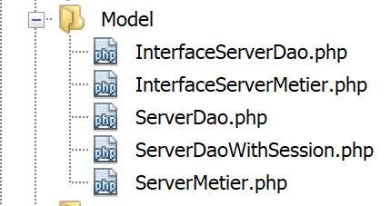
As classes e interfaces das camadas [business] e [DAO] estão agrupadas na pasta [Model]. Todas elas foram definidas e utilizadas em versões anteriores:
ExceptionImpots | A classe para exceções lançadas pela camada [DAO]. Definida na secção associada. |
InterfaceServerDao | Interface implementada pela camada [dao] do servidor. Definida na secção do link. |
ServerDao | Implementação da interface [InterfaceServerDao]. Implementa a camada [dao] do servidor. Definida na secção de links. |
ServerDaoWithSession | Implementação da interface [InterfaceServerDao]. Implementa a camada [dao] do servidor. Definida na secção «link». |
InterfaceServerMetier | Interface implementada pela camada [business] do servidor. Definida na secção de ligação. |
ServerBusiness | Implementação da interface [InterfaceMetier]. Implementa a camada [business] do servidor. Definida na secção «link». |
A aplicação atualmente em desenvolvimento faz uso extensivo de elementos já apresentados e utilizados:
- as camadas [business] e [DAO];
- os utilitários [Logger] e [SendAdminMail];
- as entidades [ExceptionImpots, TaxAdminData, Database];
Vamos concentrar-nos na camada [web] da aplicação:
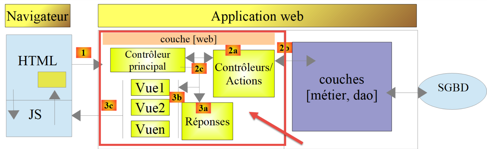
23.9. O controlador principal [main.php]
23.9.1. Introdução

- [1-2]: O controlador principal [main.php] [1] é configurado pelo ficheiro [config.json] [2];
Vamos rever a posição do controlador principal na nossa arquitetura MVC:

Em [1], o controlador principal [main.php] é o primeiro elemento da arquitetura MVC a processar a solicitação do cliente. Ele tem várias funções:
- Primeiro, realiza verificações básicas:
- o seu ficheiro de configuração existe e é válido;
- carregar todas as dependências do projeto. Isto equivale a carregar todos os elementos da arquitetura MVC;
- A ação solicitada foi especificada? Se sim, é válida?
- Se a ação solicitada for válida, selecione [2a] o controlador secundário que a irá processar e passe-lhe as informações necessárias: o pedido HTTP, a sessão e a configuração da aplicação;
- Recupera [2c] a resposta do controlador secundário. Dependendo do tipo de aplicação (JSON, XML, HTML) solicitado pelo cliente, seleciona [3a] a resposta (JsonResponse, XmlResponse, HtmlResponse) responsável por enviar a resposta ao cliente e passa-lhe toda a informação necessária (a solicitação HTTP, a sessão, a configuração da aplicação, a resposta do controlador secundário);
- assim que esta resposta tiver sido enviada [3c], libertar quaisquer recursos que possam ter sido alocados para o processamento da solicitação;
23.9.2. [main.php] - 1
O código para o controlador principal [main.php] é o seguinte:
<?php
// strict adherence to declared types of function parameters
declare (strict_types=1);
// namespace
namespace Application;
// symfony dependencies
use Symfony\Component\HttpFoundation\Request;
use Symfony\Component\HttpFoundation\Response;
use Symfony\Component\HttpFoundation\Session\Session;
// error handling by PHP
//ini_set("display_errors", "0");
error_reporting(E_ALL && !E_WARNING && !E_NOTICE);
// we retrieve the configuration
$configFilename = "config.json";
$fileContents = \file_get_contents($configFilename);
$erreur = FALSE;
// mistake?
if (!$fileContents) {
// we note the error
$état = 131;
$erreur = TRUE;
$message = "Le fichier de configuration [$configFilename] n'existe pas";
}
if (!$erreur) {
// retrieve the JSON code from the configuration file in an associative array
$config = \json_decode($fileContents, true);
// mistake?
if (!$config) {
// we note the error
$erreur = TRUE;
$état = 132;
$message = "Le fichier de configuration [$configFilename] n'a pu être exploité correctement";
}
}
// mistake?
if ($erreur) {
// preparation of JSON server response
// you can't use the configuration file
// symfony dependencies
require_once "C:/myprograms/laragon-lite/www/vendor/autoload.php";
// response preparation
$response = new Response();
$response->headers->set("content-type", "application/json");
$response->setCharset("utf-8");
// status code
$response->setStatusCode(Response::HTTP_INTERNAL_SERVER_ERROR);
// content
$response->setContent(json_encode(["action" => "", "état" => $état, "réponse" => $message], JSON_UNESCAPED_UNICODE));
// shipping
$response->send();
// end
exit;
}
…
Comentários
- linhas 10–12: o controlador principal utiliza os seguintes objetos Symfony:
- [Request]: o pedido HTTP atualmente a ser processado;
- [Session]: a sessão da aplicação web;
- [Response]: a resposta HTTP para o cliente;
- linha 15: durante todo o desenvolvimento, esta linha permanecerá comentada: os erros PHP são então incluídos no fluxo de texto enviado ao cliente. Se o cliente for um navegador, isto permite ao utilizador ver os erros encontrados pelo servidor. Isto ajuda na depuração;
- linha 16: todos os erros são reportados (E_ALL), exceto avisos (! E_WARNING) e notificações não fatais (! E_NOTICE). Por exemplo, se um ficheiro não puder ser aberto, o PHP gera um erro [E_NOTICE]. Se a linha 15 ativar a exibição de erros, o erro de abertura do ficheiro aparece no navegador do cliente. Isto é aceitável se se tiver esquecido de testar o resultado da abertura do ficheiro, mas menos se planeava testá-lo: uma linha [notice] sobrecarrega então a resposta do servidor ao cliente. Durante o desenvolvimento, a linha 16 também deve ser comentada: não se quer perder nenhum erro;
- linha 19: o ficheiro de configuração é lido;
- linhas 22–27: se esta operação de leitura falhar, o erro é registado (linha 25), a aplicação é definida para o estado [131] e é preparada uma mensagem de erro;
- linha 30: a cadeia JSON do ficheiro de configuração é descodificada;
- linhas 32–37: se a descodificação falhar, o erro é registado (linha 34), a aplicação é colocada no estado [132] e é preparada uma mensagem de erro;
- linhas 40–57: se ocorrer um erro durante a leitura do ficheiro de configuração, não podemos prosseguir. Preparamos então uma resposta JSON para o cliente:
- linha 44: uma vez que o ficheiro de configuração não foi lido, o ficheiro [autoload] exigido pelo [Symfony] deve ser importado manualmente;
- linhas 46–47: é preparada uma resposta JSON;
- linha 50: o código de estado HTTP da resposta será 500 INTERNAL_SERVER_ERROR;
- linha 52: definimos o conteúdo JSON da resposta. Todas as respostas geradas pela aplicação web em questão terão três chaves:
- [action]: a ação solicitada pelo cliente;
- [status]: o estado da aplicação após a execução desta ação;
- [response]: a resposta do servidor web;
- linha 54: a resposta JSON é enviada ao cliente;
23.9.3. [Postman] Testes - 1
Iremos verificar o comportamento do servidor quando o ficheiro de configuração estiver em falta ou estiver incorreto:

Organizaremos as várias solicitações que o nosso cliente [Postman] enviará ao servidor fiscal em coleções.
- Em [1], crie uma nova coleção;
- Em [2], atribua-lhe um nome;
- Em [3], a descrição é opcional;
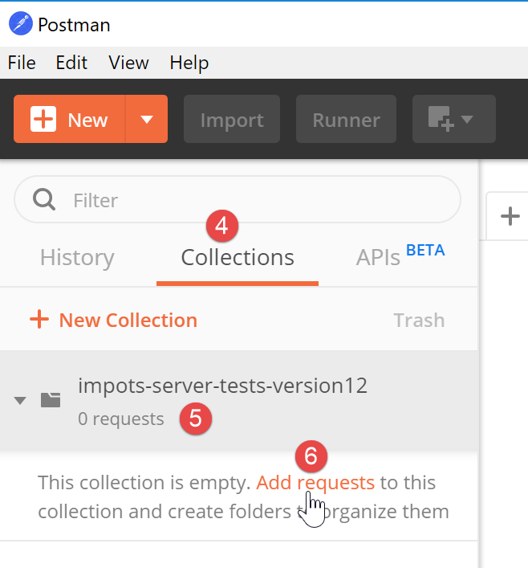
- Nas coleções [4], aparece agora uma coleção chamada [impots-server-tests-version12] [5];
- Em [6], pode adicionar um novo pedido à coleção;

- Em [7], é atribuído um nome à consulta;
- em [8], a descrição é opcional;

- em [9-11], a solicitação é adicionada à coleção;
- em [12], selecione o tipo de pedido; neste caso, um pedido [GET]. Em [19], os diferentes tipos de pedido disponíveis;
- em [13], introduza aqui o URL do servidor;
- em [14], introduza aqui os parâmetros adicionados à URL; estes serão parâmetros GET. A vantagem de os introduzir aqui em vez de diretamente na URL é que o [Postman] irá codificá-los para a URL. Se os introduzir diretamente na URL, terá de os codificar para a URL você mesmo;
- em [15], [Autorização] é utilizada para definir o utilizador que irá iniciar sessão. Não precisaremos de utilizar esta opção;
- em [16], os cabeçalhos HTTP que acompanharão a solicitação. Vários cabeçalhos são incluídos automaticamente na solicitação. Pode adicionar novos aqui;
- Em [17], [Body] refere-se aos parâmetros de uma operação [POST]. Teremos de utilizar esta opção;
Iremos realizar o seguinte teste:
- em [main.php], especificamos que o ficheiro de configuração é [config2.json], que não existe:

- A linha 16 do código deve ser descomentada;
- Linha 18: o erro relativo ao nome do ficheiro de configuração;
Vamos abrir o [Postman] [13, 20], introduzir o URL do servidor web de cálculo de impostos e executá-lo [21]:

A resposta devolvida pelo servidor (é claro que o Laragon tem de estar em execução) é a seguinte:

- em [22], o servidor devolveu um código HTTP [500 Internal Server Error];
- em [23], [Body] refere-se ao corpo da resposta, ou seja, o documento enviado pelo servidor por trás dos cabeçalhos HTTP [28];
- em [26], vemos que o [Postman] recebeu uma resposta JSON;
- em [27], a resposta JSON formatada;
- em [28], a resposta JSON bruta sem formatação;
- em [29], o modo [Preview] é utilizado quando a resposta é HTML. O modo [Preview] apresenta então a página recebida;
- Em [30], a resposta JSON do servidor. Esta é, de facto, a que esperávamos;
Em [25], os cabeçalhos HTTP enviados na resposta do servidor são os seguintes:

- em [32], o tipo JSON da resposta;
Este teste inicial permitiu-nos verificar que:
- podemos enviar qualquer tipo de pedido ao servidor testado;
- podemos definir os parâmetros GET ou POST;
- temos a resposta completa: cabeçalhos HTTP e o documento que se segue a esses cabeçalhos [Corpo];
Agora, vamos realizar um segundo teste:

- em [1-3], o ficheiro [config3.json] é um ficheiro JSON com erros sintáticos;
- Em [4], o [main.php] está configurado para utilizar o [config3.json];
Adicionamos um novo pedido no [Postman]:

- [1-3], clique com o botão direito do rato em [2] e selecione a opção [duplicar] para duplicar a solicitação [2];
- Em [4], a nova solicitação tem um nome padrão, que alteramos em [5];

- Em [6], a solicitação renomeada;
- Em [9-10], enviamos a mesma solicitação GET de antes;

- em [11], a resposta JSON do servidor;
Aqui mostramos como serão testadas as várias ações do serviço web de cálculo de impostos.
23.9.4. [main.php] – 2
Retomamos a análise do código do controlador principal [main.php]:
<?php
// strict adherence to declared types of function parameters
declare (strict_types=1);
// namespace
namespace Application;
// symfony dependencies
use Symfony\Component\HttpFoundation\Request;
use Symfony\Component\HttpFoundation\Response;
use Symfony\Component\HttpFoundation\Session\Session;
// error handling by PHP
//ini_set("display_errors", "0");
error_reporting(E_ALL && !E_WARNING && !E_NOTICE);
// we retrieve the configuration
$configFilename = "config.json";
…
// include the necessary script dependencies
$rootDirectory = $config["rootDirectory"];
foreach ($config["relativeDependencies"] as $dependency) {
require_once "$rootDirectory$dependency";
}
// absolute dependencies (third-party libraries)
foreach ($config["absoluteDependencies"] as $dependency) {
require_once "$dependency";
}
// log file creation
try {
$logger = new Logger($config['logsFilename']);
} catch (ExceptionImpots $ex) {
// log file could not be created - internal server error
$état = 133;
(new JsonResponse())->send(
NULL, NULL, $config,
Response::HTTP_INTERNAL_SERVER_ERROR,
["action" => "non déterminée", "état" => $état, "réponse" => "Le fichier de logs [{$config['logsFilename']}] n'a pu être créé"],
[]);
// completed
exit;
}
Comentários
- linha 18: agora temos um ficheiro de configuração [config.json] que existe e está sintaticamente correto. Devemos também verificar se as chaves esperadas estão presentes neste ficheiro. Vamos assumir que isto faz parte do processo normal de depuração do programador. Poderíamos ter aplicado o mesmo raciocínio aos dois erros anteriores;
- linhas 20–28: incluímos todas as dependências necessárias para o projeto web. Já nos deparámos com este código várias vezes;
- linhas 31–43: tentamos criar o objeto [Logger], que nos permitirá registar eventos no ficheiro [$config['logsFilename']]. Esta criação pode falhar;
- linhas 33–43: tratamento do erro ao criar o objeto [Logger];
- linha 35: definimos um número de estado;
- linhas 36–40: enviamos uma resposta JSON;
- linha 42: paramos o script;
Todas as respostas enviadas ao cliente implementam a seguinte interface [InterfaceResponse]:

O código para a interface [InterfaceResponse] é o seguinte:
<?php
namespace Application;
// symfony dependencies
use Symfony\Component\HttpFoundation\Request;
use Symfony\Component\HttpFoundation\Session\Session;
interface InterfaceResponse {
// Request $request : requête en cours de traitement
// Session $session: the web application session
// array $config: application configuration
// int statusCode: HTTP response status code
// array $content: server response
// array $headers: HTTP headers to be added to the response
// Logger $logger: the logger for writing logs
public function send(
Request $request = NULL,
Session $session = NULL,
array $config,
int $statusCode,
array $content,
array $headers,
Logger $logger = NULL): void;
}
- linhas 19–27: a interface [InterfaceResponse] possui um único método [send] para enviar a resposta ao cliente;
- linhas 11–17: o significado dos vários parâmetros do método [send];
- linhas 23–25: os parâmetros [$statusCode, $content, $headers] fazem parte da saída padrão dos controladores secundários da aplicação. No entanto, a resposta pode necessitar de informações adicionais. Por isso, fornecemos-lhe os três primeiros parâmetros (linhas 20–22), que lhe dão acesso a todas as informações relativas ao pedido, à sessão e à configuração;
- linha 26: a resposta requer o [Logger] porque irá registar a resposta enviada ao cliente;
A classe [JsonResponse] implementa a interface [InterfaceResponse] da seguinte forma:
<?php
namespace Application;
// symfony dependencies
use Symfony\Component\Serializer\Encoder\JsonEncode;
use Symfony\Component\Serializer\Encoder\JsonEncoder;
use Symfony\Component\Serializer\Normalizer\ObjectNormalizer;
use Symfony\Component\Serializer\Serializer;
use \Symfony\Component\HttpFoundation\Request;
use \Symfony\Component\HttpFoundation\Session\Session;
class JsonResponse extends ParentResponse implements InterfaceResponse {
// Request $request : requête en cours de traitement
// Session $session: the web application session
// array $config: application configuration
// int statusCode: HTTP response status code
// array $content: server response
// array $headers: HTTP headers to be added to the response
// Logger $logger: the logger for writing logs
public function send(
Request $request = NULL,
Session $session = NULL,
array $config,
int $statusCode,
array $content,
array $headers,
Logger $logger = NULL): void {
// symfony serializer preparation
$serializer = new Serializer(
[
// required for object serialization
new ObjectNormalizer()],
// encoder jSON
// for options, make OU between the different options
[new JsonEncoder(new JsonEncode([JsonEncode::OPTIONS => JSON_UNESCAPED_UNICODE]))]
);
// serialization jSON
$json = $serializer->serialize($content, 'json');
// headers
$headers = array_merge($headers, ["content-type" => "application/json"]);
// sending reply
parent::sendResponse($statusCode, $json, $headers);
// log
if ($logger !== NULL) {
$logger->write("réponse=$json\n");
}
}
}
Comentários
- linha 13: a classe implementa a interface [InterfaceResponse];
- linha 13: a classe estende a classe [ParentResponse]. Todos os tipos [Response] estendem esta classe. É esta classe pai que envia a resposta ao cliente (linha 46). Como este código era comum a todos os tipos [Response], foi extraído para uma classe pai;
- linhas 33–40: instanciação do serializador [Symfony], que converterá a resposta do servidor [$content] numa cadeia JSON (linha 42);
- linhas 34–36: o primeiro parâmetro do construtor [Serializer] é um array. Nele, colocamos uma instância da classe [ObjectNormalizer] necessária para a serialização de objetos. Nesta aplicação, isto ocorre com uma lista de simulações, em que cada simulação é uma instância da classe [Simulation];
- Linha 39: O segundo parâmetro do construtor [Serializer] é também um array: contém todos os codificadores utilizados numa serialização (XML, JSON, CSV, etc.);
- linha 39: aqui haverá apenas um codificador, do tipo [JsonEncoder]. O construtor sem parâmetros poderia ter sido suficiente. Aqui, passámos um parâmetro [JsonEncode] ao construtor, exclusivamente para passar opções de codificação JSON;
- linha 39: o parâmetro do construtor [JsonEncode] é uma matriz de opções. Aqui, usamos a opção [JSON_UNESCAPED_UNICODE] para solicitar que os caracteres UTF-8 na cadeia JSON sejam renderizados nativamente, em vez de serem «escapados»;
- linha 42: o corpo da resposta HTTP é serializado em JSON utilizando o serializador anterior;
- linha 44: Adicionamos o cabeçalho HTTP que informa ao cliente que estamos a enviar JSON;
- linha 46: a classe pai é solicitada a enviar a resposta ao cliente;
- Linhas 48–50: Registamos a resposta JSON;
O código para a classe pai [ParentResponse] é o seguinte:
<?php
namespace Application;
// symfony dependencies
use Symfony\Component\HttpFoundation\Response;
class ParentResponse {
// int $statusCode: HTTP response status code
// string $content: the body of the response to be sent
// depending on the case, this is a jSON, XML, HTML string
// array $headers: HTTP headers to be added to the response
public function sendResponse(
int $statusCode,
string $content,
array $headers): void {
// preparing the server's text response
$response = new Response();
$response->setCharset("utf-8");
// status code
$response->setStatusCode($statusCode);
// headers
foreach ($headers as $text => $value) {
$response->headers->set($text, $value);
}
// we send the answer
$response->setContent($content);
$response->send();
}
}
Comentários
- linhas 10–13: o significado dos três parâmetros do método [send];
- linha 17: note que o corpo da resposta é do tipo [string] e, portanto, está pronto para ser enviado (linha 30);
- linha 22: a resposta conterá caracteres UTF-8;
- linha 24: código de estado HTTP da resposta;
- linhas 26–28: adição dos cabeçalhos HTTP fornecidos pelo código de chamada;
- linhas 30–31: envio da resposta ao cliente;
Detalhámos todo o ciclo de vida de uma resposta JSON. Não voltaremos a abordar este assunto mais tarde. Basta lembrar-se da assinatura da interface [InterfaceResponse]:
interface InterfaceResponse {
// Request $request : requête en cours de traitement
// Session $session: the web application session
// array $config: application configuration
// int statusCode: HTTP response status code
// array $content: server response
// array $headers: HTTP headers to be added to the response
// Logger $logger: the logger for writing logs
public function send(
Request $request = NULL,
Session $session = NULL,
array $config,
int $statusCode,
array $content,
array $headers,
Logger $logger = NULL): void;
}
O controlador principal [main.php] deve seguir esta assinatura sempre que solicitar que uma resposta seja enviada ao cliente.
23.9.5. Testes [Postman] – 2
Modificamos o ficheiro [config.json] da seguinte forma:

- em [1], especificamos que o ficheiro de registo é [Logs], que é uma pasta [2]. A criação do ficheiro [Logs] deverá, portanto, falhar;
Criamos um novo pedido [Postman] [3], denominado [error-133]:

- [2-4]: Definimos a mesma solicitação dos dois testes anteriores;
- [5-7]: Recuperamos com sucesso a resposta JSON esperada;
23.9.6. [main.php] – 3
Vamos continuar a nossa análise do controlador principal [main.php]:
<?php
// strict adherence to declared types of function parameters
declare (strict_types=1);
// namespace
namespace Application;
// symfony dependencies
use Symfony\Component\HttpFoundation\Request;
use Symfony\Component\HttpFoundation\Response;
use Symfony\Component\HttpFoundation\Session\Session;
// error handling by PHP
…
// log file creation
…
// 1st log
$logger->write("\n---nouvelle requête\n");
// current query
$request = Request::createFromGlobals();
// session
$session = new Session();
$session->start();
// error list
$erreurs = [];
$erreur = FALSE;
// we manage the requested action
if (!$request->query->has("action")) {
$erreurs[] = "paramètre [action] manquant";
$erreur = TRUE;
$état = 101;
$action = "";
} else {
// memorize the action
$action = strtolower($request->query->get("action"));
}
// we log the action
$logger->write("action [$action] demandée\n");
// does the action exist?
if (!$erreur && !array_key_exists($action, $config["actions"])) {
$erreurs[] = "action [$action] invalide";
$erreur = TRUE;
$état = 102;
}
// the session type must be known before performing certain actions
if (!$erreur && !$session->has("type") && $action !== "init-session") {
$erreurs[] = "pas de session en cours. Commencer par action [init-session]";
$erreur = TRUE;
$état = 103;
}
// some actions require authentication
if (!$erreur && !$session->has("user") && $action !== "authentifier-utilisateur" && $action !== "init-session") {
$erreurs[] = "action demandée par utilisateur non authentifié";
$erreur = TRUE;
$état = 104;
}
// mistakes?
if ($erreurs) {
// we prepare the answer without sending it
$statusCode = Response::HTTP_BAD_REQUEST;
$content = ["réponse" => $erreurs];
$headers = [];
} else {
// ---------------------------
// execute the action using its controller
$controller = __NAMESPACE__ . $config["actions"][$action];
$logger->write("contrôleur : $controller\n");
list($statusCode, $état, $content, $headers) = (new $controller())->execute($config, $request, $session);
}
// --------------------- we send the answer
// cas de l'erreur fatale HTTP_INTERNAL_SERVER_ERROR
// send an e-mail to the administrator if you can
if ($statusCode === Response::HTTP_INTERNAL_SERVER_ERROR && $config['adminMail'] != NULL) {
$infosMail = $config['adminMail'];
$infosMail['message'] = json_encode($content, JSON_UNESCAPED_UNICODE);
$sendAdminMail = new SendAdminMail($infosMail, $logger);
$sendAdminMail->send();
}
// the answer depends on the session type
if ($session->has("type")) {
// the session type is in the session
$type = $session->get("type");
} else {
// if no type in session, then the default response is jSON
$type = "json";
}
// we add the keys [action, state] to the controller response
$content = ["action" => $action, "état" => $état] + $content;
// instantiate the [Response] object responsible for sending the response to the client
$response = __NAMESPACE__ . $config["types"][$type]["response"];
(new $response())->send($request, $session, $config, $statusCode, $content, $headers, $logger);
// the reply has been sent - resources are released
$logger->close();
exit;
Comentários
- Depois de realizadas as verificações iniciais e de saber que pode prosseguir, o controlador principal concentra-se na ação que lhe foi solicitada: deve cumprir determinadas condições;
- linha 21: registamos o facto de termos uma nova solicitação. Não podíamos fazer isso antes porque não tínhamos a certeza de que tínhamos um ficheiro de registo válido;
- linha 23: encapsulamos todas as informações da solicitação do cliente no objeto [Request] do Symfony;
- linha 26: iniciamos uma nova sessão ou recuperamos a sessão existente, caso exista;
- linha 27: a sessão é ativada;
- linha 29: um array de mensagens de erro;
- linha 30: um booleano que nos indica, à medida que os testes são executados, se ocorreu ou não um erro;
- Linha 32: O parâmetro [action] deve ser incluído na URL na forma [main.php?action=someAction]. O parâmetro [action] é então incluído nos parâmetros [$request→query];
- linhas 33–36: caso em que o parâmetro [action] está ausente da URL. O erro é registado e é-lhe atribuído um código de estado [101];
- linha 39: se o parâmetro [action] estiver presente na URL, é armazenado;
- linha 42: o tipo de ação é registado;
- linhas 45–49: se o parâmetro [action] estiver presente, deve ser válido. Todas as ações autorizadas estão definidas na matriz associativa [$config["actions"]];
- linhas 46–48: se a ação for inválida, o erro é registado e é-lhe atribuído o estado [102];
- linhas 52–56: temos uma ação válida. Ela ainda deve cumprir outras condições. A aplicação web fornece três tipos de resposta (JSON, XML, HTML). Este tipo é definido pela ação [init-session]. Esta ação coloca o tipo de sessão na chave [type];
- linha 52: fora da ação [init-session], qualquer outra ação deve ocorrer com uma chave [type] na sessão;
- linhas 53–55: se não for esse o caso, o erro é registado e é-lhe atribuído o estado [103];
- linhas 58–63: fora das ações [init-session] e [authenticate-user], todas as outras ações devem ocorrer após a autenticação. Isto é feito utilizando a ação [authenticate-user], que, se a autenticação for bem-sucedida, coloca uma chave [user] na sessão;
- linha 59: se a ação não for nem [init-session] nem [authenticate-user] e a chave [user] não estiver na sessão, ocorre um erro;
- linhas 60–62: o erro é registado e recebe o estado [104];
- linhas 66–71: verificamos se a matriz [$errors] não está vazia. Se estiver, então a ação solicitada ou o seu contexto de execução estão incorretos;
- linhas 68–70: preparamos a resposta a enviar ao cliente, mas ainda não a enviamos;
- linha 68: código de estado HTTP;
- linha 69: corpo da resposta;
- linha 70: cabeçalhos a adicionar à resposta; nenhum aqui;
- linha 73: temos uma ação válida. Vamos pedir ao seu controlador (secundário) para a processar;
- linha 74: construímos o nome da classe do controlador a executar. [__NAMESPACE__] é o namespace em que nos encontramos, aqui [Application] (linha 7);
- os nomes das classes de controladores secundários estão no ficheiro [config.json]:
"actions":
{
"init-session": "\\InitSessionController",
"authentifier-utilisateur": "\\AuthentifierUtilisateurController",
"calculer-impot": "\\CalculerImpotController",
"lister-simulations": "\\ListerSimulationsController",
"supprimer-simulation": "\\SupprimerSimulationController",
"fin-session": "\\FinSessionController",
"afficher-calcul-impot": "\\AfficherCalculImpotController"
},
Cada ação corresponde a um controlador secundário. Se a ação for [authenticate-user], a variável [$controller] na linha 74 terá, portanto, o valor [Application/AuthentifierUtilisateurController];
- linha 75: registamos o nome do controlador secundário para verificação durante o desenvolvimento;
- linha 76: o controlador secundário é executado. Voltaremos aos controladores secundários um pouco mais tarde;
- linha 76: todos os controladores secundários devolvem o mesmo tipo de resultado, que é uma matriz:
- o primeiro elemento da matriz [$statusCode] é o código de estado HTTP da resposta a ser enviada;
- o segundo elemento [$state] é o estado da aplicação após a execução do controlador;
- o terceiro elemento [$content] é uma matriz associativa com uma única chave [response], que é o corpo da resposta a ser enviada ao cliente;
- o quarto elemento [$headers] é uma matriz de cabeçalhos HTTP a serem adicionados à resposta enviada ao cliente;
- linha 79: chegamos aqui:
- quer porque ocorreu um erro (linhas 68–70);
- ou após a execução de um controlador (linhas 72–76);
- em ambos os casos, os elementos [$statusCode, $status, $content, $headers] necessários para construir a resposta ao cliente são conhecidos;
- linhas 82–87: tratam do caso específico do código de estado [500 Internal Server Error]. Se um controlador definiu este código de estado, significa que a aplicação não pode funcionar. É o que acontece, por exemplo, com cálculos de impostos se o SGBD utilizado não tiver sido iniciado ou já não estiver a responder. É então enviado um e-mail ao administrador da aplicação para o notificar. Não iremos comentar especificamente este código. A utilização da classe [SendAdminMail] já foi apresentada (ver secção em link);
- linhas 89–95: Determinamos o tipo [jSON, XML, HTML] da aplicação web. Se a ação [init-session] tiver sido executada com sucesso, este tipo encontra-se na sessão associada à chave [type] (linha 91). Caso contrário, definimos arbitrariamente um tipo para a resposta, o tipo JSON (linha 94);
- linha 97: [$content] é uma matriz com uma única chave [response] e um único valor, o corpo da resposta a ser enviada ao cliente. As chaves [action] e [status] são adicionadas a ela. A chave [action] facilitará o rastreamento dos registos no ficheiro [logs.txt]. A chave [status] terá duas finalidades:
- permitirá que os clientes JSON e XML saibam o estado em que a ação executada colocou a aplicação web;
- no caso de uma resposta HTML, permitirá escolher a visualização HTML a enviar para o navegador do cliente;
- linha 99: selecionamos o tipo de classe [Response] a ser executado para enviar a resposta ao cliente;
Já apresentámos a classe [JsonResponse] na secção anterior. Ela implementa a interface [InterfaceResponse] e estende a classe [ParentResponse]. O mesmo se aplica às outras duas classes, [XmlResponse] e [HtmlResponse].
As respostas estão agrupadas na pasta [Responses]:

Todas estas classes implementam a interface [InterfaceResponse], que também é apresentada na secção com o link:
<?php
namespace Application;
// symfony dependencies
use Symfony\Component\HttpFoundation\Request;
use Symfony\Component\HttpFoundation\Session\Session;
interface InterfaceResponse {
// Request $request : requête en cours de traitement
// Session $session: the web application session
// array $config: application configuration
// int statusCode: HTTP response status code
// array $content: server response
// array $headers: HTTP headers to be added to the response
// Logger $logger: the logger for writing logs
public function send(
Request $request = NULL,
Session $session = NULL,
array $config,
int $statusCode,
array $content,
array $headers,
Logger $logger = NULL): void;
}
Esta interface possui um único método, [send], responsável por enviar a resposta ao cliente. Este método possui os 7 parâmetros descritos nas linhas 11–17. Todas as classes e interfaces na pasta [Responses] estão no namespace [Application] (linha 3).
Voltemos ao código em [main.php]:
…
// on ajoute les clés [action, état] à la réponse du contrôleur
$content = ["action" => $action, "état" => $état] + $content;
// on instancie l'objet [Response] chargée d'envoyer la réponse au client
$response = __NAMESPACE__ . $config["types"][$type];
(new $response())->send($request, $session, $config, $statusCode, $content, $headers, $logger);
// la réponse a été envoyée - on libère les ressources
$logger->close();
exit;
- Linha 5: Instanciamos a classe [Response] que corresponde ao tipo de aplicação. Estas classes estão definidas no ficheiro [config.json] da seguinte forma:
"types": {
"json": "\\JsonResponse",
"html": "\\HtmlResponse",
"xml": "\\XmlResponse"
},
- linha 5: o nome da classe é precedido pelo seu namespace;
- linha 6: a classe [Response] é instanciada e o seu método [send] é chamado com os 7 parâmetros que espera. Estes parâmetros são os da interface [InterfaceResponse] que todas as classes de resposta implementam. Isto envia a resposta ao cliente;
- linha 9: o ficheiro de registo é fechado;
- linha 10: o controlador principal concluiu o seu trabalho;
23.9.7. Testes [Postman] – 3
Iremos testar vários casos de erro para o parâmetro [action] da URL.

- em [1]:
- [error-101]: caso em que o parâmetro [action] está em falta na URL;
- [error-102]: caso em que o parâmetro [action] está presente na URL, mas não é reconhecido;
- [error-103]: caso em que o parâmetro [action] está presente na URL e é reconhecido, mas o tipo de resposta esperado [json, xml, html] não foi definido;
Cada pedido é executado. Apresentamos os resultados diretamente:
Acima:
- em [2-4], uma solicitação sem o parâmetro [action] na URL [4];
- em [5-7], o resultado JSON;

Acima:
- em [5-9], um pedido com um parâmetro [action] inválido;
- em [10-13], a resposta JSON;

Acima:
- em [14-19], uma ação reconhecida, mas o tipo (json, xml, html) ainda não foi especificado;
- em [20-23], a resposta JSON do servidor;
23.10. Controladores secundários
Cada ação é executada por um dos controladores na pasta [Controllers]:


Na arquitetura geral da aplicação acima, os controladores secundários encontram-se em [2a].
Cada controlador implementa a seguinte interface [InterfaceController]:
<?php
namespace Application;
// symfony dependencies
use Symfony\Component\HttpFoundation\Request;
use Symfony\Component\HttpFoundation\Session\Session;
interface InterfaceController {
// $config is the application configuration
// traitement d'une requête Request
// session and can modify it
// $infos is additional information specific to each controller
// renders an array [$statusCode, $état, $content, $headers]
public function execute(
array $config,
Request $request,
Session $session,
array $infos=NULL): array;
}
Comentários
- Todos os controladores secundários são executados através do método [execute] na linha 17. Passamos as informações conhecidas do controlador principal para este método:
- linha 18: [array $config], que encapsula a configuração da aplicação;
- linha 19: [Request $request], que é o pedido HTTP atualmente a ser processado;
- linha 20: [Session $session], que é a sessão atual da aplicação web;
- linha 21: [array $infos=NULL], que é uma matriz adicional de informações para o controlador, caso os três primeiros parâmetros do método sejam insuficientes. Nesta aplicação, este parâmetro nunca foi utilizado. É incluído por precaução;
- linha 21: o método [execute] devolve a matriz [$statusCode, $status, $content, $headers]
- [int $statusCode]: o código de estado da resposta HTTP;
- [int $state]: o estado da aplicação no final da execução;
- [array $content]: uma matriz associativa [response=>result] em que [result] pode ser de qualquer tipo: este é o resultado produzido pelo controlador e será enviado ao cliente após ser serializado como uma string;
- [array $headers]: a lista de cabeçalhos HTTP a incluir na resposta HTTP do servidor;
Cada controlador secundário é chamado pelo seguinte código no controlador principal:
// on exécute l'action à l'aide de son contrôleur
$controller = __NAMESPACE__ . $config["actions"][$action];
list($statusCode, $état, $content, $headers) = (new $controller())->execute($config, $request, $session);
Na linha 3, vemos que o quarto parâmetro [array $infos=NULL] do método [execute] não é utilizado.
23.11. Ações
Vamos agora rever as várias ações possíveis do serviço web:
Ação | Função | Contexto de execução |
init-session | Utilizado para definir o tipo (json, xml, html) das respostas pretendidas | Pedido GET main.php?action=init-session&type=x pode ser enviada a qualquer momento |
authenticate-user | Autoriza ou recusa o login de um utilizador | Pedido POST main.php?action=authenticate-user A solicitação deve conter dois parâmetros postados [user, password] Só pode ser emitida se o tipo de sessão (json, xml, html) for conhecido |
calculate-tax | Realiza uma simulação de cálculo de impostos | Pedido POST para main.php?action=calculate-tax A solicitação deve conter três parâmetros enviados [casado, filhos, salário] Só pode ser emitida se o tipo de sessão (json, xml, html) for conhecido e o utilizador estiver autenticado |
list-simulations | Pedido para visualizar a lista de simulações realizadas desde o início da sessão | Pedido GET main.php?action=list-simulations A solicitação não aceita nenhum outro parâmetro Só pode ser emitida se o tipo de sessão (json, xml, html) for conhecido e o utilizador estiver autenticado |
delete-simulation | Elimina uma simulação da lista de simulações | Pedido GET main.php?action=list-simulations&number=x A solicitação não aceita nenhum outro parâmetro Só pode ser emitida se o tipo de sessão (json, xml, html) for conhecido e o utilizador estiver autenticado |
end-session | Encerra a sessão de simulação. | Tecnicamente, a sessão web antiga é eliminada e é criada uma nova sessão Só pode ser emitida se o tipo de sessão (json, xml, html) for conhecido e o utilizador estiver autenticado |
Todos os controladores secundários procedem da mesma forma:
- verificam os seus parâmetros. Estes encontram-se no objeto [Request→query] para os parâmetros presentes no URL e no objeto [Request→request] para aqueles que são enviados (pedido POST);
- Um controlador é semelhante a uma função ou método que verifica a validade dos seus parâmetros. Para o controlador, no entanto, é um pouco mais complicado:
- os parâmetros esperados podem estar em falta;
- os parâmetros esperados são todos strings, enquanto uma função pode especificar o tipo dos seus parâmetros. Se o parâmetro esperado for um número, então deve verificar se a string do parâmetro é de facto a de um número;
- uma vez verificado que os parâmetros esperados estão presentes e são sintaticamente corretos, deve verificar se são válidos no contexto de execução atual. Este contexto está presente na sessão. O exemplo de autenticação é um exemplo de um contexto de execução. Certas ações só devem ser processadas depois de o cliente ter sido autenticado. Geralmente, uma chave na sessão indica se esta autenticação ocorreu ou não;
- assim que as verificações anteriores tenham sido concluídas, o controlador secundário pode prosseguir. Este processo de verificação de parâmetros é muito importante. Não podemos aceitar que um cliente nos envie dados arbitrários em qualquer momento durante o ciclo de vida da aplicação. Temos de manter controlo total sobre o ciclo de vida da aplicação;
- Assim que o seu trabalho estiver concluído, o controlador secundário devolve o conjunto [$statusCode, $state, $content, $headers] esperado pelo controlador principal que o chamou;
Vamos agora rever os vários controladores — ou, por outras palavras, as várias ações que impulsionam o ciclo de vida da aplicação web.
23.11.1. A ação [init-session]
A ação [init-session] é tratada pelo seguinte [InitSessionController]:
<?php
namespace Application;
// symfony dependencies
use Symfony\Component\HttpFoundation\Request;
use Symfony\Component\HttpFoundation\Response;
use Symfony\Component\HttpFoundation\Session\Session;
class InitSessionController implements InterfaceController {
// $config is the application configuration
// traitement d'une requête Request
// session and can modify it
// $infos is additional information specific to each controller
// renders an array [$statusCode, $état, $content, $headers]
public function execute(
array $config,
Request $request,
Session $session,
array $infos = NULL): array {
// you must have a GET and a single parameter other than [action]
$method = strtolower($request->getMethod());
$erreur = $method !== "get" || $request->query->count() != 2;
if ($erreur) {
$état = 701;
$message = "méthode GET exigée avec paramètres [action, type] dans l'URL";
return [Response::HTTP_BAD_REQUEST, $état, ["réponse" => $message], []];
}
// retrieve the GET parameters
$erreur = FALSE;
// type
if (!$request->query->has("type")) {
$erreur = TRUE;
$état = 702;
$message = "paramètre [type] manquant";
} else {
$type = strtolower($request->query->get("type"));
}
// type verification
if (!$erreur && !array_key_exists($type, $config["types"])) {
$erreur = TRUE;
$état = 703;
$message = "paramètre type [$type] invalide";
}
// mistake?
if ($erreur) {
return [Response::HTTP_BAD_REQUEST, $état, ["réponse" => $message], []];
}
// put the session type in the session
$session->set("type", $type);
// message of success
$message = "session démarrée avec type [$type]";
$état = 700;
return [Response::HTTP_OK, $état, ["réponse" => $message], []];
}
}
Comentários
- Esperamos uma solicitação [GET main.php?action=init-session&type=xxx]
- linhas 25-26: verificamos se a solicitação é uma solicitação GET com dois parâmetros na URL;
- linhas 27–31: se não for esse o caso, registamos o erro e enviamos uma resposta [$statusCode, $status, $content, $headers] para o controlador principal;
- linhas 35-39: verificamos se o parâmetro [type] está presente na URL. Caso contrário, registamos o erro;
- linha 40: registamos o tipo de sessão;
- linhas 43–47: verificamos se o tipo de sessão é um dos termos (json, xml, html). Se não for, registamos o erro;
- linhas 49–51: se ocorreu um erro, um resultado [$statusCode, $status, $content, $headers] é enviado para o controlador principal;
- linha 53: o tipo de sessão é armazenado na sessão da aplicação web;
- linhas 55–57: o controlador concluiu o seu trabalho. É enviada uma resposta de sucesso [$statusCode, $status, $content, $headers] para o controlador principal;
Vamos rever o que o controlador principal faz com as respostas dos controladores secundários:
// erreurs ?
if ($erreurs) {
// on prépare la réponse sans l'envoyer
$statusCode = Response::HTTP_BAD_REQUEST;
$content = ["réponse" => $erreurs];
$headers = [];
} else {
// ---------------------------
// on exécute l'action à l'aide de son contrôleur
$controller = __NAMESPACE__ . $config["actions"][$action];
$logger->write("contrôleur : $controller\n");
list($statusCode, $état, $content, $headers) = (new $controller())->execute($config, $request, $session);
}
// --------------------- on envoie la réponse
// cas de l'erreur fatale HTTP_INTERNAL_SERVER_ERROR
// on envoie un mail à l'administrateur si on peut
if ($statusCode === Response::HTTP_INTERNAL_SERVER_ERROR && $config['adminMail'] != NULL) {
$infosMail = $config['adminMail'];
$infosMail['message'] = json_encode($content, JSON_UNESCAPED_UNICODE);
$sendAdminMail = new SendAdminMail($infosMail, $logger);
$sendAdminMail->send();
}
// la réponse dépend du type de la session
if ($session->has("type")) {
// le type de session est dans la session
$type = $session->get("type");
} else {
// si pas de type dans session, alors par défaut ce sera une réponse en jSON
$type = "json";
}
// on ajoute les clés [action, état] à la réponse du contrôleur
$content = ["action" => $action, "état" => $état] + $content;
// on instancie l'objet [Response] chargée d'envoyer la réponse au client
$response = __NAMESPACE__ . $config["types"][$type]["response"];
(new $response())->send($request, $session, $config, $statusCode, $content, $headers, $logger);
// la réponse a été envoyée - on libère les ressources
$logger->close();
exit;
- linha 12: o controlador principal recupera o resultado do controlador secundário;
- linhas 35-36: após algumas verificações, envia a resposta instanciando uma das classes [JsonResponse, XmlResponse, HtmlResponse], dependendo do tipo (json, xml, html) da sessão atual;
A seguir, realizaremos testes [Postman] como parte de uma sessão de simulação utilizando o tipo [json]. A funcionalidade da classe [JsonResponse] foi apresentada na secção indicada.
23.11.2. Testes [Postman]

Acima:
- em [2], três novos testes;
- em [3-7], a ação [init-session] com o parâmetro [type] em falta;
- em [8-11], a resposta JSON do servidor;

Acima:
- em [1-7], a ação [init-session] com um parâmetro [type] incorreto;
- em [8-11], a resposta JSON do servidor;

Acima:
- em [1-8], a ação [init-session] com o tipo JSON;
- em [9-12], a resposta JSON do servidor;
23.11.3. A ação [authenticate-user]
A ação [authenticate-user] é executada pelo seguinte controlador [AuthentifierUtilisateurController]:
<?php
namespace Application;
// symfony dependencies
use \Symfony\Component\HttpFoundation\Response;
use \Symfony\Component\HttpFoundation\Request;
use \Symfony\Component\HttpFoundation\Session\Session;
class AuthentifierUtilisateurController implements InterfaceController {
// $config is the application configuration
// traitement d'une requête Request
// session and can modify it
// $infos is additional information specific to each controller
// renders an array [$statusCode, $état, $content, $headers]
public function execute(
array $config,
Request $request,
Session $session,
array $infos = NULL): array {
// you must have a POST and a single GET parameter
$method = strtolower($request->getMethod());
$erreur = $method !== "post" || $request->query->count() != 1;
if ($erreur) {
$état = 201;
$message = "méthode POST requise, paramètre [action] dans l'URL, paramètres postés [user,password]";
// return the result to the main controller
return [Response::HTTP_BAD_REQUEST, $état, ["réponse" => $message], []];
}
// retrieve POST parameters
$erreurs = [];
// user
$état = 210;
if (!$request->request->has("user")) {
$état += 2;
$erreurs[] = "paramètre [user] manquant";
} else {
$user = $request->request->get("user");
}
// password
if (!$request->request->has("password")) {
$état += 4;
$erreurs[] = "paramètre [password] manquant";
} else {
$password = trim($request->request->get("password"));
}
// mistake?
if ($erreurs) {
// return the result to the main controller
return [Response::HTTP_BAD_REQUEST, $état, ["réponse" => $erreurs], []];
}
// verification of user credentials
// does the user exist?
$users = $config["users"];
$i = 0;
$trouvé = FALSE;
while (!$trouvé && $i < count($users)) {
$trouvé = ($user === $users[$i]["login"] && $users[$i]["passwd"] === $password);
$i++;
}
// found?
if (!$trouvé) {
// error message
$message = "Echec de l'authentification [$user, $password]";
$état = 221;
// return the result to the main controller
return [Response::HTTP_UNAUTHORIZED, $état, ["réponse" => $message], []];
} else {
// we note in the session that we have authenticated the user
$session->set("user", TRUE);
// message of success
$message = "Authentification réussie [$user, $password]";
$état = 200;
// return the result to the main controller
return [Response::HTTP_OK, $état, ["réponse" => $message], []];
}
}
}
Comentários
- Esperamos uma solicitação [POST main.php?action=authentifier-utilisateur] com dois parâmetros [user, password];
- linhas 24–25: verificamos se temos uma solicitação POST com um único parâmetro na URL;
- linhas 26–31: se houver um erro, registamo-lo e devolvemos um resultado [$statusCode, $status, $content, $headers] ao controlador principal;
- linhas 36–39: verificamos a presença do parâmetro [user] nos valores enviados. Se não estiver presente, registamos o erro;
- linhas 43–45: verificamos a presença do parâmetro [password] nos valores enviados. Se não estiver presente, registamos o erro;
- linhas 50–53: se algum dos valores enviados estiver em falta, é devolvido um resultado [$statusCode, $status, $content, $headers] ao controlador principal;
- linhas 56–62: verificamos se o par [$user,$password] recuperado está presente na matriz [$config[‘users’]] no ficheiro de configuração;
- linhas 64–69: se não for esse o caso, o erro é registado. O código de estado HTTP é definido como [Response::HTTP_UNAUTHORIZED] e o resultado [$statusCode, $status, $content, $headers] é devolvido ao controlador principal;
- linha 72: a autenticação foi bem-sucedida. Isto é registado na sessão através da definição da chave [user]. A presença desta chave indica que a autenticação foi bem-sucedida;
- Linhas 73–77: Um resultado de sucesso [$statusCode, $status, $content, $headers] é devolvido ao controlador principal;
23.11.4. Testes [Postman]
Realizamos testes [Postman] no controlador [AuthentifierUtilisateurController] no modo JSON;

Acima:
- em [1-6], a ação [authenticate-user] com um GET [2], quando é necessário um POST;
- em [7-10], a resposta JSON do servidor;
Vamos substituir o GET por um POST [2] sem incluir quaisquer parâmetros no corpo da resposta [7]:

Acima:
- em [1-7], o POST sem parâmetros enviado em [7];
- em [8-11], a resposta JSON do servidor;
Agora vamos adicionar um parâmetro [password] ao corpo da solicitação [4]:
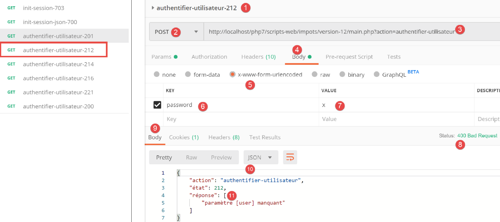
Acima:
- em [1-6], uma solicitação POST [2] com um parâmetro [password] enviado [4-6]. Os parâmetros enviados devem ser adicionados ao corpo da solicitação [4]. Existem várias maneiras de enviar valores para o servidor. Escolhemos o método [x-www-form-urlencoded] [5];
- em [8-10], a resposta JSON do servidor;
Agora vamos definir o parâmetro [user] sem o parâmetro [password]:

Acima:
- em [1-7], um pedido POST sem o parâmetro [password] [4-7];
- em [8-11], a resposta JSON do servidor;
Agora vamos definir os dois parâmetros [user, password], mas com valores que fazem com que a autenticação falhe:

Acima:
- em [1-9], um pedido POST com parâmetros [usuário, senha] incorretos;
- em [10-13], a resposta JSON do servidor. Repare no código de estado [401 Não autorizado] [10] na resposta;
Agora, uma solicitação POST com credenciais válidas:

Acima:
- em [1-9], a solicitação POST [2] com credenciais válidas [6-9];
- em [10-13], a resposta JSON do servidor. Repare no código de estado HTTP [200 OK] em [10];
23.11.5. A ação [calculate-tax]
A ação [calculer-impot] é tratada pelo seguinte controlador [CalculerImpotController]:
<?php
namespace Application;
// symfony dependencies
use \Symfony\Component\HttpFoundation\Response;
use \Symfony\Component\HttpFoundation\Request;
use \Symfony\Component\HttpFoundation\Session\Session;
// layer alias [dao]
use \Application\ServerDaoWithSession as ServerDaoWithRedis;
class CalculerImpotController implements InterfaceController {
// $config is the application configuration
// traitement d'une requête Request
// session and can modify it
// $infos is additional information specific to each controller
// renders an array [$statusCode, $état, $content, $headers]
public function execute(
array $config,
Request $request,
Session $session,
array $infos = NULL): array {
// you must have one GET parameter and three POST parameters
$method = strtolower($request->getMethod());
$erreur = $method !== "post" || $request->query->count() != 1;
if ($erreur) {
// we note the error
$message = "il faut utiliser la méthode [post] avec [action] dans l'URL et les paramètres postés [marié, enfants, salaire]";
$état = 301;
// return result to main controller
return [Response::HTTP_BAD_REQUEST, $état, ["réponse" => $message], []];
}
// retrieve POST parameters
$erreurs = [];
$état = 310;
// marital status
if (!$request->request->has("marié")) {
$état += 2;
$erreurs[] = "paramètre [marié] manquant";
} else {
$marié = trim(strtolower($request->request->get("marié")));
$erreur = $marié !== "oui" && $marié !== "non";
if ($erreur) {
$état += 4;
$erreurs[] = "valeur [$marié] invalide pour le paramètre [marié]";
}
}
// the number of children
if (!$request->request->has("enfants")) {
$état += 8;
$erreurs[] = "paramètre [enfants] manquant";
} else {
$enfants = trim($request->request->get("enfants"));
$erreur = !preg_match("/^\d+$/", $enfants);
if ($erreur) {
$état += 9;
$erreurs[] = "valeur [$enfants] invalide pour le paramètre [enfants]";
}
}
// we recover the annual salary
if (!$request->request->has("salaire")) {
$erreurs[] = "paramètre [salaire] manquant";
$état += 16;
} else {
$salaire = trim($request->request->get("salaire"));
$erreur = !preg_match("/^\d+$/", $salaire);
if ($erreur) {
$état += 17;
$erreurs[] = "valeur [$salaire] invalide pour le paramètre [salaire]";
}
}
// mistake?
if ($erreurs) {
// return result to main controller
return [Response::HTTP_BAD_REQUEST, $état, ["réponse" => $erreurs], []];
}
// we have everything you need to work
// Redis
\Predis\Autoloader::register();
try {
// customer [predis]
$redis = new \Predis\Client();
// connect to the server to see if it's there
$redis->connect();
} catch (\Predis\Connection\ConnectionException $ex) {
// it didn't go well
// return result with error to main controller
$état = 350;
return [Response::HTTP_INTERNAL_SERVER_ERROR, $état,
["réponse" => "[redis], " . utf8_encode($ex->getMessage())], []];
}
// we have valid parameters
// creation of the [dao] layer
if (!$redis->get("taxAdminData")) {
try {
// retrieve tax data from the database
$dao = new ServerDaoWithRedis($config["databaseFilename"], NULL);
// put the recovered data into redis
$redis->set("taxAdminData", $dao->getTaxAdminData());
} catch (\RuntimeException $ex) {
// it didn't go well
// return result with error to main controller
$état = 340;
return [Response::HTTP_INTERNAL_SERVER_ERROR, $état,
["réponse" => utf8_encode($ex->getMessage())], []];
}
} else {
// tax data are taken from the [application] scope memory
$arrayOfAttributes = \json_decode($redis->get("taxAdminData"), true);
$taxAdminData = (new TaxAdminData())->setFromArrayOfAttributes($arrayOfAttributes);
// istanciation of the [dao] layer
$dao = new ServerDaoWithRedis(NULL, $taxAdminData);
}
// creation of the [business] layer
$métier = new ServerMetier($dao);
// we have everything we need to work - tax calculation
$résultat = $métier->calculerImpot($marié, (int) $enfants, (int) $salaire);
// we add the simulation just run to the session
$simulation = new Simulation();
$résultat = ["marié" => $marié, "enfants" => $enfants, "salaire" => $salaire] + $résultat;
$simulation->setFromArrayOfAttributes($résultat);
// is there a list of in-session simulations?
if (!$session->has("simulations")) {
$simulations = [];
} else {
$simulations = $session->get("simulations");
}
// add simulation to simulation list
$simulations[] = $simulation;
// simulations are put back into session
$session->set("simulations", $simulations);
// return result to main controller
$état = 300;
return [Response::HTTP_OK, $état, ["réponse" => $résultat], []];
}
}
Comentários
- O pedido esperado é [POST main.php?action=calculate-tax] com três parâmetros enviados [casado, filhos, salário]:
- [married] deve ser [yes] ou [no];
- [children, salary] devem ser números inteiros positivos ou zero;
- linhas 26–27: verificamos se temos uma solicitação POST com um único parâmetro na URL;
- linhas 28–34: se não for esse o caso, um resultado de erro é enviado para o controlador principal;
- linha 36: vamos acumular as mensagens de erro na matriz [$errors];
- linhas 39–41: verificamos a presença do parâmetro [casado]. Se não estiver presente, o erro é registado;
- linhas 43–49: verificamos se [married] tem um valor em [yes, no]. Se não for esse o caso, o erro é registado;
- linhas 51–54: Verificamos a presença do parâmetro [children]. Se não estiver presente, é registado um erro;
- linhas 55–61: verificamos se o valor do parâmetro [children] é um número positivo ou zero. Se não for esse o caso, é registado um erro;
- linhas 63–66: verificamos a presença do parâmetro [salary]. Se não estiver presente, é registado um erro;
- linhas 67–72: Verificamos se o valor do parâmetro [salary] é um número positivo ou zero. Se não for esse o caso, é registado um erro;
- linhas 75–78: Se a matriz [$errors] não estiver vazia, significa que ocorreram erros. Incluímos a matriz de erros na resposta e devolvemos o resultado ao controlador principal;
- linha 80: temos parâmetros válidos. Podemos calcular o imposto. Para isso, precisamos de construir as camadas [dao] e [business] que sabem como realizar este cálculo;
- linhas 82–94: criamos um cliente [Redis];
- linhas 88–94: se não conseguimos ligar-nos ao servidor [Redis], enviamos um código [500 Internal Server Error] ao cliente;
- linha 98: verificamos se o servidor [Redis] possui a chave [taxAdminData]. Esta chave representa os dados de administração fiscal. Se a chave não estiver presente, os dados fiscais devem ser recuperados da base de dados;
- linha 101: construção da camada [dao] quando os dados fiscais têm de ser recuperados da base de dados. A classe [ServerDaoWithRedis] foi descrita na secção indicada;
- linha 103: os dados recuperados da base de dados são armazenados no [Redis] com a chave [taxAdminData];
- linhas 104–110: se a consulta à base de dados falhar, o erro devolvido pela camada [dao] é registado e incluído no resultado enviado de volta ao controlador principal;
- linha 109: a mensagem de erro devolvida pela camada [PDO] é codificada em [iso-8859-1]. É codificada em [utf-8];
- linhas 111–117: se a chave [taxAdminData] existir no armazenamento [Redis], então os dados fiscais são passados diretamente para o construtor da camada [DAO];
- linha 119: é criada a camada [business]. A classe [ServerMetier] foi descrita na secção de links;
- linhas 124–126: com o montante do imposto calculado, é criado um objeto [Simulation]. A classe [Simulation] encapsula os dados de uma simulação e foi descrita na secção de links;
- linhas 128–132: a simulação que acabou de ser construída deve ser adicionada à lista de simulações já calculadas. Esta lista está na sessão, a menos que ainda não tenha sido realizada nenhuma simulação;
- linhas 133–136: a simulação é adicionada à lista de simulações e a lista é devolvida à sessão;
- linhas 137–139: o resultado é devolvido ao controlador principal;
23.11.6. Testes [Postman]
Realizamos testes [Postman] no controlador [CalculerImpotController] no modo JSON;

Acima:
- em [1-7], fazemos uma solicitação [GET] em vez de uma solicitação [POST];
- Em [8-11], a resposta JSON do servidor;
Agora, vamos utilizar o método [POST], com ou sem parâmetros enviados, bem como com parâmetros enviados inválidos:

Acima:
- fazemos um pedido [POST] [2] com parâmetros enviados inválidos [6-11] [casado, filhos, salário]. Pode omitir um destes parâmetros desmarcando a respetiva caixa em [16]. Isto permitir-lhe-á testar diferentes cenários. Na captura de ecrã acima, os três parâmetros estão presentes e todos são inválidos;
- em [12-15], a resposta JSON do servidor;
Agora, vamos desmarcar dois dos três parâmetros enviados:

Acima,
- em [5-8], apenas o parâmetro [salary] é enviado e, além disso, é inválido;
- em [9-11], o resultado JSON do servidor;
Agora vamos realizar um cálculo de impostos com parâmetros válidos:

Acima:
- em [11-18], um pedido com parâmetros válidos [6-8];
- em [12-14], a resposta JSON do servidor;
23.11.7. A ação [lister-simulations]
A ação [lister-simulations] é tratada pelo seguinte controlador secundário [ListerSimulationsController]:
<?php
namespace Application;
// symfony dependencies
use \Symfony\Component\HttpFoundation\Response;
use \Symfony\Component\HttpFoundation\Request;
use \Symfony\Component\HttpFoundation\Session\Session;
class ListerSimulationsController {
// $config is the application configuration
// traitement d'une requête Request
// useful session and can modify it
// $infos is additional information specific to each controller
// renders an array [$statusCode, $état, $content, $headers]
public function execute(
array $config,
Request $request,
Session $session,
array $infos = NULL): array {
// you must have a single parameter GET
$method = strtolower($request->getMethod());
$erreur = $method !== "get" || $request->query->count() != 1;
if ($erreur) {
$état = 501;
$message = "GET requis, avec l'unique paramètre [action] dans l'URL";
// return an error result to the main controller
return [Response::HTTP_BAD_REQUEST, $état, ["réponse" => $message], []];
}
// retrieve the list of simulations in the session
if (!$session->has("simulations")) {
$simulations = [];
} else {
$simulations = $session->get("simulations");
}
// a successful result is returned to the main controller
$état = 500;
return [Response::HTTP_OK, $état, ["réponse" => $simulations], []];
}
}
Comentários
- request [GET main.php?action=list-simulations];
- linhas 24-25: verificamos se temos uma solicitação GET com um único parâmetro;
- linhas 26–31: se não for esse o caso, é devolvido um resultado de erro ao controlador principal;
- linhas 33-37: recuperamos a lista de simulações da sessão, se estiver presente (linha 36); caso contrário, a lista está vazia (linha 34);
- linhas 39-40: devolvemos a lista de simulações ao controlador principal;
23.11.8. Testes [Postman]
Iremos criar dois testes, um para um erro e outro para um sucesso.

Acima:
- em [1-8], fazemos uma solicitação [GET] com um parâmetro extra [param1] na URL [3, 7-8];
- Em [9-12], a resposta JSON do servidor;
Agora vamos fazer uma solicitação válida:

Acima:
- em [1-5], um pedido válido;
O resultado da solicitação é o seguinte:

- em [3-6], a resposta JSON do servidor. Antes deste teste, o teste [Postman] [calculate-tax-300] tinha sido executado várias vezes para criar simulações na sessão web do servidor;
23.11.9. A ação [delete-simulation]
A ação [delete-simulation] é tratada pelo seguinte controlador secundário [DeleteSessionController]:
<?php
namespace Application;
// symfony dependencies
use \Symfony\Component\HttpFoundation\Response;
use \Symfony\Component\HttpFoundation\Request;
use \Symfony\Component\HttpFoundation\Session\Session;
class SupprimerSimulationController {
/// $config is the application configuration
// traitement d'une requête Request
// useful session and can modify it
// $infos is additional information specific to each controller
// renders an array [$statusCode, $état, $content, $headers]
public function execute(
array $config,
Request $request,
Session $session,
array $infos = NULL): array {
// you must have two GET parameters
$method = strtolower($request->getMethod());
$erreur = $method !== "get" || $request->query->count() != 2;
$état = 600;
if ($erreur) {
$état += 2;
$message = "GET requis, avec les paramètres [action, numéro]";
}
// parameter [number] must exist
if (!$erreur) {
$état += 4;
$erreur = !$request->query->has("numéro");
if ($erreur) {
$message = "paramètre [numéro] manquant";
}
}
// parameter [number] must be valid
if (!$erreur) {
$état += 8;
$numéro = $request->query->get("numéro");
$erreur = !preg_match("/^\d+$/", $numéro);
if ($erreur) {
$message = "paramètre [$numéro] invalide";
}
}
// parameter [number] must be in the range [0,n-1]
// if n is the number of simulations
if (!$erreur) {
$numéro = (int) $numéro;
$erreur = !$session->has("simulations");
if (!$erreur) {
$simulations = $session->get("simulations");
$erreur = $numéro < 0 || $numéro >= count($simulations);
}
if ($erreur) {
$état += 16;
$message = "la simulation n° [$numéro] n'existe pas";
}
}
// mistake?
if ($erreur) {
// return the result to the main controller
return [Response::HTTP_BAD_REQUEST, $état, ["réponse" => $message], []];
}
// delete the $numéro simulation
unset($simulations[$numéro]);
$simulations = array_values($simulations);
// put the simulations back in the session
$session->set("simulations", $simulations);
// we return the list of simulations to the customer
$état = 600;
return [Response::HTTP_OK, $état, ["réponse" => $simulations], []];
}
}
Comentários
- request [GET main.php?action=delete-simulation&number=x];
- linhas 24–30: verificamos se temos uma solicitação GET com dois parâmetros;
- linhas 32–38: verificamos se o parâmetro [number] existe nos parâmetros da URL;
- linhas 40-47: verificamos se o valor do parâmetro [number] está sintaticamente correto;
- linhas 50–61: verificamos se a simulação #[number] existe realmente. Existem dois casos de erro:
- a lista de simulações não pode ser encontrada na sessão (linha 52);
- o número da simulação [number] a ser eliminada não existe na lista de simulações;
- linhas 63–66: em caso de erro, é devolvido um resultado de erro ao controlador principal;
- linha 68: a simulação #[número] é eliminada;
- linha 69: a operação [unset] não altera os índices [0, n-1] da lista. Para os atualizar, recuperamos os valores da matriz [$simulations] para remover a simulação em falta;
- linha 71: a nova matriz de simulações é colocada de volta na sessão;
- linhas 73-74: a nova lista de simulações é devolvida ao controlador principal;
23.11.10. [Postman] Testes
Iremos realizar testes de sucesso e de falha:

Acima:
- em [1-6], um pedido GET sem o parâmetro [number];
- em [7-10], a resposta JSON do servidor;
Agora, uma solicitação com um número sintaticamente incorreto:

Acima:
- em [1-5], uma solicitação GET com um parâmetro [número] inválido [3, 5];
- em [6-9], a resposta JSON do servidor;
Agora, uma solicitação com um número de simulação que não existe:

Acima:
- em [1-5], uma solicitação com um número de simulação igual a 100 que não existe na lista de simulações;
- em [6-9], a resposta JSON do servidor;
Agora, vamos remover a simulação n.º 0 da lista, ou seja, a primeira simulação. Primeiro, vamos solicitar esta lista novamente utilizando a solicitação [lister-simulations-500]:
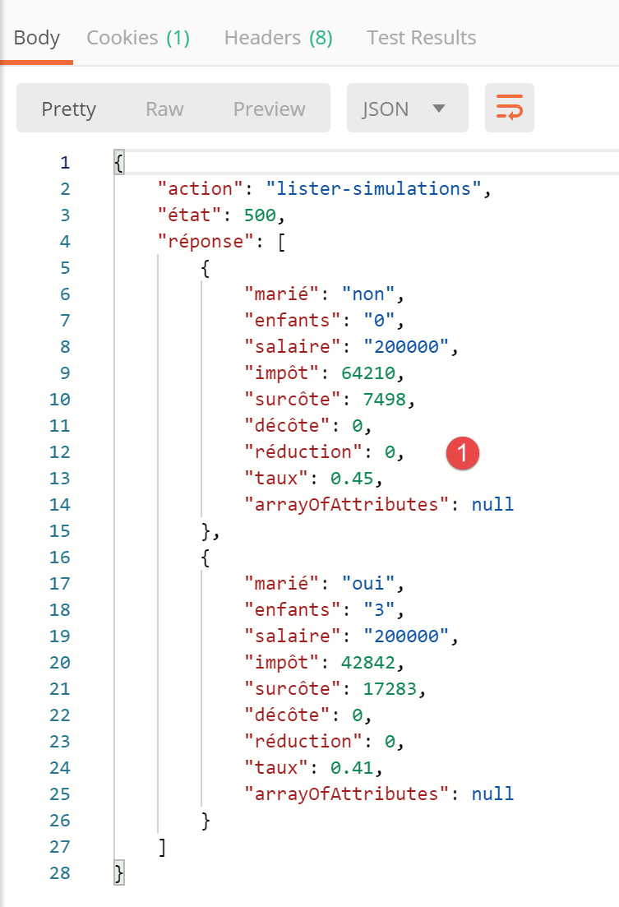
- em [1], existem atualmente 2 simulações;
Eliminamos a primeira simulação (número 0):
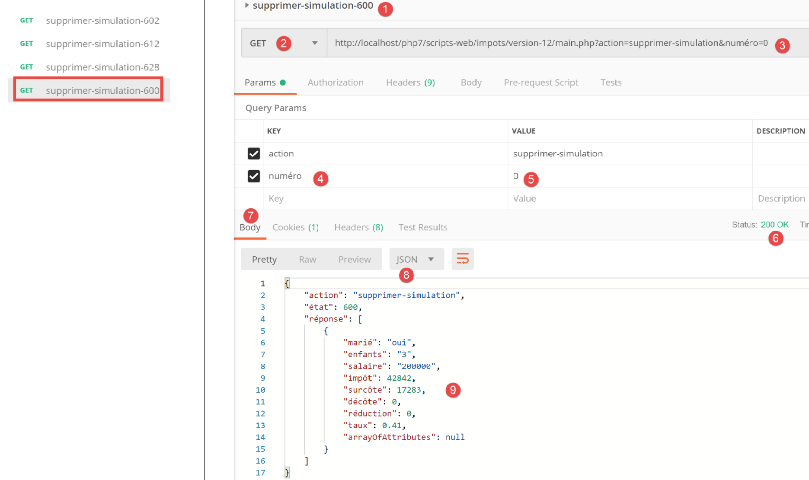
Acima:
- em [1-5], eliminamos a simulação n.º 0 [5];
- em [6-9], a resposta JSON do servidor. Podemos ver que a simulação n.º 0 foi removida;
Vamos repetir este passo:

Acima:
- Em [1], já não há mais simulações na sessão web do servidor;
23.11.11. A ação [end-session]
A ação [end-session] é tratada pelo seguinte controlador secundário [FinSessionController]:
<?php
namespace Application;
// symfony dependencies
use \Symfony\Component\HttpFoundation\Response;
use \Symfony\Component\HttpFoundation\Request;
use \Symfony\Component\HttpFoundation\Session\Session;
class FinSessionController implements InterfaceController {
// $config is the application configuration
// traitement d'une requête Request
// session and can modify it
// $infos is additional information specific to each controller
// renders an array [$statusCode, $état, $content, $headers]
public function execute(
array $config,
Request $request,
Session $session,
array $infos = NULL): array {
// you must have a single parameter GET
$method = strtolower($request->getMethod());
$erreur = $method !== "get" || $request->query->count() != 1;
// mistake?
if ($erreur) {
$état = 401;
// result to main controller
$message = "GET requis avec le seul paramètre [action] dans l'URL";
return [Response::HTTP_BAD_REQUEST, $état, ["réponse" => $message], []];
}
// memorize the session type
$type = $session->get("type");
// the current session is invalidated
$session->invalidate();
// put the type back in the new session
$session->set("type", $type);
// reply sent
$état = 400;
// result to main controller
$content = ["réponse" => "session supprimée"];
return [Response::HTTP_OK, $état, $content, []];
}
}
Comentários
- pedido [GET main.php?action=end-session];
- linhas 25–33: verificamos se a ação é um GET com o único parâmetro [end-action];
- linha 38: invalidamos a sessão atual. Isto elimina os dados nela armazenados e inicia-se uma nova sessão;
- linha 36: antes de encerrar a sessão, armazenamos o seu tipo [json, xml, html];
- linha 40: o tipo da sessão anterior é definido na nova sessão. Por fim, prosseguimos com uma nova sessão contendo a única chave [type];
- linhas 44–45: o resultado é devolvido ao controlador principal;
23.11.12. Testes [Postman]
Iremos realizar um teste de erro e um teste de sucesso:
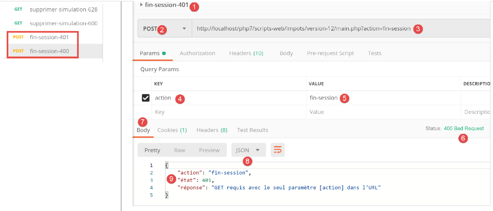
Acima:
- em [1-5], solicitamos o fim da sessão [5] com um POST [2] em vez do GET esperado;
- Em [6-9], a resposta JSON do servidor;
Agora, um exemplo de um teste bem-sucedido. Primeiro, vamos analisar o cookie de sessão trocado entre o cliente [Postman] e o servidor durante o último teste realizado:
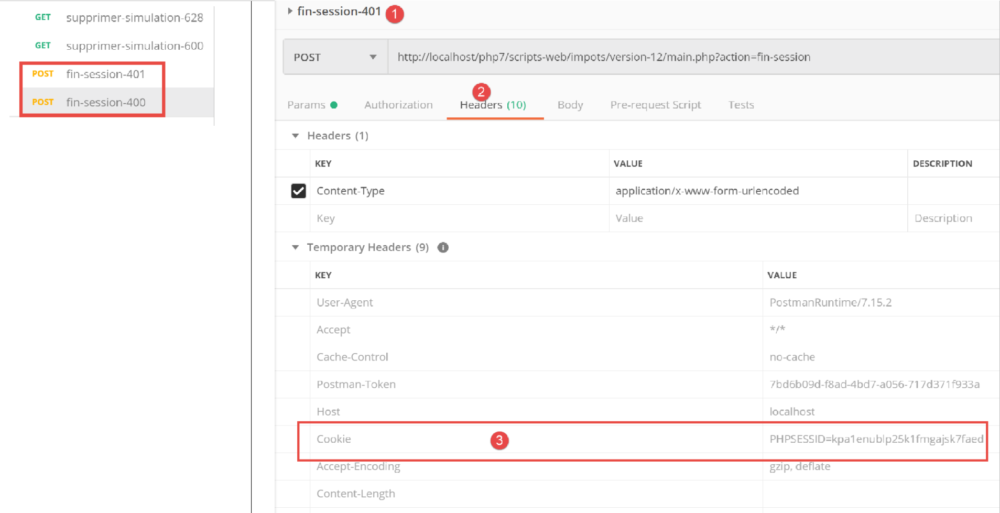
Acima:
- em [3], o cookie de sessão enviado pelo cliente [Postman] ao servidor;
Agora, vamos analisar os cabeçalhos HTTP enviados pelo servidor na sua resposta:

Acima:
- em [3-4], o cookie de sessão não consta na resposta do servidor. Isto é normal. O servidor envia-o apenas uma vez: no início de uma nova sessão web;
Agora vamos executar uma ação [logout] válida:

Acima:
- em [1-3], uma ação [end-session] válida;
- em [4-7], a resposta JSON do servidor;
Vejamos os cabeçalhos HTTP enviados na resposta do servidor:

- em [3], o servidor envia o cabeçalho [Set-Cookie], indicando que uma nova sessão web está a começar;
23.12. Tipos de resposta do servidor
23.12.1. Introdução
Vamos rever a arquitetura geral da aplicação:
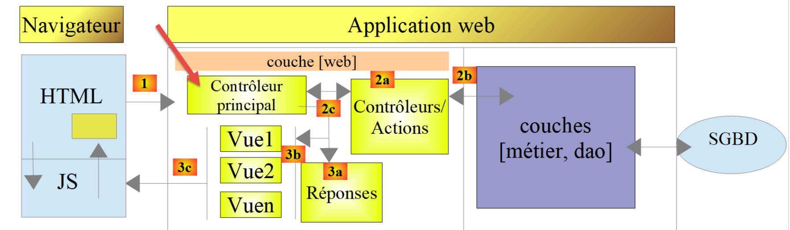
Apresentaremos os tipos de resposta possíveis [3a]. Estes estão agrupados na pasta [Responses] do projeto:

Já apresentámos a classe [JsonResponse] na secção referenciada. Esta implementa a interface [InterfaceResponse] e estende a classe [ParentResponse]. O mesmo se aplica às outras duas classes, [XmlResponse] e [HtmlResponse].
Vamos rever a definição da interface [InterfaceResponse]:
<?php
namespace Application;
// symfony dependencies
use Symfony\Component\HttpFoundation\Request;
use Symfony\Component\HttpFoundation\Session\Session;
interface InterfaceResponse {
// Request $request : requête en cours de traitement
// Session $session: the web application session
// array $config: application configuration
// int statusCode: HTTP response status code
// array $content: server response
// array $headers: HTTP headers to be added to the response
// Logger $logger: the logger for writing logs
public function send(
Request $request = NULL,
Session $session = NULL,
array $config,
int $statusCode,
array $content,
array $headers,
Logger $logger = NULL): void;
}
- linhas 19–27: a interface [InterfaceResponse] possui um único método [send] para enviar a resposta ao cliente;
- linhas 11–17: o significado dos vários parâmetros do método [send];
- linhas 23–25: os parâmetros [$statusCode, $content, $headers] constituem a resposta padrão dos controladores secundários da aplicação. No entanto, a resposta pode necessitar de informação adicional. Por isso, fornecemos-lhe os três primeiros parâmetros (linhas 20–22), que lhe dão acesso a toda a informação relativa ao pedido, à sessão e à configuração;
- linha 26: a resposta requer o [Logger] porque irá registar a resposta enviada ao cliente;
Vamos agora rever o código da classe [ParentResponse], a classe pai dos três tipos de resposta que abstrai o que eles têm em comum: o envio efetivo de uma resposta de texto ao cliente:
<?php
namespace Application;
// symfony dependencies
use Symfony\Component\HttpFoundation\Response;
class ParentResponse {
// int $statusCode: HTTP response status code
// string $content: the body of the response to be sent
// depending on the case, this is a jSON, XML, HTML string
// array $headers: HTTP headers to be added to the response
public function sendResponse(
int $statusCode,
string $content,
array $headers): void {
// preparing the server's text response
$response = new Response();
$response->setCharset("utf-8");
// status code
$response->setStatusCode($statusCode);
// headers
foreach ($headers as $text => $value) {
$response->headers->set($text, $value);
}
// we send the answer
$response->setContent($content);
$response->send();
}
}
Comentários
- linhas 10–13: o significado dos três parâmetros do método [send];
- linha 17: note que o corpo da resposta é do tipo [string] e, portanto, está pronto para ser enviado (linha 30);
- linha 22: a resposta conterá caracteres UTF-8;
- linha 24: código de estado HTTP da resposta;
- linhas 26–28: adição dos cabeçalhos HTTP fornecidos pelo código de chamada;
- linhas 30–31: envio da resposta ao cliente;
Por fim, vamos rever o código do controlador principal que solicita que a resposta seja enviada ao cliente:
// on ajoute les clés [action, état] à la réponse du contrôleur
$content = ["action" => $action, "état" => $état] + $content;
// on instancie l'objet [Response] chargée d'envoyer la réponse au client
$response = __NAMESPACE__ . $config["types"][$type]["response"];
(new $response())->send($request, $session, $config, $statusCode, $content, $headers, $logger);
// la réponse a été envoyée - on libère les ressources
$logger->close();
exit;
- linha 4: definimos o nome da classe [Response] a instanciar;
- linha 5: instanciamos a classe e enviamos a resposta ao cliente utilizando o método [send($request, $session, $config, $statusCode, $content, $headers, $logger)]. Como implementam a mesma interface [InterfaceResponse], os métodos [send] dos diferentes tipos de resposta têm todos a mesma assinatura;
23.12.2. A classe [JsonResponse]
Já foi apresentada na secção com o link. No entanto, estamos a reproduzir o seu código aqui para melhor destacar a consistência das três classes de resposta:
A classe [JsonResponse] implementa a interface [InterfaceResponse] da seguinte forma:
<?php
namespace Application;
// symfony dependencies
use Symfony\Component\Serializer\Encoder\JsonEncode;
use Symfony\Component\Serializer\Encoder\JsonEncoder;
use Symfony\Component\Serializer\Normalizer\ObjectNormalizer;
use Symfony\Component\Serializer\Serializer;
use \Symfony\Component\HttpFoundation\Request;
use \Symfony\Component\HttpFoundation\Session\Session;
class JsonResponse extends ParentResponse implements InterfaceResponse {
// Request $request : requête en cours de traitement
// Session $session: the web application session
// array $config: application configuration
// int statusCode: HTTP response status code
// array $content: server response
// array $headers: HTTP headers to be added to the response
// Logger $logger: the logger for writing logs
public function send(
Request $request = NULL,
Session $session = NULL,
array $config,
int $statusCode,
array $content,
array $headers,
Logger $logger = NULL): void {
// symfony serializer preparation
$serializer = new Serializer(
[
// required for object serialization
new ObjectNormalizer()],
// encoder jSON
// for options, make OU between the different options
[new JsonEncoder(new JsonEncode([JsonEncode::OPTIONS => JSON_UNESCAPED_UNICODE]))]
);
// serialization jSON
$json = $serializer->serialize($content, 'json');
// headers
$headers = array_merge($headers, ["content-type" => "application/json"]);
// sending reply
parent::sendResponse($statusCode, $json, $headers);
// log
if ($logger !== NULL) {
$logger->write("réponse=$json\n");
}
}
}
Comentários
- linha 13: a classe implementa a interface [InterfaceResponse];
- linha 13: a classe estende a classe [ParentResponse]. Todos os tipos [Response] estendem esta classe. É esta classe pai que envia a resposta ao cliente (linha 46). Como este código era comum a todos os tipos [Response], foi extraído para uma classe pai;
- linhas 33–40: instanciação do serializador [Symfony], que converterá a resposta do servidor [$content] numa string JSON (linha 42);
- linhas 34–36: o primeiro parâmetro do construtor [Serializer] é um array. Nele, colocamos uma instância da classe [ObjectNormalizer] necessária para a serialização de objetos. Nesta aplicação, isto ocorre com uma lista de simulações, em que cada simulação é uma instância da classe [Simulation];
- linha 39: o segundo parâmetro do construtor [Serializer] é também uma matriz: colocamos nela todos os codificadores utilizados numa serialização (XML, JSON, CSV, etc.);
- linha 39: haverá apenas um codificador aqui, do tipo [JsonEncoder]. O construtor sem parâmetros poderia ter sido suficiente. Aqui, passámos um parâmetro [JsonEncode] para o construtor, apenas para passar opções de codificação JSON;
- linha 39: o parâmetro do construtor [JsonEncode] é uma matriz de opções. Aqui usamos a opção [JSON_UNESCAPED_UNICODE] para solicitar que os caracteres UTF-8 na cadeia JSON sejam renderizados nativamente em vez de serem “escapados”;
- linha 42: o corpo da resposta HTTP é serializado em JSON utilizando o serializador anterior;
- linha 44: adicionamos o cabeçalho HTTP que informa ao cliente que estamos a enviar JSON;
- linha 46: a classe pai é solicitada a enviar a resposta ao cliente;
- linhas 48–50: registamos a resposta JSON;
23.12.3. A classe [XmlResponse]
A classe [XmlResponse] implementa a interface [InterfaceResponse] da seguinte forma:
<?php
namespace Application;
// symfony dependencies
use Symfony\Component\HttpFoundation\Request;
use Symfony\Component\HttpFoundation\Session\Session;
use Symfony\Component\Serializer\Encoder\JsonEncode;
use Symfony\Component\Serializer\Encoder\JsonEncoder;
use Symfony\Component\Serializer\Encoder\XmlEncoder;
use Symfony\Component\Serializer\Normalizer\ObjectNormalizer;
use Symfony\Component\Serializer\Serializer;
class XmlResponse extends ParentResponse implements InterfaceResponse {
// Request $request : requête en cours de traitement
// Session $session: the web application session
// array $config: application configuration
// int statusCode: HTTP response status code
// array $content: server response
// array $headers: HTTP headers to be added to the response
// Logger $logger: the logger for writing logs
public function send(
Request $request = NULL,
Session $session = NULL,
array $config,
int $statusCode,
array $content,
array $headers,
Logger $logger = NULL): void {
// symfony serializer preparation
$serializer = new Serializer(
// required for object serialization
[new ObjectNormalizer()],
[
// serialization XML
new XmlEncoder(
[
XmlEncoder::ROOT_NODE_NAME => 'root',
XmlEncoder::ENCODING => 'utf-8'
]
),
// serialization jSON
new JsonEncoder(new JsonEncode([JsonEncode::OPTIONS => JSON_UNESCAPED_UNICODE]))
]
);
// serialization XML
$xml = $serializer->serialize($content, 'xml');
// headers
$headers = array_merge($headers, ["content-type" => "application/xml"]);
// sending reply
parent::sendResponse($statusCode, $xml, $headers);
// log
if ($logger !== NULL) {
// log in jSON
$log = $serializer->serialize($content, 'json');
$logger->write("réponse=$log\n");
}
}
}
Comentários
- linhas 34–48: instanciação de um serializador Symfony. O construtor aceita dois parâmetros do tipo array;
- linha 36: a primeira matriz contém uma instância do tipo [ObjectNormalizer] utilizada na serialização de objetos;
- linhas 37–47: o segundo array contém os codificadores utilizados para a serialização. Vários tipos de serialização podem ser configurados com o mesmo serializador;
- linhas 38–44: o codificador XML;
- linha 41: a raiz do código XML gerado é definida. Terá o formato <root>[outras tags XML]</root>;
- linha 42: a codificação utilizará caracteres UTF-8;
- linha 46: o codificador JSON. Este será utilizado para registar a resposta no ficheiro [logs.txt], que está no formato JSON;
- linha 50: o corpo da resposta enviada ao cliente é serializado em XML;
- linha 52: adicionamos aos cabeçalhos recebidos como parâmetros (linha 30) o cabeçalho HTTP que informa ao cliente que estamos a enviar um documento XML;
- linha 54: a classe pai envia efetivamente a resposta ao cliente;
- Linhas 56–60: registo JSON da resposta;
23.12.4. Testes [Postman]
Já realizámos todos os testes de erro possíveis em JSON. Não há mais nada a fazer em XML. Apresentamos dois exemplos de respostas XML:

Acima:
- em [1-3], o pedido de início de sessão em XML;
- em [4-7], a resposta XML do servidor;
A partir de agora, todas as respostas do servidor serão em XML. Podemos reutilizar todas as solicitações já utilizadas no [Postman] sem as alterar e obteremos uma resposta XML para cada uma delas. Vamos realizar uma autenticação bem-sucedida, por exemplo:

Acima:
- em [1-3], uma solicitação de autenticação válida;
- em [4-7], a resposta XML do servidor;
23.12.5. O [HtmlResponse]
Quando o tipo de sessão é [html], é instanciado um objeto do tipo [HtmlResponse] para enviar a resposta ao cliente. Isto enviará ao cliente um fluxo HTML que depende do código de estado devolvido pelo controlador secundário que processou a ação. Este mapeamento [status=>view] é definido no ficheiro de configuração [config.json] da seguinte forma:
"vues": {
"vue-authentification.php": [700, 221, 400],
"vue-calcul-impot.php": [200, 300, 341, 350, 800],
"vue-liste-simulations.php": [500, 600]
},
"vue-erreurs": "vue-erreurs.php"
Esta configuração tem o seguinte significado: [‘nome da vista’ => ‘estados associados a esta vista’]
- linha 2: se o controlador secundário devolveu um estado da matriz [700, 221, 400], então a vista [vue-authentification.php] deve ser apresentada;
- linha 3: se o controlador secundário devolveu uma matriz [200, 300, 341, 350, 800], então exibe a vista [tax-calculation-view.php];
- linha 4: se o controlador secundário devolveu uma matriz [500, 600], então exibe a vista [view-simulation-list.php];
- linha 6: se o controlador secundário devolveu um valor não encontrado em nenhuma das matrizes anteriores, então exibe a vista [vue-erreurs.php];
As vistas estão localizadas na pasta [Views] do projeto:

O código da classe [HtmlResponse] é o seguinte:
<?php
namespace Application;
// symfony dependencies
use Symfony\Component\HttpFoundation\Request;
use Symfony\Component\HttpFoundation\Session\Session;
use Symfony\Component\Serializer\Encoder\JsonEncode;
use Symfony\Component\Serializer\Encoder\JsonEncoder;
use Symfony\Component\Serializer\Normalizer\ObjectNormalizer;
use Symfony\Component\Serializer\Serializer;
class HtmlResponse extends ParentResponse implements InterfaceResponse {
// Request $request : requête en cours de traitement
// Session $session: the web application session
// array $config: application configuration
// int statusCode: HTTP response status code
// array $content: server response
// array $headers: HTTP headers to be added to the response
// Logger $logger: the logger for writing logs
public function send(
Request $request = NULL,
Session $session = NULL,
array $config,
int $statusCode,
array $content,
array $headers,
Logger $logger = NULL): void {
// symfony serializer preparation
$serializer = new Serializer(
[
// for object serialization
new ObjectNormalizer()],
[
// for jSON serialization of the response log
new JsonEncoder(new JsonEncode([JsonEncode::OPTIONS => JSON_UNESCAPED_UNICODE]))
]
);
// the HTML response depends on the status code returned by the controller
$état = $content["état"];
// a view corresponds to a state - look for it in the application configuration
// view list
$vues = array_keys($config["vues"]);
$trouvé = false;
$i = 0;
// browse the list of views
while (!$trouvé && $i < count($vues)) {
// states associated with view n° i
$états = $config["vues"][$vues[$i]];
// is the state you're looking for in the states associated with view n° I?
if (in_array($état, $états)) {
// the view displayed will be view n° i
$vueRéponse = $vues[$i];
$trouvé = true;
}
// next view
$i++;
}
// found?
if (!$trouvé) {
// if no view exists for the current state of the application
// render error view
$vueRéponse = $config["vue-erreurs"];
}
// retrieve the HTML view to be displayed in a character string
ob_start();
require __DIR__ . "/../Views/$vueRéponse";
$html = ob_get_clean();
// we indicate in the headers that we're going to send HTML
$headers = array_merge($headers, ["content-type" => "text/html"]);
// the parent class handles the actual sending of the response
parent::sendResponse($statusCode, $html, $headers);
// log in jSON of the response without the HTML
if ($logger !== NULL) {
// log in jSON of the response from the secondary controller that processed the action
$log = $serializer->serialize($content, 'json');
$logger->write("réponse=$log\n");
}
}
}
Comentários
- linhas 32–41: instanciamos um serializador Symfony. Isto é necessário para o registo JSON da resposta do controlador que tratou a ação (linhas 72–82);
- linhas 42–57: procuramos na configuração da aplicação a vista que deve ser apresentada. Isto depende do código de estado devolvido pelo controlador que tratou da ação. Este código encontra-se em [$content[‘status’]] (linha 43);
- linhas 42–61: procura-se a vista correspondente a este estado;
- linhas 62–67: se nenhuma vista for encontrada, a aplicação HTML encontra-se num estado anormal. Explicaremos este conceito de estados anormais com mais detalhe mais adiante. Neste caso, é apresentada uma vista de erro;
- linhas 68–70: o código PHP da vista selecionada é interpretado e o resultado é armazenado na variável [$html] (linha 71);
- Este código merece alguma explicação. Imaginemos que a vista selecionada é [vue-authentification.php], que exibe um formulário de autenticação web:
- linha 69: a função [ob_start] inicia o que a documentação denomina de buffer de saída. Tudo o que é escrito por print, require e operações semelhantes — que normalmente seriam enviadas imediatamente para o cliente — é colocado num buffer de saída (ob = output buffer) sem ser enviado para o cliente;
- linha 70: a vista [authentication-view.php] é carregada; trata-se de uma vista HTML dinâmica que contém código PHP. Acontecem então duas coisas:
- o código PHP na vista [vue-authentification.php] é carregado e interpretado. O resultado é uma vista a que chamaremos [vue-authentification.html], que contém apenas código HTML — e possivelmente CSS e JavaScript — mas já não contém PHP;
- este código HTML é normalmente enviado para o cliente. Na verdade, é o que acontece com qualquer texto encontrado pelo interpretador PHP que não seja código PHP. Devido ao buffer de saída, este código HTML é colocado no buffer de saída sem ser enviado para o cliente;
- Linha 71: A função [ob_get_clean] faz duas coisas:
- coloca o conteúdo do buffer de saída na variável [$html], ou seja, a página [vue-authentification.html] que foi colocada lá;
- limpa o buffer de saída. No que diz respeito ao buffer, é como se nada tivesse acontecido. Além disso, o cliente ainda não recebeu nada;
- Linha 70: Estamos atualmente a executar a classe [HtmlResponse], que se encontra na pasta [Responses]. Para encontrar a vista, temos, portanto, de subir um nível [..] e, em seguida, navegar até à pasta [Views]. [__DIR__] é o caminho absoluto da pasta que contém o script atualmente em execução; no nosso exemplo, a pasta [C:/myprograms/laragon-lite/www/php7/scripts-web/impots/13/Responses];
- linha 73: adicionamos aos cabeçalhos HTTP recebidos como parâmetros (linha 29) o cabeçalho que indica ao cliente que vamos enviar-lhe HTML;
- linha 75: solicitamos à classe pai que envie efetivamente a resposta ao cliente;
- linhas 77–81: registamos a resposta [$content] fornecida pelo controlador secundário que processou a ação atual em JSON;
23.12.6. Testes [Postman]
Para testar verdadeiramente o modo HTML da sessão, teríamos de rever todas as visualizações. Faremos isso mais tarde. Vamos realizar o seguinte teste:
Vejamos a lista de visualizações no ficheiro de configuração:
"vues": {
"vue-authentification.php": [700, 221, 400],
"vue-calcul-impot.php": [200, 300, 341, 350, 800],
"vue-liste-simulations.php": [500, 600]
},
"vue-erreurs": "vue-erreurs.php"
Podemos identificar o contexto que gera alguns dos códigos de estado acima, examinando os testes [Postman] realizados:
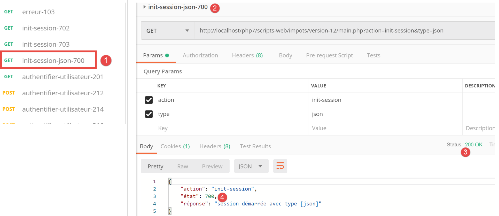
Podemos ver que o código de estado [700] corresponde a uma ação [init-session] bem-sucedida [2]. Acima, temos uma resposta JSON, mas também poderia ser XML ou HTML. É este último caso que será testado. De acordo com o ficheiro de configuração, a vista [vue-authentification.php] constitui a resposta HTML. Vamos verificar.

Acima:
- em [1-3], inicializamos uma sessão HTML. Esperamos, portanto, uma resposta HTML;
- em [4-8], a resposta HTML do servidor;
- o separador [8] fornece uma pré-visualização do código HTML recebido;

- em [8-9], uma pré-visualização da vista HTML;
23.13. A Aplicação Web HTML
23.13.1. Visão geral das vistas
A aplicação Web HTML utilizará quatro vistas:
A vista de autenticação:

A vista de cálculo de impostos:
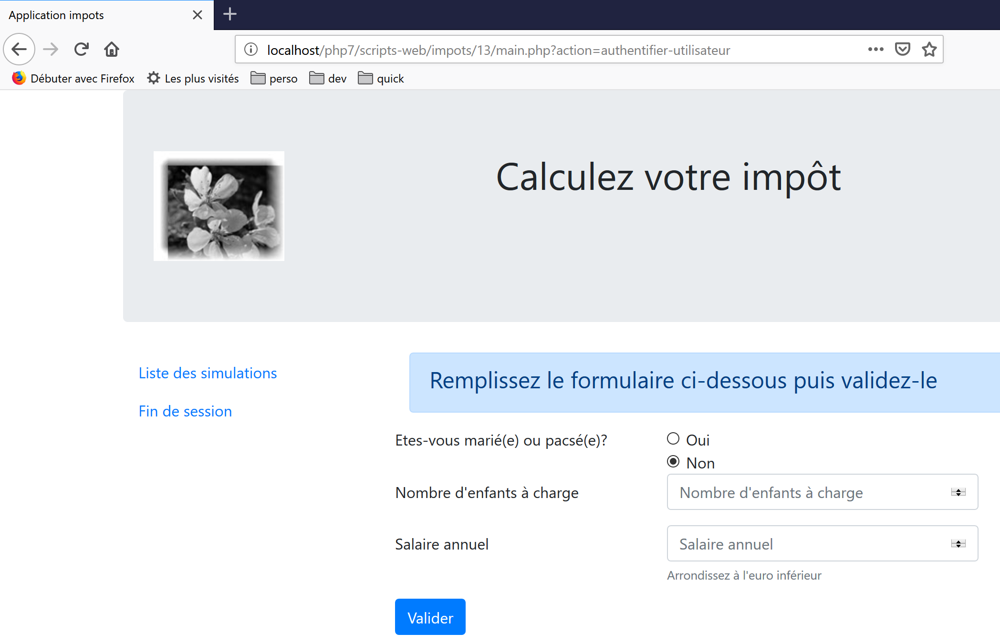
A vista da lista de simulação:
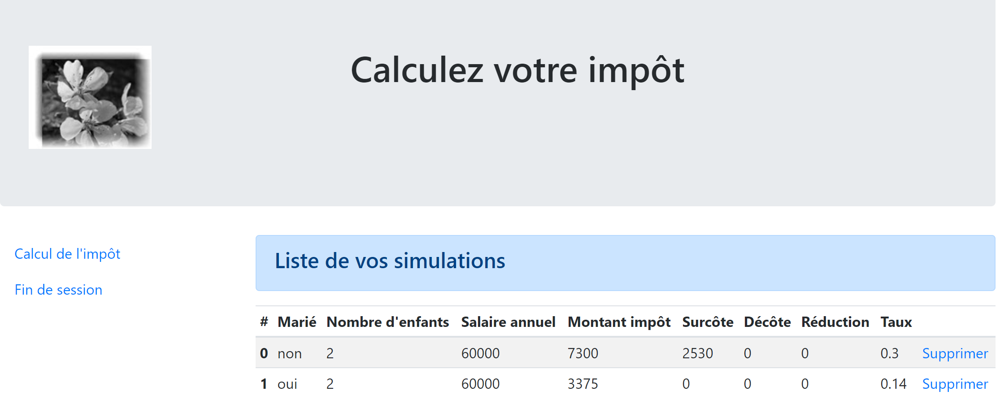
A visualização de erros inesperados:

Iremos descrever estas vistas uma a uma.
23.13.2. A vista de autenticação
23.13.2.1. Visão geral da vista
A vista de autenticação é a seguinte:

A vista é composta por dois elementos a que chamaremos fragmentos:
- o fragmento [1] é gerado por um script [v-banner.php];
- o fragmento [2] é gerado por um script [v-authentication.php];
A vista de autenticação é gerada pela seguinte página [vue-authentification.php]:
<?php
// page test data
// encapsulate paged data in $page
…
?>
<!doctype html>
<html lang="fr">
<head>
<!-- Required meta tags -->
<meta charset="utf-8">
<meta name="viewport" content="width=device-width, initial-scale=1, shrink-to-fit=no">
<!-- Bootstrap CSS -->
<link rel="stylesheet" href="https://stackpath.bootstrapcdn.com/bootstrap/4.1.3/css/bootstrap.min.css" integrity="sha384-MCw98/SFnGE8fJT3GXwEOngsV7Zt27NXFoaoApmYm81iuXoPkFOJwJ8ERdknLPMO" crossorigin="anonymous">
<title>Application impots</title>
</head>
<body>
<div class="container">
<!-- bandeau sur 1 ligne et 12 colonnes -->
<?php require "v-bandeau.php"; ?>
<!-- formulaire d'authentification sur 9 colonnes -->
<div class="row">
<div class="col-md-9">
<?php require "v-authentification.php" ?>
</div>
</div>
<?php
// if error - displays an error alert
if ($modèle->error) {
print <<<EOT
<div class="row">
<div class="col-md-9">
<div class="alert alert-danger" role="alert">
Les erreurs suivantes se sont produites :
<ul>$modèle->erreurs</ul>
</div>
</div>
</div>
EOT;
}
?>
</div>
</body>
</html>
Comentários
- linha 7: um documento HTML começa com esta linha;
- linhas 8–44: a página HTML está entre as tags <html> e </html>;
- linhas 9–16: o cabeçalho (head) do documento HTML;
- linha 11: a tag <meta charset> indica que o documento está codificado em UTF-8;
- linha 12: a tag <meta name='viewport'> define a exibição inicial da janela de visualização: em toda a largura do ecrã que a exibe (width) no seu tamanho inicial (initial-scale) sem redimensionar para se ajustar a um ecrã mais pequeno (shrink-to-fit);
- linha 14: a tag <link rel='stylesheet'> especifica o ficheiro CSS que controla a aparência da janela de visualização. Aqui, estamos a utilizar o framework CSS Bootstrap 4.1.3 [https://getbootstrap.com/docs/4.0/getting-started/introduction/] ;
- linha 15: a tag title define o título da página:

- linhas 17–43: o corpo da página web está delimitado pelas tags body e /body;
- linhas 18–42: a tag <div> delimita uma secção da página apresentada. Os atributos [class] utilizados na visualização referem-se todos ao framework CSS Bootstrap. A tag <div class=’container’> delimita um contentor Bootstrap;
- Linha 20: Incluímos o script [v-banner.php]. Este script gera o banner da página [1]. Descreveremos isso em breve;
- Linhas 22–26: A tag <div class=’row’> define uma linha Bootstrap. Estas linhas consistem em 12 colunas;
- Linha 23: a tag <div class=’col-md-9’> define uma secção de 9 colunas;
- linha 24: incluímos o script [v-authentification.php] que apresenta o formulário de autenticação da página [2]. Descreveremos isso em breve;
- linha 27: a tag <?php insere código PHP na página HTML. Este código é executado antes da página HTML ser renderizada e pode modificá-la;
- linha 29: todos os dados dinâmicos na vista apresentada serão encapsulados num objeto [$model] do tipo [stdClass]. Esta é uma escolha arbitrária. Poderíamos ter escolhido uma matriz associativa em vez disso para alcançar o mesmo resultado;
- linha 29: a autenticação falha se o utilizador introduzir credenciais incorretas. Neste caso, a vista de autenticação é exibida novamente com uma mensagem de erro. O atributo [$model→error] indica se esta mensagem de erro deve ser exibida;
- Linhas 30–39: Esta sintaxe apresenta todo o texto colocado entre os símbolos PHP <<<EOT (linha 30 — pode usar qualquer texto que desejar no lugar de EOT=End Of Text) e o símbolo EOT na linha 39 (deve ser idêntico ao símbolo usado na linha 30). O símbolo deve ser escrito na primeira coluna da linha 39. As variáveis PHP localizadas no texto entre os dois símbolos EOT são interpretadas;
- linhas 33–36: definem uma área com fundo rosa (class="alert alert-danger") (linha 33);

- linha 34: texto;
- linha 35: a tag HTML <ul> (lista não ordenada) exibe uma lista com marcadores. Cada item da lista deve ter a sintaxe <li>item</li>;
Vamos observar os elementos dinâmicos a serem definidos neste código:
- [$model→error]: para exibir uma mensagem de erro;
- [$template→errors]: uma lista (no sentido HTML) de mensagens de erro;
23.13.2.2. O fragmento [v-bandeau.php]
O fragmento [v-bandeau.php] exibe o banner superior de todas as visualizações na aplicação web:

O código para o fragmento [v-banner.php] é o seguinte:
<!-- Bootstrap Jumbotron -->
<div class="jumbotron">
<div class="row">
<div class="col-md-4">
<img src="<?= $logo ?>" alt="Cerisier en fleurs" />
</div>
<div class="col-md-8">
<h1>
Calculez votre impôt
</h1>
</div>
</div>
</div>
Comentários
- linhas 2–13: O banner está inserido numa secção Jumbotron do Bootstrap [<div class="jumbotron">]. Esta classe do Bootstrap aplica estilos ao conteúdo exibido de uma forma específica para o destacar;
- linhas 3–12: uma linha do Bootstrap;
- linhas 4-6: uma imagem [img] é colocada nas primeiras quatro colunas da linha;
- linha 5: a sintaxe [<?= $logo ?>] é equivalente à sintaxe [<?php print $logo ?>]. Por outras palavras, o valor do atributo [src] será o valor da variável PHP [$logo];
- linhas 7–11: as restantes 8 colunas da linha (lembre-se de que são 12 no total) serão utilizadas para apresentar texto (linha 9) em tamanho de letra grande (<h1>, linhas 8–10);
Elementos dinâmicos:
- [$logo]: URL da imagem exibida no banner;
23.13.2.3. O fragmento [v-authentification.php]
O fragmento [v-authentication.php] apresenta o formulário de autenticação da aplicação web:

O código do fragmento [v-authentication.php] é o seguinte:
<!-- form HTML - post its values with the [authenticate-user] action -->
<form method="post" action="main.php?action=authentifier-utilisateur">
<!-- title -->
<div class="alert alert-primary" role="alert">
<h4>Veuillez vous authentifier</h4>
</div>
<!-- bootstrap form -->
<fieldset class="form-group">
<!-- 1st line -->
<div class="form-group row">
<!-- wording -->
<label for="user" class="col-md-3 col-form-label">Nom d'utilisateur</label>
<div class="col-md-4">
<!-- text input field -->
<input type="text" class="form-control" id="user" name="user"
placeholder="Nom d'utilisateur" value="<?= $modèle->login ?>">
</div>
</div>
<!-- 2nd line -->
<div class="form-group row">
<!-- wording -->
<label for="password" class="col-md-3 col-form-label">Mot de passe</label>
<!-- text input field -->
<div class="col-md-4">
<input type="password" class="form-control" id="password" name="password"
placeholder="Mot de passe">
</div>
</div>
<!-- submit] button on a 3rd line-->
<div class="form-group row">
<div class="col-md-2">
<button type="submit" class="btn btn-primary">Valider</button>
</div>
</div>
</fieldset>
</form>
Comentários
- Linhas 2–39: A tag <form> define um formulário HTML. Este formulário tem, geralmente, as seguintes características:
- define campos de entrada (tags <input> nas linhas 17 e 27);
- possui um botão [submit] (linha 34) que envia os valores introduzidos para o URL especificado no atributo [action] da tag [form] (linha 2). O método HTTP utilizado para efetuar um pedido a este URL é especificado no atributo [method] da tag [form] (linha 2);
- aqui, quando o utilizador clica no botão [Submit] (linha 34), o navegador irá enviar (POST) (linha 2) os valores introduzidos no formulário para o URL [main.php?action=authentifier-utilisateur] (linha 2);
- os valores enviados são os valores introduzidos pelo utilizador nos campos de entrada nas linhas 17 e 27. Serão enviados no formato [user=xx&password=yy]. Os nomes dos parâmetros [user, password] correspondem aos atributos [name] dos campos de entrada nas linhas 17 e 27;
- Linhas 5–7: Uma secção Bootstrap para exibir um título num fundo azul:

- linhas 10–37: um formulário Bootstrap. Todos os elementos do formulário serão então estilizados de uma forma específica;
- linhas 12–20: definem a primeira linha do formulário:

- a linha 14 define o rótulo [1] em três colunas. O atributo [for] da tag [label] vincula o rótulo ao atributo [id] do campo de entrada na linha 17;
- linhas 15–19: colocam o campo de entrada num layout de quatro colunas;
- linha 17: a tag HTML [input] define um campo de entrada. Possui vários atributos:
- [type='text']: este é um campo de entrada de texto. Pode escrever qualquer coisa nele;
- [class='form-control']: estilo Bootstrap para o campo de entrada;
- [id='user']: identificador do campo de entrada. Este identificador é geralmente utilizado por código CSS e JavaScript;
- [name='user']: o nome do campo de entrada. O valor introduzido pelo utilizador será enviado pelo navegador com este nome [user=xx];
- [placeholder='prompt']: o texto exibido no campo de entrada quando o utilizador ainda não digitou nada;

- [value='value']: o texto 'value' será exibido no campo de entrada assim que este aparecer, antes de o utilizador introduzir qualquer outra coisa. Este mecanismo é utilizado em caso de erro para exibir a entrada que causou o erro. Aqui, este valor será o valor da variável PHP [$model->login];
- linhas 21–30: código semelhante para o campo de entrada da palavra-passe;
- linha 27: [type='password'] cria um campo de entrada de texto (pode escrever qualquer coisa), mas os caracteres introduzidos ficam ocultos:

- linhas 32–36: uma terceira linha para o botão [Submit];
- linha 34: como possui o atributo [type="submit"], clicar neste botão faz com que o navegador envie os valores introduzidos para o servidor, conforme explicado anteriormente. O atributo CSS [class="btn btn-primary"] exibe um botão azul:

Há uma última coisa a explicar. Linha 2: o atributo [action="main.php?action=authentifier-utilisateur"] define um URL incompleto (não começa com http://machine:port/chemin). No nosso exemplo, todas as URLs da aplicação têm o formato [http://localhost/php7/scripts-web/impots/version-12/main.php?action=xx]. A vista de autenticação será acedida através de várias URLs:
- [http://localhost/php7/scripts-web/impots/version-12/main.php?action=init-session&type=html];
- [http://localhost/php7/scripts-web/impots/version-12/main.php?action=authentifier-utilisateur]
Estas URLs apontam para um documento [main.php] localizado em [http://localhost/php7/scripts-web/impots/version-12]. Isto aplica-se a todas as URLs desta aplicação. O parâmetro [action="main.php?action=authentifier-utilisateur"] será precedido por este caminho quando os valores introduzidos forem enviados. Estes valores serão, portanto, enviados para o URL [http://localhost/php7/scripts-web/impots/version-12/main.php?action=authentifier-utilisateur].
23.13.2.4. Testes visuais
Podemos testar as vistas antes de as integrar na aplicação. O objetivo aqui é testar a sua aparência visual. Iremos reunir todas as vistas de teste na pasta [Tests] do projeto:

Para testar a vista [vue-authentification.php], precisamos de criar o modelo de dados que ela irá apresentar:
<?php
// page test data
//
// calculate the view model
$modèle = getModelForThisView();
function getModelForThisView(): object {
// encapsulate paged data in $modèle
$modèle = new \stdClass();
// user code
$modèle->login = "albert";
// error list
$modèle->error = TRUE;
$erreurs = ["erreur1", "erreur2"];
// build a HTML list of errors
$content = "";
foreach ($erreurs as $erreur) {
$content .= "<li>$erreur</li>";
}
$modèle->erreurs = $content;
// banner image
$modèle->logo = "http://localhost/php7/scripts-web/impots/version-12/Tests/logo.jpg";
// we render the model
return $modèle;
}
?>
<!-- document HTML -->
<!doctype html>
<html lang="fr">
<head>
<!-- Required meta tags -->
…
</head>
<body>
….
</body>
</html>
Comentários
- linhas 1–5: A vista de autenticação tem partes dinâmicas controladas pelo objeto [$model]. Este objeto é chamado de modelo de vista. De acordo com uma das duas definições dadas para a sigla MVC, isto representa o M em MVC;
- linha 5: o modelo de visualização é calculado pela função [getModelForThisView];
- linha 9: o modelo de visualização será encapsulado num tipo [stdClass];
- linhas 10–22: são definidos valores de teste para os elementos dinâmicos da vista de autenticação;
Os testes visuais podem ser realizados a partir do NetBeans:

Continuamos estes testes visuais até ficarmos satisfeitos com o resultado.
23.13.2.5. Cálculo do modelo de visualização
Assim que a aparência visual da vista tiver sido determinada, podemos prosseguir com o cálculo do modelo de vista em condições reais. Vamos rever os códigos de estado que conduzem a esta vista. Estes podem ser encontrados no ficheiro de configuração:
"vues": {
"vue-authentification.php": [700, 221, 400],
"vue-calcul-impot.php": [200, 300, 341, 350, 800],
"vue-liste-simulations.php": [500, 600]
},
"vue-erreurs": "vue-erreurs.php"
Assim, os códigos de estado [700, 221, 400] são os que acionam a exibição da vista de autenticação. Para compreender o significado destes códigos, podemos consultar os testes [Postman] realizados na aplicação JSON:
- [init-session-json-700]: 700 é o código de estado após uma ação [init-session] bem-sucedida: o formulário de autenticação é então apresentado vazio;
- [authenticate-user-221]: 221 é o código de estado que surge após uma ação [authenticate-user] falhada (credenciais não reconhecidas): é então apresentado o formulário de autenticação para que as credenciais possam ser corrigidas;
- [end-session-400]: 400 é o código de estado após uma ação [end-session] bem-sucedida: o formulário de autenticação vazio é então exibido;
Agora que sabemos quando o formulário de autenticação deve ser apresentado, podemos calcular o seu modelo em [authentication-view.php]:

O código para calcular o modelo de visualização [vue-authentification.php] é o seguinte:
<?php
// we inherit the following variables
// Request $request : la requête en cours
// Session $session: the application session
// array $config: application configuration
// array $content: controller response
//
// symfony dependencies
use Symfony\Component\HttpFoundation\Request;
use Symfony\Component\HttpFoundation\Session\Session;
// calculate the view model
$modèle = getModelForThisView($request, $session, $config, $content);
function getModelForThisView(Request $request, Session $session, array $config, array $content): object {
// encapsulate paged data in $modèle
$modèle = new stdClass();
// application status
$état = $content["état"];
// the model depends on the state
switch ($état) {
case 700:
case 400:
// case of empty form display
$modèle->login = "";
// no error to display
$modèle->error = FALSE;
break;
case 221:
// false authentication
// the user initially entered is redisplayed
$modèle->login = $request->request->get("user");
// there is an error to display
$modèle->error = TRUE;
// list HTML of error msg - here only one
$modèle->erreurs = "<li>Echec de l'authentification</li>";
}
// result
return $modèle;
}
?>
<!-- document HTML -->
<!doctype html>
<html lang="fr">
<head>
…
</head>
<body>
…
</body>
</html>
Comentários
- linhas 3–6: são declaradas as variáveis herdadas da classe [HtmlResponse]; esta classe utiliza um [require] para apresentar a vista [vue-authentification.php];
- linhas 9-10: as classes Symfony utilizadas no código da vista;
- linhas 15-40: a função [getModelForThisView] é responsável por calcular o modelo da vista;
- linha 19: o código de estado devolvido pelo controlador que processou a ação atual é recuperado;
- linhas 21–37: o modelo depende deste código de estado;
- linhas 22–28: caso em que um formulário de autenticação em branco deve ser exibido;
- linhas 29–37: caso de falha na autenticação: o nome de utilizador introduzido pelo utilizador é apresentado, juntamente com uma mensagem de erro. O utilizador pode então tentar outra tentativa de autenticação;
Foi criado um modelo específico para o banner [v-bandeau.php]:
<?php
// logo
$scheme = $request->server->get('REQUEST_SCHEME'); // http
$host = $request->server->get('SERVER_NAME'); // localhost
$port = $request->server->get('SERVER_PORT'); // 80
$uri = $request->server->get('REQUEST_URI'); // /php7/scripts-web/impots/version-12/main.php?action=xxx
$champs = [];
preg_match("/(.+)\/.+?$/", $uri, $champs);
$root = $champs[1]; // /php7/scripts-web/impots/version-12
$modèle->logo = "$scheme://$host:$port$root/Views/logo.jpg"; // http://localhost:80/php7/scripts-web/impots/version-12/Views/logo.jpg
?>
<!-- Bootstrap Jumbotron -->
<div class="jumbotron">
<div class="row">
<div class="col-md-4">
<img src="<?= $modèle->logo ?>" alt="Cerisier en fleurs" />
</div>
<div class="col-md-8">
<h1>
Calculez votre impôt
</h1>
</div>
</div>
</div>
Comentários
- A linha 16 utiliza a variável [$template→logo], que é o URL do logótipo do banner. Em vez de calcular esta variável quatro vezes para as quatro visualizações da aplicação, este cálculo é incorporado no fragmento [v-banner.php];
- As linhas 1–11 mostram como construir a URL [http://localhost:80/php7/scripts-web/impots/version-12/Views/logo.jpg] utilizando informações encontradas no ambiente do servidor [$request→server];
23.13.2.6. Testes [Postman]
Já criámos pedidos que devolvem os códigos de estado [700, 221, 400], que apresentam a vista de autenticação. Vamos revê-los:
- [init-session-html-700]: 700 é o código de estado após uma ação [init-session] bem-sucedida: é então apresentado o formulário de autenticação em branco;
- [authenticate-user-221]: 221 é o código de estado após uma ação [authenticate-user] falhada (credenciais não reconhecidas): o formulário de autenticação é então apresentado para que as credenciais possam ser corrigidas;
- [end-session-400]: 400 é o código de estado após uma ação [end-session] bem-sucedida: o formulário de autenticação vazio é então exibido;
Basta reutilizá-los e verificar se exibem corretamente a vista de autenticação. Apresentaremos aqui apenas dois testes:
- [init-session-html-700]: início de uma sessão HTML;

- [authenticate-user-221]: autenticação do utilizador [x, x];

Acima:
- o pedido enviou a cadeia [user=x&password=x];
- em [4], é exibida uma mensagem de erro;
- em [3], o utilizador incorreto foi exibido novamente;
23.13.2.7. Conclusão
Conseguimos testar a vista [vue-authentification.php] sem ter escrito as outras vistas. Isto foi possível porque:
- todos os controladores estão escritos;
- o [Postman] permite-nos enviar pedidos ao servidor sem precisar das vistas. Ao escrever controladores, deve ter em conta que qualquer pessoa pode fazê-lo. Por isso, deve estar preparado para lidar com pedidos que nenhuma vista permitiria. Estes são criados manualmente no [Postman]. Nunca deve assumir a priori que «este pedido é impossível». Deve verificar;
23.13.3. A vista de cálculo de impostos
23.13.3.1. Visão geral da vista
A vista de cálculo de impostos é a seguinte:

A vista tem três partes:
- 1: O banner superior é gerado pelo fragmento [v-bandeau.php] já apresentado;
- 2: o formulário de cálculo de impostos gerado pelo fragmento [v-calcul-impot.php];
- 3: um menu com dois links, gerado pelo fragmento [v-menu.php];
A vista de cálculo de impostos é gerada pelo seguinte script [vue-calcul-impot.php]:

<?php
// we inherit the following variables
// Request $request : la requête en cours
// Session $session: the application session
// array $config: application configuration
// array $content: the response of the controller that processed the action
//
// symfony dependencies
use Symfony\Component\HttpFoundation\Request;
use Symfony\Component\HttpFoundation\Session\Session;
// calculate the view model
$modèle = getModelForThisView($request, $session, $config, $content);
function getModelForThisView(Request $request, Session $session, array $config, array $content): object {
// encapsulate paged data in $modèle
$modèle = new \stdClass();
…
// we render the model
return $modèle;
}
?>
<!-- document HTML -->
<!doctype html>
<html lang="fr">
<head>
<!-- Required meta tags -->
<meta charset="utf-8">
<meta name="viewport" content="width=device-width, initial-scale=1, shrink-to-fit=no">
<!-- Bootstrap CSS -->
<link rel="stylesheet" href="https://stackpath.bootstrapcdn.com/bootstrap/4.1.3/css/bootstrap.min.css" integrity="sha384-MCw98/SFnGE8fJT3GXwEOngsV7Zt27NXFoaoApmYm81iuXoPkFOJwJ8ERdknLPMO" crossorigin="anonymous">
<title>Application impots</title>
</head>
<body>
<div class="container">
<!-- bandeau -->
<?php require "v-bandeau.php"; ?>
<!-- ligne à deux colonnes -->
<div class="row">
<!-- le menu -->
<div class="col-md-3">
<?php require "v-menu.php" ?>
</div>
<!-- le formulaire de calcul -->
<div class="col-md-9">
<?php require "v-calcul-impot.php" ?>
</div>
</div>
<!-- cas du succès -->
<?php
if ($modèle->success) {
// a success alert is displayed
print <<<EOT1
<div class="row">
<div class="col-md-3">
</div>
<div class="col-md-9">
<div class="alert alert-success" role="alert">
$modèle->impôt</br>
$modèle->décôte</br>\n
$modèle->réduction</br>\n
$modèle->surcôte</br>\n
$modèle->taux</br>\n
</div>
</div>
</div>
EOT1;
}
?>
<?php
if ($modèle->error) {
// 9-column error list
print <<<EOT2
<div class="row">
<div class="col-md-3">
</div>
<div class="col-md-9">
<div class="alert alert-danger" role="alert">
L'erreur suivante s'est produite :
<ul>$modèle->erreurs</ul>
</div>
</div>
</div>
EOT2;
}
?>
</div>
</body>
</html>
Comentários
- Apenas comentamos sobre novas funcionalidades que ainda não foram encontradas;
- linha 37: inclusão do banner superior da vista na primeira linha Bootstrap da vista;
- linhas 41–43: inclusão do menu, que ocupará três colunas da segunda linha Bootstrap da vista;
- linhas 45–47: inclusão do formulário de cálculo de impostos, que ocupará nove colunas da segunda linha Bootstrap da vista;
- linhas 51–69: se o cálculo do imposto for bem-sucedido [$model→success=TRUE], então o resultado do cálculo do imposto é exibido numa caixa verde (linhas 59–65). Esta caixa encontra-se na terceira linha Bootstrap da vista (linha 54) e ocupa nove colunas (linha 58) à direita de três colunas vazias (linhas 55–57). Esta caixa ficará, portanto, imediatamente abaixo do formulário de cálculo de impostos;
- linhas 71–87: se o cálculo do imposto falhar [$model→error=TRUE], então uma mensagem de erro é exibida numa caixa rosa (linhas 80–83). Este quadro encontra-se na terceira linha Bootstrap da vista (linha 75) e ocupa nove colunas (linha 79) à direita de três colunas vazias (linhas 76–78). Este quadro ficará, portanto, imediatamente abaixo do formulário de cálculo de impostos;
23.13.3.2. O fragmento [v-calcul-impot.php]
O fragmento [v-calcul-impot.php] apresenta o formulário de início de sessão da aplicação web:

O código para o fragmento [v-calcul-impot.php] é o seguinte:
<!-- form HTML posted -->
<form method="post" action="main.php?action=calculer-impot">
<!-- 12-column message on blue background -->
<div class="col-md-12">
<div class="alert alert-primary" role="alert">
<h4>Remplissez le formulaire ci-dessous puis validez-le</h4>
</div>
</div>
<!-- form elements -->
<fieldset class="form-group">
<!-- first row of 9 columns -->
<div class="row">
<!-- 4-column wording -->
<legend class="col-form-label col-md-4 pt-0">Etes-vous marié(e) ou pacsé(e)?</legend>
<!-- 5-column radio buttons-->
<div class="col-md-5">
<div class="form-check">
<input class="form-check-input" type="radio" name="marié" id="gridRadios1" value="oui" <?= $modèle->checkedOui ?>>
<label class="form-check-label" for="gridRadios1">
Oui
</label>
</div>
<div class="form-check">
<input class="form-check-input" type="radio" name="marié" id="gridRadios2" value="non" <?= $modèle->checkedNon ?>>
<label class="form-check-label" for="gridRadios2">
Non
</label>
</div>
</div>
</div>
<!-- second row of 9 columns -->
<div class="form-group row">
<!-- 4-column wording -->
<label for="enfants" class="col-md-4 col-form-label">Nombre d'enfants à charge</label>
<!-- 5-column numerical entry field for number of children -->
<div class="col-md-5">
<input type="number" min="0" step="1" class="form-control" id="enfants" name="enfants" placeholder="Nombre d'enfants à charge" value="<?= $modèle->enfants ?>">
</div>
</div>
<!-- third row of 9 columns -->
<div class="form-group row">
<!-- 4-column wording -->
<label for="salaire" class="col-md-4 col-form-label">Salaire annuel</label>
<!-- 5-column numeric input field for wages -->
<div class="col-md-5">
<input type="number" min="0" step="1" class="form-control" id="salaire" name="salaire" placeholder="Salaire annuel" aria-describedby="salaireHelp" value="<?= $modèle->salaire ?>">
<small id="salaireHelp" class="form-text text-muted">Arrondissez à l'euro inférieur</small>
</div>
</div>
<!-- fourth row, [submit] button on 5 columns -->
<div class="form-group row">
<div class="col-md-5">
<button type="submit" class="btn btn-primary">Valider</button>
</div>
</div>
</fieldset>
</form>
Comentários
- Linha 2: O formulário HTML será enviado (atributo [method]) para o URL [main.php?action=calculer-impot] (atributo [action]). Os valores enviados serão os valores dos campos de entrada:
- o valor do botão de opção selecionado no formulário:
- [marié=oui] se o botão de opção [Oui] for selecionado (linhas 16–22). [marié] é o valor do atributo [name] na linha 18, [oui] é o valor do atributo [value] na linha 18;
- [married=no] se o botão de opção [No] for selecionado (linhas 23–28). [married] é o valor do atributo [name] na linha 24, e [no] é o valor do atributo [value] na linha 24;
- o valor do campo de entrada numérica na linha 37 na forma [children=xx], em que [children] é o valor do atributo [name] na linha 37 e [xx] é o valor introduzido pelo utilizador através do teclado;
- o valor do campo de entrada numérica na linha 46 na forma [salary=xx], em que [salary] é o valor do atributo [name] na linha 46 e [xx] é o valor introduzido pelo utilizador através do teclado;
- o valor do botão de opção selecionado no formulário:
Por fim, o valor enviado terá o formato [married=xx&children=yy&salary=zz].
- Os valores introduzidos serão enviados quando o utilizador clicar no botão [submit] na linha 53;
- Linhas 16–30: Os dois botões de opção:

Os dois botões de opção fazem parte do mesmo grupo de botões de opção porque têm o mesmo atributo [name] (linhas 18, 24). O navegador garante que, dentro de um grupo de botões de opção, apenas um seja selecionado de cada vez. Portanto, clicar num deles desmarca aquele que estava selecionado anteriormente;
- estes são botões de opção devido ao atributo [type="radio"] (linhas 18, 24);
- quando o formulário é apresentado (antes da introdução de dados), um dos botões de opção deve estar marcado: para tal, basta adicionar o atributo [checked=’checked’] à tag <input type="radio"> relevante. Isto é conseguido utilizando variáveis dinâmicas:
- [<?= $model->checkedYes ?>] na linha 18;
- [<?= $model->checkedNo ?>] na linha 24;
Estas variáveis farão parte do modelo de visualização.
- Linha 37: um campo de entrada numérico [type="number"] com um valor mínimo de 0 [min="0"]. Nos navegadores modernos, isto significa que o utilizador só pode introduzir um número >=0. Nestes mesmos navegadores modernos, a entrada pode ser feita utilizando um controlo deslizante que pode ser clicado para cima ou para baixo. O atributo [step="1"] na linha 37 indica que o controlo deslizante funcionará em incrementos de 1. Como resultado, o controlo deslizante só aceitará valores inteiros que variam de 0 a n em incrementos de 1. Para a introdução manual, isto significa que números com decimais não serão aceites;

- linha 37: em determinados ecrãs, o campo de introdução de dados dos filhos deve ser pré-preenchido com a última entrada feita nesse campo. Para tal, utilizamos o atributo [value], que define o valor a ser apresentado no campo de introdução. Este valor será dinâmico e gerado pela variável [$model→children];
- linha 46: aplicam-se à introdução do salário as mesmas explicações que às relativas aos filhos;
- linha 53: o botão [submit] que aciona o POST dos valores introduzidos para o URL [main.php?action=calculer-impot];

23.13.3.3. O fragmento [v-menu.php]
Este fragmento apresenta um menu à esquerda do formulário de cálculo de impostos:

O código para este fragmento é o seguinte:
<!-- bootstrap menu -->
<nav class="nav flex-column">
<?php
// affichage d'une liste de liens HTML
foreach($modèle->optionsMenu as $texte=>$url){
print <<<EOT3
<a class="nav-link" href="$url">$texte</a>
EOT3;
}
?>
</nav>
Comentários
- linhas 2–11: a tag HTML [nav] delimita uma secção do documento HTML que contém links de navegação para outros documentos;
- linha 7: a tag HTML [a] introduz um link de navegação:
- [$url]: é o URL para o qual o utilizador é direcionado ao clicar no link [$text]. O navegador executa então uma operação [GET $url]. Se [$url] for um URL relativo, é prefixado com a raiz do URL atualmente exibido na barra de endereços do navegador. Assim, para criar o link [1] quando o URL atual do navegador tem o formato [http://chemin/main.php?paramètres], criamos o link:
- Linha 5: O modelo do fragmento [$modèle→optionsMenu] será uma matriz com o seguinte formato:
[‘ Liste des simulations’=>’main.php?action=liste-simulations’,
‘ Fin de session’=>’main.php?action=fin-session’]
- linhas 2, 7: as classes CSS [nav, flex-column, nav-link] são classes Bootstrap que definem a aparência do menu;
23.13.3.4. Teste visual
Reunimos estes vários elementos na pasta [Tests] e criamos um modelo de teste para a vista [view-tax-calculation.php]:

O modelo de dados para a vista [view-tax-calculation] será o seguinte:
<?php
// page test data
//
// calculate the view model
$modèle = getModelForThisView();
function getModelForThisView(): object {
// encapsulate paged data in $modèle
$modèle = new \stdClass();
// form
$modèle->checkedOui = "";
$modèle->checkedNon = 'checked="checked"';
$modèle->enfants = 2;
$modèle->salaire = 300000;
// message of success
$modèle->success = TRUE;
$modèle->impôt = "Montant de l'impôt : 1000 euros";
$modèle->décôte = "Décôte : 15 euros";
$modèle->réduction = "Réduction : 20 euros";
$modèle->surcôte = "Surcôte : 0 euros";
$modèle->taux = "Taux d'imposition : 14 %";
// error message
$modèle->error = TRUE;
$erreurs = ["erreur1", "erreur2"];
// build a HTML list of errors
$content = "";
foreach ($erreurs as $erreur) {
$content .= "<li>$erreur</li>";
}
$modèle->erreurs = $content;
// menu
$modèle->optionsMenu = [
'Liste des simulations' => 'main.php?action=liste-simulations',
'Fin de session' => 'main.php?action=fin-session'];
// banner image
$modèle->logo = "http://localhost/php7/scripts-web/impots/version-12/Tests/logo.jpg";
// we render the model
return $modèle;
}
?>
<!-- document HTML -->
<!doctype html>
<html lang="fr">
<head>
…
</head>
<body>
…
</body>
</html>
Comentários
- Linhas 7–39: Inicializamos todas as partes dinâmicas da vista [vue-calcul-impot.php] e dos componentes [v-calcul-impot.php] e [v-menu.php];
Testamos a vista [vue-calcul-impot.php]:

Obtemos o seguinte resultado:

Trabalhamos nesta vista até ficarmos satisfeitos com o resultado visual. Podemos então prosseguir com a integração da vista na aplicação web atualmente em desenvolvimento.
23.13.3.5. Cálculo do modelo de visualização

Uma vez determinada a aparência visual da vista, podemos prosseguir com o cálculo do modelo de vista em condições reais. Vamos rever os códigos de estado que conduzem a esta vista. Estes podem ser encontrados no ficheiro de configuração:
"vues": {
"vue-authentification.php": [700, 221, 400],
"vue-calcul-impot.php": [200, 300, 341, 350, 800],
"vue-liste-simulations.php": [500, 600]
},
"vue-erreurs": "vue-erreurs.php"
Estes códigos de estado [200, 300, 341, 350, 800] são os que acionam a exibição da vista de autenticação. Para compreender o significado destes códigos, podemos consultar os testes [Postman] realizados na aplicação JSON:
- [authenticate-user-200]: 200 é o código de estado após uma ação [authenticate-user] bem-sucedida; o formulário de cálculo de impostos vazio é então exibido;
- [calculate-tax-300]: 300 é o código de estado após uma ação [calculate-tax] bem-sucedida. O formulário de cálculo é então exibido com os dados introduzidos e o montante do imposto. O utilizador pode então realizar outro cálculo;
- [end-session-400]: 400 é o código de estado após uma ação [end-session] bem-sucedida: o formulário de autenticação vazio é então exibido;
- O código de estado [341] é devolvido para um cálculo de imposto válido, mas a falta de ligação ao SGBD causa um erro;
- o código de estado [350] é devolvido para um cálculo de imposto válido, mas a falta de ligação ao servidor [Redis] causa um erro;
- o código de estado [800] será apresentado mais tarde. Ainda não o encontrámos;
- Partimos do princípio de que o utilizador está a utilizar um navegador moderno. Assim, com o formulário em questão, não é possível introduzir números negativos, cadeias de caracteres não numéricos ou números decimais nos campos de entrada [children, salary]. Com navegadores mais antigos, isso seria possível. Trataremos estes erros como erros inesperados e apresentaremos a vista [vue-erreurs];
Agora que sabemos quando o formulário de cálculo de impostos deve ser apresentado, podemos calcular o seu modelo em [tax-calculation-view.php]:
<?php
// we inherit the following variables
// Request $request : la requête en cours
// Session $session: the application session
// array $config: application configuration
// array $content: the response of the controller that processed the action
//
// symfony dependencies
use Symfony\Component\HttpFoundation\Request;
use Symfony\Component\HttpFoundation\Session\Session;
// calculate the view model
$modèle = getModelForThisView($request, $session, $config, $content);
function getModelForThisView(Request $request, Session $session, array $config, array $content): object {
// encapsulate paged data in $modèle
$modèle = new \stdClass();
// application status
$état = $content["état"];
// the model depends on the state
switch ($état) {
case 200 :
case 800:
// initial display of an empty form
$modèle->success = FALSE; $modèle->errror = FALSE;
$modèle->checkedNon = 'checked="checked"';
$modèle->checkedOui = "";
$modèle->enfants = "";
$modèle->salaire = "";
break;
case 300:
// successful calculation - result display
$modèle->success = TRUE;
$modèle->error = FALSE;
$modèle->impôt = "Montant de l'impôt : {$content["réponse"]["impôt"]} euros";
$modèle->décôte = "Décôte : {$content["réponse"]["décôte"]} euros";
$modèle->réduction = "Réduction : {$content["réponse"]["réduction"]} euros";
$modèle->surcôte = "Surcôte : {$content["réponse"]["surcôte"]} euros";
$modèle->taux = "Taux d'imposition : " . ($content["réponse"]["taux"] * 100) . " %";
// form restored with values entered
$modèle->checkedOui = $request->request->get("marié") === "oui" ? 'checked="checked"' : "";
$modèle->checkedNon = $request->request->get("marié") === "oui" ? "" : 'checked="checked"';
$modèle->enfants = $request->request->get("enfants");
$modèle->salaire = $request->request->get("salaire");
break;
case 341:
// database HS
case 350:
// redis server HS
// form restored with values entered
$modèle->checkedOui = $request->request->get("marié") === "oui" ? 'checked="checked"' : "";
$modèle->checkedNon = $request->request->get("marié") === "oui" ? "" : 'checked="checked"';
$modèle->enfants = $request->request->get("enfants");
$modèle->salaire = $request->request->get("salaire");
// error
$modèle->success = FALSE;
$modèle->error = TRUE;
$modèle->erreurs = "<li>{$content["réponse"]}</li>";
break;
}
//menu
$modèle->optionsMenu = [
"Liste des simulations" => "main.php?action=lister-simulations",
"Fin de session" => "main.php?action=fin-session"];
// we render the model
return $modèle;
}
?>
<!-- document HTML -->
<!doctype html>
<html lang="fr">
<head>
…
<title>Application impots</title>
</head>
<body>
…
</body>
</html>
Comentários
- linhas 22–30: exibição de um formulário vazio;
- linhas 31–45: cálculo do imposto bem-sucedido. Os valores introduzidos e o montante do imposto são apresentados novamente;
- linhas 46–59: caso em que o cálculo do imposto falha devido à indisponibilidade de um dos servidores [Redis] ou [MySQL];
- linhas 62–64: cálculo das duas opções do menu;
23.13.3.6. Testes [Postman]
O teste [calculate-tax-300] retorna o código de estado 300, indicando um cálculo de imposto bem-sucedido:

- em [3], os valores que conduziram ao resultado [2];
Vamos tentar um caso de erro: erro [350] devido à indisponibilidade do servidor [Redis]:

23.13.4. A visualização da lista de simulações
23.13.4.1. Visão geral da visualização
A vista que apresenta a lista de simulações é a seguinte:

A vista gerada pelo script [vue-liste-simulations] tem três partes:
- 1: o banner superior é gerado pelo fragmento [v-bandeau.php] já apresentado;
- 2: a tabela de simulações gerada pelo fragmento [v-simulation-list.php];
- 3: um menu com dois links, gerado pelo fragmento [v-menu.php];
A visualização da simulação é gerada pelo seguinte script [simulation-list-view.php]:

<?php
// calculate the view model
$modèle = getModelForThisView();
function getModelForThisView(Request $request, Session $session, array $config, array $content): object {
// encapsulate paged data in $modèle
$modèle = new \stdClass();
…
// we render the model
return $modèle;
}
?>
<!-- document HTML -->
<!doctype html>
<html lang="fr">
<head>
<!-- Required meta tags -->
<meta charset="utf-8">
<meta name="viewport" content="width=device-width, initial-scale=1, shrink-to-fit=no">
<!-- Bootstrap CSS -->
<link rel="stylesheet" href="https://stackpath.bootstrapcdn.com/bootstrap/4.1.3/css/bootstrap.min.css" integrity="sha384-MCw98/SFnGE8fJT3GXwEOngsV7Zt27NXFoaoApmYm81iuXoPkFOJwJ8ERdknLPMO" crossorigin="anonymous">
<title>Application impots</title>
</head>
<body>
<div class="container">
<!-- bandeau -->
<?php require "v-bandeau.php"; ?>
<!-- ligne à deux colonnes -->
<div class="row">
<!-- menu sur trois colonnes-->
<div class="col-md-3">
<?php require "v-menu.php" ?>
</div>
<!-- liste des simulations sur 9 colonnes-->
<div class="col-md-9">
<?php require "v-liste-simulations.php" ?>
</div>
</div>
</div>
</body>
</html>
Comentários
- linha 28: inclusão do banner da aplicação [1];
- linha 33: inclusão do menu [2]. Será apresentado em três colunas abaixo do banner;
- linha 37: inclusão da tabela de simulação [3]. Será apresentada em nove colunas abaixo do banner e à direita do menu;
Já comentámos dois dos três fragmentos desta vista:
O fragmento [v-liste-simulations.php] é o seguinte:
<!-- message on blue background -->
<div class="alert alert-primary" role="alert">
<h4>Liste de vos simulations</h4>
</div>
<!-- simulation table -->
<table class="table table-sm table-hover table-striped">
<!-- headers of the six table columns -->
<thead>
<tr>
<th scope="col">#</th>
<th scope="col">Marié</th>
<th scope="col">Nombre d'enfants</th>
<th scope="col">Salaire annuel</th>
<th scope="col">Montant impôt</th>
<th scope="col">Surcôte</th>
<th scope="col">Décôte</th>
<th scope="col">Réduction</th>
<th scope="col">Taux</th>
<th scope="col"></th>
</tr>
</thead>
<!-- table body (data displayed) -->
<tbody>
<?php
$i = 0;
// on affiche chaque simulation en parcourant le tableau des simulations
foreach ($modèle->simulations as $simulation) {
// affichage d'une ligne du tableau avec 6 colonnes - balise <tr>
// colonne 1 : entête ligne (n° simulation) - balise <th scope='row'>
// colonne 2 : valeur paramètre [marié] - balise <td>
// colonne 3 : valeur paramètre [enfants] - balise <td>
// colonne 4 : valeur paramètre [salaire] - balise <td>
// colonne 5 : valeur paramètre [impôt] (de l'impôt) - balise <td>
// colonne 6 : valeur paramètre [surcôte] - balise <td>
// colonne 7 : valeur paramètre [décôte] - balise <td>
// colonne 8 : valeur paramètre [réduction] - balise <td>
// colonne 9 : valeur paramètre [taux] (de l'impôt) - balise <td>
// colonne 10 : lien de suppression de la simulation - balise <td>
print <<<EOT
<tr>
<th scope="row">$i</th>
<td>{$simulation["marié"]}</td>
<td>{$simulation["enfants"]}</td>
<td>{$simulation["salaire"]}</td>
<td>{$simulation["impôt"]}</td>
<td>{$simulation["surcôte"]}</td>
<td>{$simulation["décôte"]}</td>
<td>{$simulation["réduction"]}</td>
<td>{$simulation["taux"]}</td>
<td><a href="main.php?action=supprimer-simulation&numéro=$i">Supprimer</a></td>
</tr>
EOT;
$i++;
}
?>
</tr>
</tbody>
</table>
Comentários
- Uma tabela HTML é criada utilizando a tag <table> (linhas 6 e 58);
- Os cabeçalhos das colunas da tabela estão entre as tags <thead> (cabeçalho da tabela, linhas 8 e 21). A tag <tr> (linha da tabela, linhas 9 e 20) define uma linha. Linhas 10–15: a tag <th> (cabeçalho da tabela) define um cabeçalho de coluna. Existem, portanto, dez deles. [scope="col"] indica que o cabeçalho se aplica à coluna. [scope="row"] indica que o cabeçalho se aplica à linha;
- linhas 23–57: a tag <tbody> envolve os dados apresentados pela tabela;
- Linhas 40–51: A tag <tr> envolve uma linha da tabela;
- linha 41: a tag <th scope=’row’> define o cabeçalho da linha;
- linhas 42–50: cada tag td define uma coluna da linha;
- linha 27: a lista de simulações encontra-se no modelo [$model→simulations], que é um array associativo;
- linha 50: um link para eliminar a simulação. O URL utiliza o número apresentado na primeira coluna da tabela (linha 41);
23.13.4.2. Teste visual
Reunimos estes vários elementos na pasta [Tests] e criamos um modelo de teste para a vista [view-simulation-list.php]:

O modelo de dados para a vista [simulation-list-view] será o seguinte:
<?php
// calculate the view model
$modèle = getModelForThisView();
function getModelForThisView(): object {
// encapsulate paged data in $modèle
$modèle = new \stdClass();
// put the simulations in the format expected by the page
$modèle->simulations = [
[
"marié" => "oui",
"enfants" => 2,
"salaire" => 60000,
"impôt" => 448,
"décôte" => 100,
"réduction" => 20,
"surcôte" => 0,
"taux" => 0.14
],
[
"marié" => "non",
"enfants" => 2,
"salaire" => 200000,
"impôt" => 25600,
"décôte" => 0,
"réduction" => 0,
"surcôte" => 8400,
"taux" => 0.45
]
];
// menu options
$modèle->optionsMenu = [
"Calcul de l'impôt" => "main.php?action=afficher-calcul-impot",
"Fin de session" => "main.php?action=fin-session"];
// banner image
$modèle->logo = "http://localhost/php7/scripts-web/impots/version-12/Tests/logo.jpg";
// we render the model
return $modèle;
}
?>
<!-- document HTML -->
<!doctype html>
<html lang="fr">
<head>
…
</head>
<body>
…
</body>
</html>
Comentários
- linhas 9–30: a tabela de simulações apresentada pela tabela HTML;
- linhas 32–34: a tabela de opções do menu;
Vamos exibir esta visualização:

Obtemos o seguinte resultado:

Trabalhamos nesta vista até ficarmos satisfeitos com o resultado visual. Podemos então prosseguir com a integração da vista na aplicação web atualmente em desenvolvimento.
23.13.4.3. Cálculo do modelo de visualização
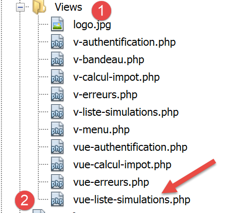
Uma vez determinada a aparência visual da vista, podemos prosseguir com o cálculo do modelo de vista em condições reais. Vamos rever os códigos de estado que conduzem a esta vista. Estes podem ser encontrados no ficheiro de configuração:
"vues": {
"vue-authentification.php": [700, 221, 400],
"vue-calcul-impot.php": [200, 300, 341, 350, 800],
"vue-liste-simulations.php": [500, 600]
},
"vue-erreurs": "vue-erreurs.php"
São, portanto, os códigos de estado [500, 600] que exibem a vista de simulação. Para descobrir o significado destes códigos, podemos consultar os testes [Postman] realizados na aplicação JSON:
- [list-simulations-500]: 500 é o código de estado após uma ação [list-simulations] bem-sucedida: a lista de simulações realizadas pelo utilizador é então apresentada;
- [delete-simulation-600]: 600 é o código de estado após uma ação [delete-simulation] bem-sucedida. A nova lista de simulações obtida após esta eliminação é então apresentada;
Agora que sabemos quando a lista de simulações deve ser exibida, podemos calcular o seu modelo em [view-simulation-list.php]:
<?php
// we inherit the following variables
// Request $request : la requête en cours
// Session $session: the application session
// array $config: application configuration
// array $content: controller response
// no errors possible
// array $content: controller response
//
// symfony dependencies
use Symfony\Component\HttpFoundation\Request;
use Symfony\Component\HttpFoundation\Session\Session;
// calculate the view model
$modèle = getModelForThisView($request, $session, $config, $content);
function getModelForThisView(Request $request, Session $session, array $config, array $content): object {
// encapsulate paged data in $modèle
$modèle = new \stdClass();
// put the simulations in the format expected by the page
// they are found in the response of the controller that executed the action
// as an array of objects of type [Simulation]
$objetsSimulation = $content["réponse"];
// each [Simulation] object will be transformed into an associative array
$modèle->simulations = [];
foreach ($objetsSimulation as $objetSimulation) {
$modèle->simulations[] = [
"marié" => $objetSimulation->getMarié(),
"enfants" => $objetSimulation->getEnfants(),
"salaire" => $objetSimulation->getSalaire(),
"impôt" => $objetSimulation->getImpôt(),
"surcôte" => $objetSimulation->getSurcôte(),
"décôte" => $objetSimulation->getdécôte(),
"réduction" => $objetSimulation->getRéduction(),
"taux" => $objetSimulation->getTaux()
];
}
// menu options
$modèle->optionsMenu = [
"Calcul de l'impôt" => "main.php?action=afficher-calcul-impot",
"Fin de session" => "main.php?action=fin-session"];
// we render the model
return $modèle;
}
?>
<!-- document HTML -->
<!doctype html>
<html lang="fr">
<head>
…
</head>
<body>
…
</body>
</html>
Comentários
- linhas 26–36: cálculo do modelo [$template→simulations] utilizado pelo fragmento [v-list-simulations.php];
- linhas 39-41: cálculo do modelo [$template→optionsMenu] utilizado pelo fragmento [v-menu.php];
23.13.4.4. [Postman] Testes
O teste [list-simulations-500] devolve o código de estado 500. Corresponde a um pedido para visualizar as simulações:

O teste [delete-simulation-600] devolve um código de estado 600. Corresponde à eliminação bem-sucedida da simulação n.º 0. O resultado devolvido é uma lista de simulações com uma simulação em falta:
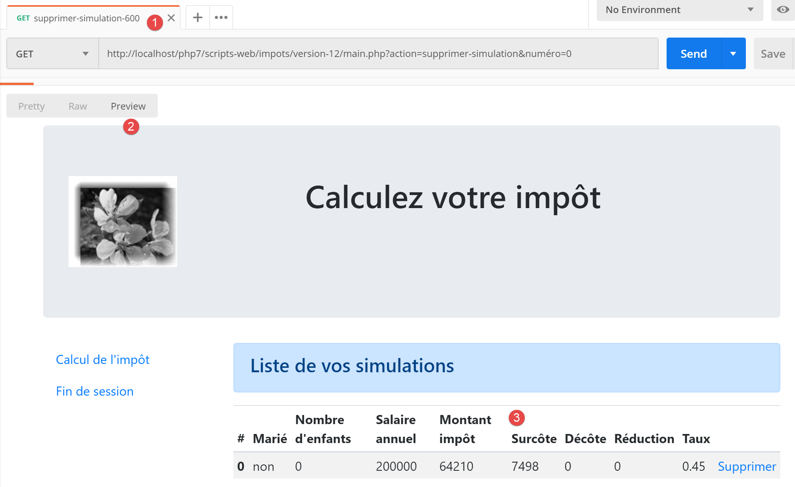
23.13.5. Visualização de erros inesperados
Aqui, referimo-nos a um erro inesperado como um erro que não deveria ter ocorrido durante a utilização normal da aplicação web.
Tomemos como exemplo o teste [Postman] [calculate-tax-3xx] definido da seguinte forma:

- em [1-3], um pedido POST com a ação [calculer-impot];
- em [4-6]: aqui podemos definir o que quisermos para os três parâmetros POST:
- [4]: falta o parâmetro [marié];
- [5-6]: os parâmetros [children, salary] estão presentes, mas são inválidos;
- em [9], estes três erros são reportados com o código de estado 338;
No entanto, no formulário HTML da aplicação web, este cenário não pode ocorrer:
- todos os parâmetros estão presentes;
- o parâmetro [married], que obtém o seu valor dos atributos [value] de dois botões de opção, deve ter um dos valores [yes] ou [no];
- num navegador moderno, os atributos <input type='number' min='0' step='1' …> garantem que as entradas para filhos e salário sejam necessariamente números inteiros >=0;
No entanto, nada impede um utilizador de usar o [Postman] para enviar o teste [calcul-impot-3xx] acima para o nosso servidor. Vimos que a nossa aplicação web sabe como responder corretamente a este pedido. Referir-nos-emos a um «erro inesperado» como um erro que não deveria ocorrer no contexto da aplicação HTML. Se ocorrer, é provável que alguém esteja a tentar «hackear» a aplicação. Para fins educativos, decidimos apresentar uma página de erro para estes casos. Na realidade, poderíamos simplesmente voltar a apresentar a última página enviada ao cliente. Para tal, basta armazenar a última resposta HTML enviada na sessão. No caso de um erro inesperado, devolvemos esta resposta. Desta forma, o utilizador terá a impressão de que o servidor não está a responder aos seus erros, uma vez que a página apresentada não muda.
23.13.5.1. Ver apresentação
A vista que exibe erros inesperados é a seguinte:

A página gerada pelo script [vue-erreurs.php] tem três partes:
- 1: O banner superior é gerado pelo fragmento [v-banner.php] já apresentado;
- 2: o(s) erro(s) inesperado(s);
- 3: um menu com três links, gerado pelo fragmento [v-menu.php];
A visualização para erros inesperados é gerada pelo seguinte script [vue-erreurs.php]:

<?php
// calculate the view model
$modèle = getModelForThisView();
function getModelForThisView(): object {
// encapsulate paged data in $modèle
$modèle = new \stdClass();
…
// we return the model
return $modèle;
}
?>
<!-- document HTML -->
<!doctype html>
<html lang="fr">
<head>
<!-- Required meta tags -->
<meta charset="utf-8">
<meta name="viewport" content="width=device-width, initial-scale=1, shrink-to-fit=no">
<!-- Bootstrap CSS -->
<link rel="stylesheet" href="https://stackpath.bootstrapcdn.com/bootstrap/4.1.3/css/bootstrap.min.css" integrity="sha384-MCw98/SFnGE8fJT3GXwEOngsV7Zt27NXFoaoApmYm81iuXoPkFOJwJ8ERdknLPMO" crossorigin="anonymous">
<title>Application impots</title>
</head>
<body>
<div class="container">
<!-- bandeau sur 12 colonnes -->
<?php require "v-bandeau.php"; ?>
<!-- ligne à deux colonnes -->
<div class="row">
<!-- menu sur 3 colonnes-->
<div class="col-md-3">
<?php require "v-menu.php" ?>
</div>
<!-- liste des erreurs -->
<div class="col-md-9">
<?php
print <<<EOT
<div class="alert alert-danger" role="alert">
Les erreurs inattendues suivantes se sont produites :
<ul>$modèle->erreurs</ul>
</div>
EOT;
?>
</div>
</div>
</div>
</body>
</html>
Comentários
- linha 27: inclusão do banner da aplicação [1];
- linha 32: inclusão do menu [2]. Será apresentado em três colunas abaixo do banner;
- linhas 34–44: exibição da área de erros em nove colunas;
- linhas 37–44: a operação [print] que exibe erros inesperados;
- linha 38: esta exibição aparecerá num contentor Bootstrap com fundo rosa;
- linha 39: texto introdutório;
- linha 40: a tag <ul> envolve uma lista com marcadores. Esta lista com marcadores é fornecida pelo modelo [$model->errors];
Já comentámos os dois fragmentos desta vista:
23.13.5.2. Testes visuais
Reunimos estes vários elementos na pasta [Tests] e criamos um modelo de teste para a vista [vue-erreurs.php]:

O modelo de dados para a vista [vue-erreurs.php] será o seguinte:
<?php
// calculate the view model
$modèle = getModelForThisView();
function getModelForThisView(): object {
// encapsulate paged data in $modèle
$modèle = new \stdClass();
// the table of unexpected errors
$erreurs = ["erreur1", "erreur2"];
// build the HTML list of errors
$modèle->erreurs = "";
foreach ($erreurs as $erreur) {
$modèle->erreurs .= "<li>$erreur</li>";
}
// menu options
$modèle->optionsMenu = [
"Calcul de l'impôt" => "main.php?action=afficher-calcul-impot",
"Liste des simulations" => "main.php?action=lister-simulations",
"Fin de session" => "main.php?action=fin-session",];
// banner image
$modèle->logo = "http://localhost/php7/scripts-web/impots/version-12/Tests/logo.jpg";
// we return the model
return $modèle;
}
?>
<!-- document HTML -->
<!doctype html>
<html lang="fr">
<head>
…
</head>
<body>
…
</body>
</html>
Comentários
- linhas 9–15: construção da lista de erros HTML;
- linhas 17–20: a matriz de opções do menu;
Vamos exibir esta vista:

Obtemos o seguinte resultado:

Trabalhamos nesta vista até ficarmos satisfeitos com o resultado visual. Podemos então prosseguir com a integração da vista na aplicação web atualmente em desenvolvimento.
23.13.5.3. Cálculo do modelo de visualização

Depois de determinada a aparência visual da vista, podemos prosseguir com o cálculo do modelo de vista em condições reais. Vamos rever os códigos de estado que conduzem a esta vista. Estes podem ser encontrados no ficheiro de configuração:
"vues": {
"vue-authentification.php": [700, 221, 400],
"vue-calcul-impot.php": [200, 300, 341, 350, 800],
"vue-liste-simulations.php": [500, 600]
},
"vue-erreurs": "vue-erreurs.php"
Portanto, são os códigos de estado não listados nas linhas [2–4] que acionam a exibição da visualização de erros inesperados.
O código para calcular o modelo da visualização [vue-erreurs.php] é o seguinte:
<?php
// we inherit the following variables
// Request $request : la requête en cours
// Session $session: the application session
// array $config: application configuration
// array $content: controller response
//
// symfony dependencies
use Symfony\Component\HttpFoundation\Request;
use Symfony\Component\HttpFoundation\Session\Session;
// calculate the view model
$modèle = getModelForThisView($request, $session, $config, $content);
function getModelForThisView(Request $request, Session $session, array $config, array $content): object {
// encapsulate paged data in $modèle
$modèle = new \stdClass();
// recover errors from the controller response
$réponse = $content["réponse"];
if (!is_array($réponse)) {
// a single error message
$erreurs = [$réponse];
} else {
// several error messages
$erreurs = $réponse;
}
// build the HTML list of errors
$modèle->erreurs = "";
foreach ($erreurs as $erreur) {
$modèle->erreurs .= "<li>$erreur</li>";
}
// menu options
$modèle->optionsMenu = [
"Calcul de l'impôt" => "main.php?action=afficher-calcul-impot",
"Liste des simulations" => "main.php?action=lister-simulations",
"Fin de session" => "main.php?action=fin-session",];
// we return the model
return $modèle;
}
?>
<!-- document HTML -->
<!doctype html>
<html lang="fr">
<head>
…
</head>
<body>
…
</body>
</html>
Comentários
- linhas 19–32: cálculo do modelo [$template→errors] utilizado pela vista [view-errors.php];
- linhas 34–37: cálculo do modelo [$template→optionsMenu] utilizado pelo fragmento [v-menu.php];
23.13.5.4. Testes [Postman]
O teste [calculate-tax-3xx] devolve o código de estado 338, o que não é um código de estado esperado. A resposta HTML é a seguinte:

23.13.6. Implementação das ações do menu da aplicação
Aqui iremos discutir a implementação das ações do menu. Vamos rever o significado dos links que encontrámos
Ver | Link | Destino | Função |
Cálculo de impostos | [Lista de simulações] | [main.php?action=list-simulations] | Solicitar a lista de simulações |
[Terminar sessão] | |||
Lista de simulações | [Cálculo de impostos] | [main.php?action=display-tax-calculation] | Exibir a visualização do cálculo de impostos |
[Sair] | |||
Erros inesperados | [Cálculo de impostos] | [main.php?action=display-tax-calculation] | Exibir a visualização do cálculo de impostos |
[Lista de simulações] | |||
[Terminar sessão] |
É importante notar que clicar num link desencadeia um pedido GET para o destino do link. As ações [lister-simulations, fin-session] foram implementadas utilizando uma operação GET, o que nos permite utilizá-las como destinos de links. Quando a ação é executada através de um pedido POST, já não é possível utilizar um link, a menos que seja combinado com JavaScript.
A partir das ações acima, parece que a ação [display-tax-calculation] ainda não foi implementada. Trata-se de uma operação de navegação entre duas vistas: o servidor JSON ou XML não tem motivos para a implementar, uma vez que não possui o conceito de vista. É o servidor HTML que introduz este conceito.
Precisamos, portanto, de implementar a ação [display-tax-calculation]. Isto permitir-nos-á rever o procedimento para implementar uma ação no servidor.
Primeiro, precisamos de adicionar um novo controlador secundário. Vamos chamá-lo de [AfficherCalculImpotController]:

Este controlador deve ser adicionado ao ficheiro de configuração [config.json]:
{
"databaseFilename": "database.json",
"rootDirectory": "C:/myprograms/laragon-lite/www/php7/scripts-web/impots/version-12",
"relativeDependencies": [
…
"/Controllers/InterfaceController.php",
"/Controllers/InitSessionController.php",
"/Controllers/ListerSimulationsController.php",
"/Controllers/AuthentifierUtilisateurController.php",
"/Controllers/CalculerImpotController.php",
"/Controllers/SupprimerSimulationController.php",
"/Controllers/FinSessionController.php",
"/Controllers/AfficherCalculImpotController.php"
],
"absoluteDependencies": [
"C:/myprograms/laragon-lite/www/vendor/autoload.php",
"C:/myprograms/laragon-lite/www/vendor/predis/predis/autoload.php"
],
…
"actions":
{
"init-session": "\\InitSessionController",
"authentifier-utilisateur": "\\AuthentifierUtilisateurController",
"calculer-impot": "\\CalculerImpotController",
"lister-simulations": "\\ListerSimulationsController",
"supprimer-simulation": "\\SupprimerSimulationController",
"fin-session": "\\FinSessionController",
"afficher-calcul-impot": "\\AfficherCalculImpotController"
},
…
"vues": {
"vue-authentification.php": [700, 221, 400],
"vue-calcul-impot.php": [200, 300, 341, 350, 800],
"vue-liste-simulations.php": [500, 600]
},
"vue-erreurs": "vue-erreurs.php"
}
- linha 15: o novo controlador;
- linha 30: a nova ação e o seu controlador;
- linha 35: o novo controlador irá devolver o código de estado 800. Ao alternar entre vistas, não pode haver erros;
O controlador [AfficherCalculImpotController.php] terá o seguinte aspeto:
<?php
namespace Application;
// symfony dependencies
use Symfony\Component\HttpFoundation\Request;
use Symfony\Component\HttpFoundation\Session\Session;
use Symfony\Component\HttpFoundation\Response;
class AfficherCalculImpotController implements InterfaceController {
// $config is the application configuration
// traitement d'une requête Request
// session and can modify it
// $infos is additional information specific to each controller
// renders an array [$statusCode, $état, $content, $headers]
public function execute(
array $config,
Request $request,
Session $session,
array $infos = NULL): array {
// view change - just a status code to set
return [Response::HTTP_OK, 800, ["réponse" => ""], []];
}
}
Comentários
- linha 10: tal como os outros controladores secundários, o novo controlador implementa a interface [InterfaceController];
- As alterações na View são fáceis de implementar: basta devolver o código de estado associado à View de destino, neste caso o código 800, como visto acima;
23.13.7. Testes em ambiente real
O código foi escrito e cada ação testada com o [Postman]. Ainda precisamos de testar o fluxo da vista num cenário real. Precisamos de uma forma de inicializar a sessão HTML. Sabemos que precisamos de enviar os parâmetros [action=init-session&type=html] para o servidor. Para evitar ter de os digitar na barra de endereços do navegador, vamos adicionar o script [index.php] à nossa aplicação:

O script [index.php] será o seguinte:
<?php
// redirect to [main.php] in [html] mode
header('Location: main.php?action=init-session&type=html');
- Linha 4: [header] é uma função PHP que adiciona um cabeçalho HTTP à resposta. O cabeçalho HTTP [Location: main.php?action=init-session&type=html] instrui o navegador do cliente a redirecionar para o URL de destino especificado em [Location]. O script [index.php] é solicitado com o URL [http://localhost/php7/scripts-web/impots/version-12/index.php]. Quando o navegador do cliente recebe o redirecionamento para a URL relativa [main.php?action=init-session&type=html], ele solicitará a URL absoluta [http://localhost/php7/scripts-web/impots/version-12/main.php?action=init-session&type=html] e a sessão HTML será iniciada;
O URL de inicialização pode ser simplificado para [http://localhost/php7/scripts-web/impots/version-12/]. Se não for especificada nenhuma página no URL, as páginas [index.html, index.php] são utilizadas por predefinição. Neste caso, será utilizado o script [index.php];
Vamos começar: vamos agora apresentar algumas sequências de visualização.
No nosso navegador, ativamos as ferramentas de programador (F12 no Firefox) e solicitamos a URL de inicialização [https://localhost/php7/scripts-web/impots/version-12/]:

- Em [4], a primeira resposta do servidor é um redirecionamento 302:
- Em [5], é feita uma nova solicitação para a URL [http://localhost/php7/scripts-web/impots/13/main.php?action=init-session&type=html];
Vamos analisar mais detalhadamente o redirecionamento 302:

- em [8], o código HTTP [302] é um código de redirecionamento: o navegador do cliente é informado de que a URL solicitada foi movida. A nova URL é especificada em [9]. O navegador seguirá este redirecionamento com uma nova solicitação GET:

- em [12-13], a nova solicitação feita pelo navegador;
Vamos preencher o formulário que recebemos;
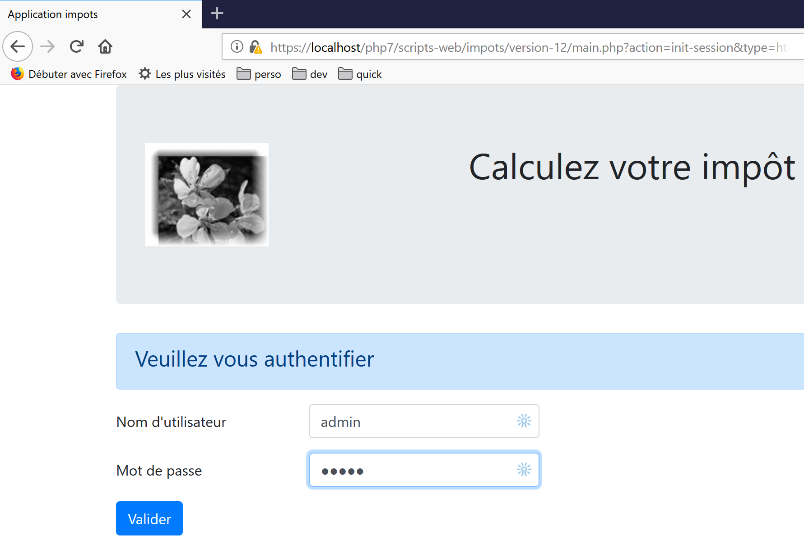
Depois, vamos realizar algumas simulações:


Vamos solicitar a lista de simulações:

Apague a primeira simulação:

Terminar a sessão:
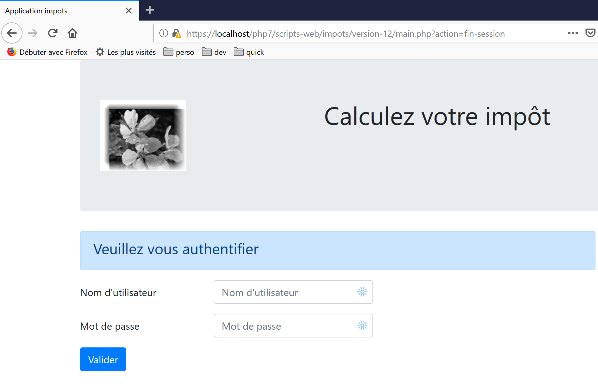
Convidamos o leitor a realizar testes adicionais.
23.14. Cliente de Serviço Web JSON
23.14.1. Arquitetura cliente/servidor

Vamos agora concentrar-nos no cliente JSON [A] do serviço web [B]. O cliente [A], tal como o serviço web [B], tem uma estrutura em camadas:

Esta arquitetura reflete-se na seguinte organização do código:

A maioria das classes já foi apresentada e explicada:
link para o parágrafo. | |
ligação parágrafo. | |
link para o parágrafo. | |
link do parágrafo. | |
Link do parágrafo. | |
Link do parágrafo. |
23.14.2. A camada [dao]

23.14.2.1. Interface
A interface para a camada [dao] será a seguinte [InterfaceClientDao.php]:
<?php
// namespace
namespace Application;
interface InterfaceClientDao {
// reading taxpayer data
public function getTaxPayersData(string $taxPayersFilename, string $errorsFilename): array;
// calculating a taxpayer's taxes
public function calculerImpot(string $marié, int $enfants, int $salaire): Simulation;
// recording results
public function saveResults(string $resultsFilename, array $simulations): void;
// authentication
public function authentifierUtilisateur(String $user, string $password): void;
// list of simulations
public function listerSimulations(): array;
// delete a simulation
public function supprimerSimulation(int $numéro): array;
// start of session
public function initSession(string $type = 'json'): void;
// end of session
public function finSession(): void;
}
Comentários
- linha 9: o método [getTaxPayersData] permite utilizar o ficheiro JSON que contém os dados dos contribuintes. Este método é implementado pela característica [TraitDao], que já foi discutida (ver o parágrafo com o link);
- linha 15: o método [saveResults] guarda os resultados de vários cálculos de impostos num ficheiro JSON. Também aqui, este método é implementado pela característica [TraitDao] já discutida (parágrafo com link);
- Linhas 12, 18, 21, 27, 30: foi criado um método para cada ação aceite pelo serviço web;
23.14.2.2. Implementação
A interface [InterfaceClientDao] é implementada pela seguinte classe [ClientDao]:
<?php
namespace Application;
// dependencies
use Symfony\Component\HttpClient\HttpClient;
use Symfony\Component\HttpClient\Response\CurlResponse;
class ClientDao implements InterfaceClientDao {
// using a Trait
use TraitDao;
// attributes
private $urlServer;
private $sessionCookie;
private $verbose;
// manufacturer
public function __construct(string $urlServer, bool $verbose = TRUE) {
$this->urlServer = $urlServer;
$this->verbose = $verbose;
}
…
}
Comentários
- linhas 18–21: o construtor recebe dois parâmetros:
- a URL [$urlServer] do serviço web JSON;
- um valor booleano [$verbose] que, quando definido como TRUE, indica que a classe deve exibir as respostas do servidor na consola;
- linha 14: o cookie de sessão. A sua função foi descrita na versão 09 do cliente (parágrafo do link);
- linha 11: a classe utiliza o trait [TraitDao], que implementa dois métodos da interface:
- [getTaxPayersData(string $taxPayersFilename, string $errorsFilename): array];
- [function calculateTax(string $married, int $children, int $salary): Simulation];
23.14.2.2.1. Método [initSession]
O método [initSession] é implementado da seguinte forma:
public function initSession(string $type = 'json'): void {
// create a HTTP customer
$httpClient = HttpClient::create();
// make the request to the server without authentication
$response = $httpClient->request('GET', $this->urlServer,
["query" => [
"action" => "init-session",
"type" => $type
],
"verify_peer" => false
]);
// the answer is retrieved
$this->getResponse($response);
// retrieve the session cookie
$headers = $response->getHeaders();
if (isset($headers["set-cookie"])) {
// session cookie ?
foreach ($headers["set-cookie"] as $cookie) {
$match = [];
$match = preg_match("/^PHPSESSID=(.+?);/", $cookie, $champs);
if ($match) {
$this->sessionCookie = "PHPSESSID=" . $champs[1];
}
}
}
}
Uma vez que a ação [init-session] deve ser a primeira ação solicitada ao serviço web, o método [initSession] será o primeiro método da camada [dao] a ser chamado.
Comentários
- linha 1: o tipo de sessão pretendido é passado como parâmetro. Se não for fornecido nenhum parâmetro, será iniciada uma sessão JSON;
- linhas 5–11: é efetuado um pedido GET ao serviço web;
- linhas 7–8: os dois parâmetros GET;
- linha 10: No caso de comunicação segura (HTTPS), o certificado de segurança enviado pelo serviço web não será verificado;
- linha 13: o método [getResponse] recupera a resposta do servidor. Este método devolve-a sob a forma de uma matriz. Aqui, o resultado do método não é utilizado. O método [getResponse] lança uma exceção se o código de estado HTTP da resposta do serviço web não for 200 OK;
- Linhas 14–25: Uma vez que o método [initSession] é o primeiro método da camada [dao] a ser executado, recuperamos o cookie de sessão para que os métodos subsequentes possam enviá-lo de volta ao serviço web. Este código já foi comentado na versão 09;
23.14.2.2.2. O método [getResponse]
O método [getResponse] é responsável pelo processamento da resposta do serviço web:
private function getResponse(CurlResponse $response) {
// the answer is retrieved
$json = $response->getContent(false);
// logs
if ($this->verbose) {
print "$json\n";
}
// retrieve response status
$statusCode = $response->getStatusCode();
// mistake?
if ($statusCode !== 200) {
// we have an error
throw new ExceptionImpots($json);
}
// we give our answer
$array = json_decode($json, true);
return $array["réponse"];
}
Comentários
- linha 1: o método é privado;
- linha 1: o parâmetro do método é a resposta do serviço web do tipo [Symfony\Component\HttpClient\Response\CurlResponse], o tipo de resposta do Symfony, quando [HttpClient] é implementado por [CurlClient], ou seja, pela biblioteca [curl];
- linha 3: recuperamos a resposta JSON do servidor. Note-se que o parâmetro [false] existe para impedir que o Symfony lance uma exceção quando o estado da resposta HTTP do servidor estiver no intervalo [3xx, 4xx, 5xx];
- linhas 5–7: se estivermos no modo [$verbose], exibimos a resposta do servidor na consola;
- linhas 9–14: se o estado da resposta HTTP do servidor não for 200, é lançada uma exceção com a resposta JSON do servidor como mensagem de erro;
- linha 16: a cadeia JSON é descodificada para um array;
- linha 17: a informação útil está em [$array["response"]];
23.14.2.2.3. O método [authenticateUser]
O método [authenticateUser] é o seguinte:
public function authentifierUtilisateur(string $user, string $password): void {
// create a HTTP customer
$httpClient = HttpClient::create();
// make a request to the server with authentication
$response = $httpClient->request('POST', $this->urlServer,
["query" => [
"action" => "authentifier-utilisateur"
],
"body" => [
"user" => $user,
"password" => $password
],
"verify_peer" => false,
"headers" => ["Cookie" => $this->sessionCookie]
]);
// the answer is retrieved
$this->getResponse($response);
}
Comentários
- linha 5: o pedido do cliente é um POST;
- linhas 6–8: parâmetros na URL;
- linhas 9–12: parâmetros POST;
- linha 14: o cookie de sessão;
- Linha 17: lemos a resposta. Sabemos que, se houver um erro (um código de estado HTTP diferente de 200), o método [getResponse] lança uma exceção;
23.14.2.2.4. O método [calculateTax]
public function calculerImpot(string $marié, int $enfants, int $salaire): Simulation {
// create a HTTP customer
$httpClient = HttpClient::create();
// make the request to the server without authentication but with the session cookie
$response = $httpClient->request('POST', $this->urlServer,
["query" => [
"action" => "calculer-impot"],
"body" => [
"marié" => $marié,
"enfants" => $enfants,
"salaire" => $salaire
],
"verify_peer" => false,
"headers" => ["Cookie" => $this->sessionCookie]
]);
// the answer is retrieved
$array = $this->getResponse($response);
return (new Simulation())->setFromArrayOfAttributes($array);
}
Comentários
- linhas 6–7: o único parâmetro URL;
- linhas 8–12: os três parâmetros POST (linha 5);
- linha 17: a resposta é processada;
- linha 18: se chegarmos a este ponto, significa que o método [getResponse] não lançou uma exceção. Devolvemos um objeto [Simulation] inicializado com a matriz devolvida por [getResponse];
23.14.2.2.5. O método [listerSimulations]
public function listerSimulations(): array {
// create a HTTP customer
$httpClient = HttpClient::create();
// make the request to the server without authentication but with the session cookie
$response = $httpClient->request('GET', $this->urlServer,
["query" => [
"action" => "lister-simulations"
],
"verify_peer" => false,
"headers" => ["Cookie" => $this->sessionCookie]
]);
// the answer is retrieved
return $this->getSimulations($response);
}
Comentários
- linha 5: método GET;
- linhas 6–8: o único parâmetro GET;
- linha 13: a recuperação das simulações é tratada pelo método privado [getSimulations];
23.14.2.2.6. O método [getSimulations]
private function getSimulations(CurlResponse $response): array {
// we retrieve the JSON response
$array = $this->getResponse($response);
// we have an array of associative objects
// we'll turn it into an array of Simulation objects
$simulations = [];
foreach ($array as $simulation) {
$simulations [] = (new Simulation())->setFromArrayOfAttributes($simulation);
}
// we render the Simulation object list
return $simulations;
}
Comentários
- linha 3: recuperamos a matriz da resposta. Trata-se de uma matriz de matrizes, cada uma das quais possui todos os atributos de um objeto [Simulation];
- linha 6: se chegarmos a este ponto, significa que o método [getResponse] não lançou uma exceção;
- linhas 6–9: usamos a resposta para construir uma matriz de objetos [Simulation];
- linha 11: devolvemos esta matriz;
23.14.2.2.7. O método [DeleteSimulation]
public function supprimerSimulation(int $numéro): array {
// create a HTTP customer
$httpClient = HttpClient::create();
// make the request to the server without authentication but with the session cookie
$response = $httpClient->request('GET', $this->urlServer,
["query" => [
"action" => "supprimer-simulation",
"numéro" => $numéro
],
"verify_peer" => false,
"headers" => ["Cookie" => $this->sessionCookie]
]);
// the answer is retrieved
return $this->getSimulations($response);
}
Comentários
- linha 5: é feita uma solicitação GET;
- Linhas 6–9: Os dois parâmetros de URL;
- linha 14: após uma eliminação, o servidor devolve o novo conjunto de simulações. Devolvemos este conjunto;
23.14.2.2.8. O método [endSession]
Uma sessão com o serviço web termina normalmente através da chamada ao método [finSession]:
public function finSession(): void {
// create a HTTP customer
$httpClient = HttpClient::create();
// make the request to the server without authentication but with the session cookie
$response = $httpClient->request('GET', $this->urlServer,
["query" => [
"action" => "fin-session"
],
"verify_peer" => false,
"headers" => ["Cookie" => $this->sessionCookie]
]);
// the answer is retrieved
$this->getResponse($response);
}
Comentários
- linha 5: fazemos um pedido GET;
- linhas 6–8: o único parâmetro da URL;
- linha 13: lemos a resposta. Será lançada uma exceção se o código de estado HTTP da resposta não for 200;
23.14.3. A camada [de negócios]

23.14.3.1. A interface
A interface para a camada [business] é a seguinte [InterfaceClientMetier.php]:
<?php
// namespace
namespace Application;
interface InterfaceClientMetier {
// calculating a taxpayer's taxes
public function calculerImpot(string $marié, int $enfants, int $salaire): Simulation;
// batch mode tax calculation
public function executeBatchImpots(string $taxPayersFileName, string $resultsFilename, string $errorsFileName): void;
// authentication
public function authentifierUtilisateur(String $user, string $password): void;
// list of simulations
public function listerSimulations(): array;
// recording results
public function saveResults(string $resultsFilename, array $simulations): void;
// delete a simulation
public function supprimerSimulation(int $numéro): array;
// start of session
public function initSession(string $type = 'json'): void;
// end of session
public function finSession(): void;
}
Comentários
- Apenas o método [executeBatchImports] na linha 12 é específico da camada [business]. Todos os outros pertencem à camada [DAO], que os implementa;
23.14.3.2. A classe [ClientMetier]
A classe que implementa a camada [business] é a seguinte:
<?php
namespace Application;
class ClientMetier implements InterfaceClientMetier {
// attribute
private $clientDao;
// manufacturer
public function __construct(InterfaceClientDao $clientDao) {
$this->clientDao = $clientDao;
}
// tAX CALCULATION
public function calculerImpot(string $marié, int $enfants, int $salaire): Simulation {
return $this->clientDao->calculerImpot($marié, $enfants, $salaire);
}
// batch mode tax calculation
public function executeBatchImpots(string $taxPayersFileName, string $resultsFileName, string $errorsFileName): void {
// we let the exceptions coming from the [dao] layer flow upwards
// retrieve taxpayer data
$taxPayersData = $this->clientDao->getTaxPayersData($taxPayersFileName, $errorsFileName);
// results table
$simulations = [];
// we exploit them
foreach ($taxPayersData as $taxPayerData) {
// tax calculation
$simulations [] = $this->calculerImpot(
$taxPayerData->getMarié(),
$taxPayerData->getEnfants(),
$taxPayerData->getSalaire());
}
// recording results
if ($resultsFileName !== NULL) {
$this->clientDao->saveResults($resultsFileName, $simulations);
}
}
public function authentifierUtilisateur(String $user, string $password): void {
$this->clientDao->authentifierUtilisateur($user, $password);
}
public function listerSimulations(): array {
return $this->clientDao->listerSimulations();
}
public function saveResults(string $resultsFilename, array $simulations): void {
$this->clientDao->saveResults($resultsFilename, $simulations);
}
public function supprimerSimulation(int $numéro): array {
return $this->clientDao->supprimerSimulation($numéro);
}
public function finSession(): void {
$this->clientDao->finSession();
}
public function initSession(string $type = 'json'): void {
$this->clientDao->initSession($type);
}
}
Comentários
- linhas 10–12: Para ser construída, a camada [business] necessita de uma referência à camada [DAO];
- linhas 20–38: apenas o método [executeBatchImports] é específico da camada [business]. A implementação dos outros métodos delega o trabalho a métodos com os mesmos nomes na camada [DAO];
- linha 23: chamamos a camada [dao] para recuperar os dados do contribuinte numa matriz de objetos [TaxPayerData];
- linha 25: as várias simulações calculadas são acumuladas na matriz [$simulations];
- linhas 27–33: calculamos o imposto para cada contribuinte na matriz [$taxPayersData];
- linhas 35–37: os resultados obtidos na matriz [$simulations] são guardados num ficheiro JSON;
Nota: A camada [business] praticamente não faz nada. Poderíamos decidir removê-la e consolidar tudo na camada [DAO].
23.14.4. O script principal

O script principal é configurado pelo seguinte ficheiro [config.json]:
{
"taxPayersDataFileName": "Data/taxpayersdata.json",
"resultsFileName": "Data/results.json",
"errorsFileName": "Data/errors.json",
"rootDirectory": "C:/Data/st-2019/dev/php7/poly/scripts-console/impots/version-12",
"dependencies": [
"/Entities/BaseEntity.php",
"/Entities/TaxPayerData.php",
"/Entities/Simulation.php",
"/Entities/ExceptionImpots.php",
"/Utilities/Utilitaires.php",
"/Model/InterfaceClientDao.php",
"/Model/TraitDao.php",
"/Model/ClientDao.php",
"/Model/InterfaceClientMetier.php",
"/Model/ClientMetier.php"
],
"absoluteDependencies": [
"C:/myprograms/laragon-lite/www/vendor/autoload.php"
],
"user": {
"login": "admin",
"passwd": "admin"
},
"urlServer": "https://localhost:443/php7/scripts-web/impots/version-12/main.php"
}
O script principal [main.php] é o seguinte:
<?php
// strict adherence to declared types of function parameters
declare(strict_types = 1);
// namespace
namespace Application;
// error handling by PHP
// ini_set("display_errors", "0");
//
// configuration file path
define("CONFIG_FILENAME", "../Data/config.json");
// we retrieve the configuration
$config = \json_decode(file_get_contents(CONFIG_FILENAME), true);
// include the necessary script dependencies
$rootDirectory = $config["rootDirectory"];
foreach ($config["dependencies"] as $dependency) {
require "$rootDirectory/$dependency";
}
// absolute dependencies (third-party libraries)
foreach ($config["absoluteDependencies"] as $dependency) {
require "$dependency";
}
// definition of constants
define("TAXPAYERSDATA_FILENAME", "$rootDirectory/{$config["taxPayersDataFileName"]}");
define("RESULTS_FILENAME", "$rootDirectory/{$config["resultsFileName"]}");
define("ERRORS_FILENAME", "$rootDirectory/{$config["errorsFileName"]}");
//
// symfony dependencies
use Symfony\Component\HttpClient\HttpClient;
// creation of the [dao] layer
$clientDao = new ClientDao($config["urlServer"]);
// creation of the [business] layer
$clientMetier = new ClientMetier($clientDao);
// tax calculation in batch mode
try {
// session initialization
$clientMetier->initSession('json');
// authentication
$clientMetier->authentifierUtilisateur($config["user"]["login"], $config["user"]["passwd"]);
// tax calculation without saving results
$clientMetier->executeBatchImpots(TAXPAYERSDATA_FILENAME, NULL, ERRORS_FILENAME);
// list of simulations
$clientMetier->listerSimulations();
// deleting a simulation
$simulations = $clientMetier->supprimerSimulation(1);
// saving results
$clientMetier->saveResults(RESULTS_FILENAME, $simulations);
// end of session
$clientMetier->finSession();
// action without being authenticated - must crash
$clientMetier->listerSimulations();
} catch (ExceptionImpots $ex) {
// error is displayed
print "Une erreur s'est produite : " . $ex->getMessage() . "\n";
}
// end
print "Terminé\n";
exit();
Comentários
- linhas 12-16: processamento do ficheiro de configuração [config.json];
- linhas 18–26: carregamento de todas as dependências;
- linhas 28–34: definição de constantes e aliases;
- linhas 36–39: construção das camadas [dao] e [business];
- linha 44: inicialização de uma sessão JSON;
- linha 46: autenticação no servidor;
- linha 48: cálculo do imposto para uma série de contribuintes. Os resultados não são guardados (2.º parâmetro definido como NULL);
- linha 50: recuperar os resultados de todos estes cálculos;
- linha 52: eliminar a simulação n.º 1 (a segunda da lista);
- linha 54: guardar as simulações restantes;
- linha 56: a sessão é encerrada. Isto significa que o cookie de sessão é eliminado;
- linha 58: solicitamos a lista de simulações. Uma vez que o cookie de sessão foi eliminado, a autenticação deve ser realizada novamente. Devemos, portanto, receber uma exceção indicando que não estamos autenticados;
O ficheiro [taxpayersdata.json] é o seguinte:
[
{
"marié": "oui",
"enfants": 2,
"salaire": 55555
},
{
"marié": "ouix",
"enfants": "2x",
"salaire": "55555x"
},
{
"marié": "oui",
"enfants": "2",
"salaire": 50000
},
{
"marié": "oui",
"enfants": 3,
"salaire": 50000
},
{
"marié": "non",
"enfants": 2,
"salaire": 100000
},
{
"marié": "non",
"enfants": 3,
"salaire": 100000
},
{
"marié": "oui",
"enfants": 3,
"salaire": 100000
},
{
"marié": "oui",
"enfants": 5,
"salaire": 100000
},
{
"marié": "non",
"enfants": 0,
"salaire": 100000
},
{
"marié": "oui",
"enfants": 2,
"salaire": 30000
},
{
"marié": "non",
"enfants": 0,
"salaire": 200000
},
{
"marié": "oui",
"enfants": 3,
"salaire": 20000
}
]
Existem 12 contribuintes, dos quais 1 está incorreto. Isso perfaz um total de 11 simulações. Uma delas será removida. Deverão restar 10.
Após executar o script principal, o ficheiro JSON [results.json] fica assim:
[
{
"marié": "oui",
"enfants": "2",
"salaire": "55555",
"impôt": 2814,
"surcôte": 0,
"décôte": 0,
"réduction": 0,
"taux": 0.14
},
{
"marié": "oui",
"enfants": "3",
"salaire": "50000",
"impôt": 0,
"surcôte": 0,
"décôte": 720,
"réduction": 0,
"taux": 0.14
},
{
"marié": "non",
"enfants": "2",
"salaire": "100000",
"impôt": 19884,
"surcôte": 4480,
"décôte": 0,
"réduction": 0,
"taux": 0.41
},
{
"marié": "non",
"enfants": "3",
"salaire": "100000",
"impôt": 16782,
"surcôte": 7176,
"décôte": 0,
"réduction": 0,
"taux": 0.41
},
{
"marié": "oui",
"enfants": "3",
"salaire": "100000",
"impôt": 9200,
"surcôte": 2180,
"décôte": 0,
"réduction": 0,
"taux": 0.3
},
{
"marié": "oui",
"enfants": "5",
"salaire": "100000",
"impôt": 4230,
"surcôte": 0,
"décôte": 0,
"réduction": 0,
"taux": 0.14
},
{
"marié": "non",
"enfants": "0",
"salaire": "100000",
"impôt": 22986,
"surcôte": 0,
"décôte": 0,
"réduction": 0,
"taux": 0.41
},
{
"marié": "oui",
"enfants": "2",
"salaire": "30000",
"impôt": 0,
"surcôte": 0,
"décôte": 0,
"réduction": 0,
"taux": 0
},
{
"marié": "non",
"enfants": "0",
"salaire": "200000",
"impôt": 64210,
"surcôte": 7498,
"décôte": 0,
"réduction": 0,
"taux": 0.45
},
{
"marié": "oui",
"enfants": "3",
"salaire": "20000",
"impôt": 0,
"surcôte": 0,
"décôte": 0,
"réduction": 0,
"taux": 0
}
]
Existem, de facto, 10 simulações.
O ficheiro JSON [errors.json] tem o seguinte conteúdo:
{
"numéro": 1,
"erreurs": [
{
"marié": "ouix"
},
{
"enfants": "2x"
},
{
"salaire": "55555x"
}
]
}
A saída da consola é a seguinte (no modo detalhado, as respostas JSON do servidor são apresentadas na consola):
{"action":"init-session","état":700,"réponse":"session démarrée avec type [json]"}
{"action":"authentifier-utilisateur","état":200,"réponse":"Authentification réussie [admin, admin]"}
{"action":"calculer-impot","état":300,"réponse":{"marié":"oui","enfants":"2","salaire":"55555","impôt":2814,"surcôte":0,"décôte":0,"réduction":0,"taux":0.14}}
{"action":"calculer-impot","état":300,"réponse":{"marié":"oui","enfants":"2","salaire":"50000","impôt":1384,"surcôte":0,"décôte":384,"réduction":347,"taux":0.14}}
{"action":"calculer-impot","état":300,"réponse":{"marié":"oui","enfants":"3","salaire":"50000","impôt":0,"surcôte":0,"décôte":720,"réduction":0,"taux":0.14}}
{"action":"calculer-impot","état":300,"réponse":{"marié":"non","enfants":"2","salaire":"100000","impôt":19884,"surcôte":4480,"décôte":0,"réduction":0,"taux":0.41}}
{"action":"calculer-impot","état":300,"réponse":{"marié":"non","enfants":"3","salaire":"100000","impôt":16782,"surcôte":7176,"décôte":0,"réduction":0,"taux":0.41}}
{"action":"calculer-impot","état":300,"réponse":{"marié":"oui","enfants":"3","salaire":"100000","impôt":9200,"surcôte":2180,"décôte":0,"réduction":0,"taux":0.3}}
{"action":"calculer-impot","état":300,"réponse":{"marié":"oui","enfants":"5","salaire":"100000","impôt":4230,"surcôte":0,"décôte":0,"réduction":0,"taux":0.14}}
{"action":"calculer-impot","état":300,"réponse":{"marié":"non","enfants":"0","salaire":"100000","impôt":22986,"surcôte":0,"décôte":0,"réduction":0,"taux":0.41}}
{"action":"calculer-impot","état":300,"réponse":{"marié":"oui","enfants":"2","salaire":"30000","impôt":0,"surcôte":0,"décôte":0,"réduction":0,"taux":0}}
{"action":"calculer-impot","état":300,"réponse":{"marié":"non","enfants":"0","salaire":"200000","impôt":64210,"surcôte":7498,"décôte":0,"réduction":0,"taux":0.45}}
{"action":"calculer-impot","état":300,"réponse":{"marié":"oui","enfants":"3","salaire":"20000","impôt":0,"surcôte":0,"décôte":0,"réduction":0,"taux":0}}
{"action":"lister-simulations","état":500,"réponse":[{"marié":"oui","enfants":"2","salaire":"55555","impôt":2814,"surcôte":0,"décôte":0,"réduction":0,"taux":0.14,"arrayOfAttributes":null},{"marié":"oui","enfants":"2","salaire":"50000","impôt":1384,"surcôte":0,"décôte":384,"réduction":347,"taux":0.14,"arrayOfAttributes":null},{"marié":"oui","enfants":"3","salaire":"50000","impôt":0,"surcôte":0,"décôte":720,"réduction":0,"taux":0.14,"arrayOfAttributes":null},{"marié":"non","enfants":"2","salaire":"100000","impôt":19884,"surcôte":4480,"décôte":0,"réduction":0,"taux":0.41,"arrayOfAttributes":null},{"marié":"non","enfants":"3","salaire":"100000","impôt":16782,"surcôte":7176,"décôte":0,"réduction":0,"taux":0.41,"arrayOfAttributes":null},{"marié":"oui","enfants":"3","salaire":"100000","impôt":9200,"surcôte":2180,"décôte":0,"réduction":0,"taux":0.3,"arrayOfAttributes":null},{"marié":"oui","enfants":"5","salaire":"100000","impôt":4230,"surcôte":0,"décôte":0,"réduction":0,"taux":0.14,"arrayOfAttributes":null},{"marié":"non","enfants":"0","salaire":"100000","impôt":22986,"surcôte":0,"décôte":0,"réduction":0,"taux":0.41,"arrayOfAttributes":null},{"marié":"oui","enfants":"2","salaire":"30000","impôt":0,"surcôte":0,"décôte":0,"réduction":0,"taux":0,"arrayOfAttributes":null},{"marié":"non","enfants":"0","salaire":"200000","impôt":64210,"surcôte":7498,"décôte":0,"réduction":0,"taux":0.45,"arrayOfAttributes":null},{"marié":"oui","enfants":"3","salaire":"20000","impôt":0,"surcôte":0,"décôte":0,"réduction":0,"taux":0,"arrayOfAttributes":null}]}
{"action":"supprimer-simulation","état":600,"réponse":[{"marié":"oui","enfants":"2","salaire":"55555","impôt":2814,"surcôte":0,"décôte":0,"réduction":0,"taux":0.14,"arrayOfAttributes":null},{"marié":"oui","enfants":"3","salaire":"50000","impôt":0,"surcôte":0,"décôte":720,"réduction":0,"taux":0.14,"arrayOfAttributes":null},{"marié":"non","enfants":"2","salaire":"100000","impôt":19884,"surcôte":4480,"décôte":0,"réduction":0,"taux":0.41,"arrayOfAttributes":null},{"marié":"non","enfants":"3","salaire":"100000","impôt":16782,"surcôte":7176,"décôte":0,"réduction":0,"taux":0.41,"arrayOfAttributes":null},{"marié":"oui","enfants":"3","salaire":"100000","impôt":9200,"surcôte":2180,"décôte":0,"réduction":0,"taux":0.3,"arrayOfAttributes":null},{"marié":"oui","enfants":"5","salaire":"100000","impôt":4230,"surcôte":0,"décôte":0,"réduction":0,"taux":0.14,"arrayOfAttributes":null},{"marié":"non","enfants":"0","salaire":"100000","impôt":22986,"surcôte":0,"décôte":0,"réduction":0,"taux":0.41,"arrayOfAttributes":null},{"marié":"oui","enfants":"2","salaire":"30000","impôt":0,"surcôte":0,"décôte":0,"réduction":0,"taux":0,"arrayOfAttributes":null},{"marié":"non","enfants":"0","salaire":"200000","impôt":64210,"surcôte":7498,"décôte":0,"réduction":0,"taux":0.45,"arrayOfAttributes":null},{"marié":"oui","enfants":"3","salaire":"20000","impôt":0,"surcôte":0,"décôte":0,"réduction":0,"taux":0,"arrayOfAttributes":null}]}
{"action":"fin-session","état":400,"réponse":"session supprimée"}
{"action":"lister-simulations","état":103,"réponse":["pas de session en cours. Commencer par action [init-session]"]}
Une erreur s'est produite : {"action":"lister-simulations","état":103,"réponse":["pas de session en cours. Commencer par action [init-session]"]}
Terminé
23.14.5. Testes [Codeception]
Tal como nos clientes anteriores, o cliente da versão 12 pode ser testado utilizando [Codeception]:

O código da classe de teste da camada [business] do cliente é semelhante ao das classes de teste dos clientes anteriores:
<?php
// strict adherence to declared types of function parameters
declare (strict_types=1);
// namespace
namespace Application;
// definition of constants
define("ROOT", "C:/Data/st-2019/dev/php7/poly/scripts-console/impots/version-12");
// configuration file path
define("CONFIG_FILENAME", ROOT . "/Data/config.json");
// we retrieve the configuration
$config = \json_decode(\file_get_contents(CONFIG_FILENAME), true);
// include the necessary script dependencies
$rootDirectory = $config["rootDirectory"];
foreach ($config["dependencies"] as $dependency) {
require "$rootDirectory$dependency";
}
// absolute dependencies (third-party libraries)
foreach ($config["absoluteDependencies"] as $dependency) {
require "$dependency";
}
// symfony dependencies
use Symfony\Component\HttpClient\HttpClient;
// test class
class ClientDaoTest extends \Codeception\Test\Unit {
// dao layer
private $clientDao;
public function __construct() {
parent::__construct();
// we retrieve the configuration
$config = \json_decode(\file_get_contents(CONFIG_FILENAME), true);
// creation of the [dao] layer
$clientDao = new ClientDao($config["urlServer"]);
// creation of the [business] layer
$this->métier = new ClientMetier($clientDao);
// session initialization
$this->métier->initSession("json");
// authentication
$this->métier->authentifierUtilisateur("admin", "admin");
}
// tests
public function test1() {
$simulation = $this->métier->calculerImpot("oui", 2, 55555);
$this->assertEqualsWithDelta(2815, $simulation->getImpôt(), 1);
$this->assertEqualsWithDelta(0, $simulation->getSurcôte(), 1);
$this->assertEqualsWithDelta(0, $simulation->getDécôte(), 1);
$this->assertEqualsWithDelta(0, $simulation->getRéduction(), 1);
$this->assertEquals(0.14, $simulation->getTaux());
}
public function test2() {
….
}
…
public function test11() {
…
}
}
Comentários
- linhas 34–46: note que o construtor da classe de teste é executado antes de cada teste;
- linhas 38–41: construção das camadas [dao] e [business];
- linhas 42–45: os métodos de teste [test1…, test11] testam o método [calculateTax]. Para que isso seja possível, é necessário primeiro inicializar uma sessão JSON e realizar a autenticação;
Os resultados do teste são os seguintes:

Devem ser realizados muitos outros testes:
- testar os vários métodos da camada [dao];
- testar os estados devolvidos pelo servidor web. Estes estados são importantes porque o seu valor determina qual a página HTML a apresentar;